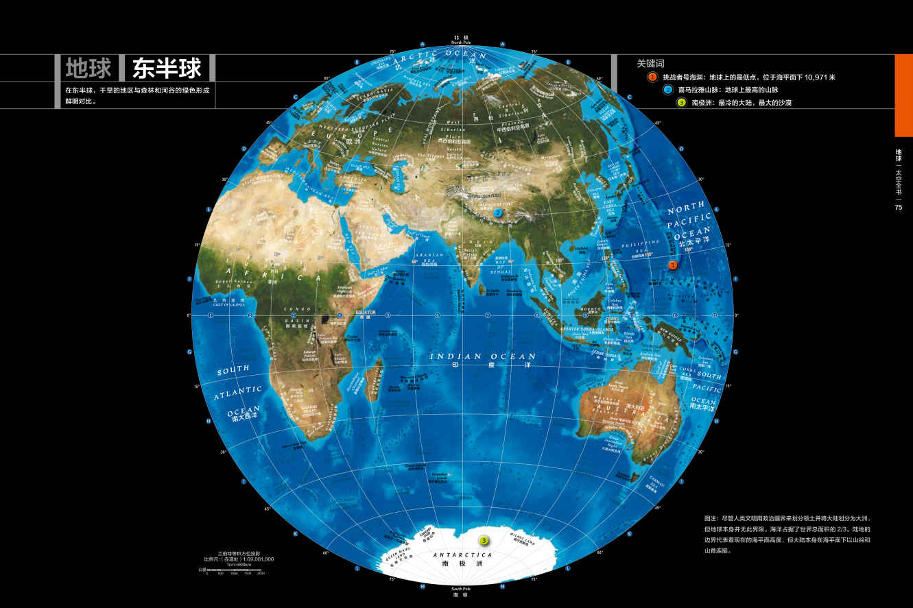

中国有句谚语：“千里之行始于足下。”这句话非常贴切，我们的宇宙之旅也应该从我们的“后院”——太阳系开始。在这一章你将会在我们邻近的天体上发现令人惊讶的场景，这些细节是我们上一代人无法想象的。这都要归功于一项新技术——空间探测器。在太阳系中，每个行星都曾被一个或多个探测器造访过，有些探测器在某些行星（如金星、火星）上着陆，也有些探测器传送回了行星（如木星、土星）的照片。我们不但探索了行星，还探索了它们的卫星。我们开始意识到在我们的太阳系中，每一个星球都有它独一无二的故事。人们曾经认为在火星和金星上生命可能会存在（当然不排除存在的可能性），而现在人们认为一些更为寒冷的地方更有可能孕育生命——比如木星和土星的卫星们，本章介绍这些卫星的内容中将会为大家展示。
最终，我们的视野拓展到了冥王星轨道以外的区域，即被称为柯伊伯带和奥尔特云的区域。至此，行星世界已经被探索得比较完备了，而我们的内太阳系只是整个太阳系中很小的一部分。众所周知的冥王星“降级事件”就是因为我们采用了新的视角观察整个太阳系。
艺术家笔下天苑四（波江座ε 星）恒星系统的形成。
太阳系的一切源于45亿年前宇宙中的一团巨大星云。而今天，我们看到的则是一些行星绕着一个再普通不过的恒星周而复始地运行。那么，这个巨大的星云是如何变成今天这个样子的？仔细观察我们熟悉的太阳系，这些问题的线索就在天体的运行规律中：行星的轨道几乎在一个平面上，所有行星的运行方向相同，距离太阳较近的行星都是质量较小的岩质行星，而距离太阳较远的行星都是气态巨行星。从18 世纪开始，科学家们就开始致力于解释这些规律，其中对此做出最大贡献的就是法国物理学家皮埃尔- 西蒙·拉普拉斯（1749-1827）。
太阳系的形成
formation
【太阳能的诞生】
太阳
年龄：45-46 亿年
与银河系中心的距离：2.8 万光年
类型：G2V 型主序星
主要元素：氢、氦、碳、氮、氧（H、He、C、N、O）
太阳系
行星数目：8
岩质行星：水星、金星、地球、火星
气态巨行星：木星、土星、天王星、海王星
矮行星数目：5
卫星数目：169
太阳与海王星轨道的距离：30AU
太阳与奥尔特云边缘的距离：100,000AU
据拉普拉斯推测，重力会使一个星云产生一些和早期的太阳系类似的现象。在夜空中，这些像碎云一样的亮斑随处可见，通过望远镜,我们很容易观测到。拉普拉斯提出了这些星云产生一个像太阳系一样的行星系统的过程，这被称为星云假说。时至今日，随着人们对星云假说认识的不断深入细化，星云假说已经成了较为成熟的理论。
要理解太阳系的形成，让我们先来看看产生它的那团星云。和其他星云一样，早期的太阳系也是由大爆炸不久后产生的元素——氢和氦，和少量由大质量恒星合成的元素组成（参见第277-283页）。现代天文学认为，超新星爆发时，附近的星云就会因为受到挤压而产生一些物质更为集中的区域。这些物质集中的区域由于具有更大的引力，使得附近的物质向中心聚集。最终长达数十光年的星云开始破裂并聚集为一些质量更集中的小区域，其中的一小团星云最终形成了我们的太阳系，它被称作原太阳星云。随着气体向中心塌缩，星云开始旋转。对于星云是如何形成行星系统的模型，拉普拉斯认为太阳系的形成过程温和平静，太阳的引力和热辐射造就了整个太阳系，并且太阳系从形成至今变化不大。我们将要看到，在过去的几年中，人们对太阳系形成过程到底有多“平静”的认识有了翻天覆地的变化。
冰与火
当然，引力永远不会消失。在原太阳星云形成之后，引力作用会继续影响整个恒星系统。当系统内部继续坍缩的时候，有两件重要的事情会发生：其一便是星云中大部分物质会向中心聚集并最终形成一颗叫作太阳的恒星；其二便是当物质向中心集中的时候，其转速也将加快，就像滑冰运动员收起手臂的时候转速会加快一样。在这种大部分物质向中心聚集以及其转速加快的情况下，系统内部各种力的作用——引力、压力、离心力甚至磁场作用力——都在发生着变化。这种变化使得没有被吸入初生太阳的物质变得扁平并开始围绕太阳旋转。当整个系统最终形成圆盘的时候，太阳系的雏形便诞生了。
圆盘形成之后，由于附近物质的作用，太阳的温度开始升高。在火星和木星轨道之间，其温度高到挥发性物质，如水、甲烷等无法以固态形式存在。在这个区域以外，这些挥发性物质以固态形式存在，科学家们称两个区域的分界线为“雪线”。而内太阳系的物质不同于“雪线”以外的外太阳系。所以，距离太阳较近的行星被称为“类地行星”，而距离太阳较远的行星被称为“类木行星”。
帮助我们了解早期太阳系形成过程的一个主要工具是大型计算机，即将太阳系中各种力的分布和太阳释放的能量输入加以模拟。前文中对于早期太阳系的描述即基于这些模拟计算。
人们经常会问科学家们是如何了解数十亿年前地球形成时期发生的事情的。那么就让我们从一个小环节窥探一下整个故事——行星分异出核、幔和壳等结构的过程。弄清行星的形成过程是一个引人入胜的科学探索故事。
故事开始于太阳系刚刚诞生时，太阳系还是一片尘埃云的时候。由尘埃构成的云气中含有一定数量的铪-182原子（铪是一种罕见金属，通常状况下为银灰色有金属光泽的固体）。这些原子核不稳定，会逐渐衰变为稳定的钨-182（钨，主要用于制作白炽灯灯丝），其半衰期约9000年。最为有趣的是，铪-182富集在地壳层中，而钨-182则富集在铁、镍组成的内核中。这就意味着如果钨-182随着铁迅速沉积到内核中，铪-182会留在地幔中并最终衰变，地幔中会出现大量的钨-182。而如果铪-182在完全衰变之后才开始沉积，最终钨-182几乎全部位于内核中。
通过比较地幔中钨-182和陨石中钨-182的含量，科学家们确认了地核形成于太阳系形成后的3千万年。这就是科学家们探索太阳系形成过程中的一个小问题。
类地行星
让我们将目光投向类地行星。由于引力和能量的共同作用，内太阳系的挥发性物质几乎全部逸散，内太阳系的行星是由铁、镍、硅酸盐石等高熔点物质组成的。当这些物质围绕太阳运行的时候，它们相互碰撞、挤压，逐渐形成了从石头到山脉大小的岩石，被称为“星子”。这些星子最终聚集在一起形成了行星。
20世纪90年代之前，人们普遍认为行星自形成以来就与现在的轨道和状态相差无几。然而，计算机模拟的结果告诉我们这个模型的偏差，其结果令人惊讶。计算结果表明，内太阳系由数十个月球大小的形成星球的“胚胎”环绕太阳。就像一场不可思议的台球比赛一样，星体的“胚胎”互相撞击、融合，有的发生碎裂，有的小块脱离太阳系。就像我们将要看到的那样，地球的卫星——月球就是由一次撞击形成的，科学家们认为另外一次撞击导致水星的外壳被剥离，仅剩下一个内核，就像我们现在看到的那样。
如果不考虑一些细节的话，这场内太阳系的台球比赛结束之后，内太阳系仅剩四颗行星——水星、金星、地球和火星，就像我们现在看到的那样。
巨行星
与此同时，在“雪线”之外则是另一片景象。由于这里有更多不受干扰行星形成原料，与类地行星相比，外太阳系的星子生长得更快。巨大的质量使得行星吸引周围更多的氢和氦。这些行星即成了所谓的气态巨行星，特别是木星和土星，它们是太阳系内最大的两个行星。
后续的过程和类地行星相比更加复杂。巨行星木星和土星像上面描述的那样迅速成长了起来。显然，下面的两个行星——天王星和海王星形成时间更晚且形成时比现在距离太阳更近。它们同样形成于太阳童年将巨量粒子流吹向宇宙空间的时期，这种外流将太阳系的大量原初氢和氦剥离太阳系。因此，这两个行星的长得更小且与木星、土星拥有不同的化学组分。实际上，为了强调这种区别，它们更多被人称作冰巨行星而不是气态巨行星。
这四颗气态巨行星和剩余的星子一样都在它们各自的轨道上运行，靠引力维持着各自的形状。在大概5亿年之后，木星和土星进入了科学家们称为“2:1共振”的运行状态，即木星每围绕太阳转两圈，土星围绕太阳转一圈。引力对于行星位置的影响是巨大的。海王星的轨道被推向外层，就像一个保龄球一样，海王星冲向了剩余星子组成的原行星盘中。此时太阳系的原行星盘大致延伸到今天天王星轨道的附近，但当这种行星的迁移完成后，一直到现今，冥王星轨道的星子都被清空了。
海王星迁移所产生的另一个影响是使木星更靠近太阳了，这种移动使得木星和火星之间的小行星带发生了扰动。许多物质被射向太阳系外的空间，这些物质也会或多或少分布在小行星带上。这些物质的位置发生变化的结果是在数亿年的时间内，内太阳系的每一个天体都曾经遭受过严重的撞击。科学家们将其称为“晚期重轰击”。时至今日，我们还可以在没有大气的水星和月球上面看到撞击的痕迹，尽管地球上的撞击痕迹可能因风化已经消失殆尽。
无论如何，在过去的数十年中，天文学家逐渐弄清了早期太阳系并不是像拉普拉斯想象的那样平静地逐渐坍缩。但一旦内部激烈的碰撞结束，太阳系就成了一个井然有序，可以预测其走向的地方，这也是我们开始迈出宇宙旅行的第一步。
水星表面卡洛里斯盆地的伪彩色图片。
星是距离太阳最近的行星，这就意味着地球上的观察者总是在太阳附近发现这颗行星。在白天，行星的光芒被太阳所掩盖，所以我们只能当太阳落下后，在黄昏看到这颗行星。这颗星不可能在夜空中升得太高，只是因为在夜晚水星位于观察者的对侧。和金星一样，对于观察者来讲水星也总是以晨星或昏星存在。肉眼直接观测水星的记录可以追溯到公元前14 世纪，是亚述人记述的，而到了4 世纪，希腊人才意识到他们在清晨和黄昏看到的星实际上是一颗星。
水星。
发现者：未知
发现日期：史前
命名：罗马神话使者墨丘利
质量：地球质量的6%
体积：地球体积的6%
平均半径：2,440 千米
最低/ 最高温度：-173℃ /427 ℃
一天长度：58.65 个地球日
一年长度：87.97 个地球日
卫星数目：0
光环系统：无
古罗马人给了水星一个特别的称谓，他们将水星命名为跑得很快的众神信使（大概是因为水星在夜空中的快速移动让人想到了这位神的速度）。一个非常有意思的事情就是古巴比伦人将这颗星命名为“拿布”，即神庙中神的信使，大概就是因为同样的原因。
冰火两重天
水星的质量较小，其质量只有地球的5%，其表面的大气也早已在太阳的炙烤下消失殆尽。就像我们的月球一样，水星是一个死气沉沉的世界，内部没有由地质活动引发的造山运动，外部也没有大气侵蚀它的表面。水星的标志和月球一样，有那些很久以前撞击留下的无声见证——环形山。这颗行星每176个地球日绕轴自转一圈，每88天绕太阳转一圈。因此，水星的每个地方白天都面向太阳的阳光，而晚上则暴露在寒冷的空间中。
正如大家所想，水星如此靠近太阳，它表面的温度可以非常高——它面向太阳一侧的赤道可以达到427℃，高于金属铅的熔点。不过大家可能想不到的是，在午夜，水星可以达到-173℃。究其原因，当一个地方进入夜晚的时候，由于没有大气覆盖来维持热量，白天积累的热量迅速辐射到太空中，温度迅速下降。（准确地说，水星表面有一层非常薄的原子，科学家们称之为“外逸层”。这层原子由表面物质挥发而来，最终将飘入空间。）
环形山的世界
和月球一样，水星没有大气，其环形山存在了相当长的时间。其中最大的是卡路里盆地，直径长达1,600千米，几乎可以确定这是来源于一场剧烈的撞击。实际上，在卡路里盆地的正对面是一片被称为“奇怪地形”的丘陵。一些科学家认为这片区域产生于卡路里盆地诞生时的冲击波。水星上很多环形山和月球上的一样，都有一个平整的表面。有一种说法认为，这些平整的区域是因为岩浆的流动所形成的，其岩浆是撞击本身带来的。环形山之间是起伏的山脉，代表着水星现存最古老的地形。这些平原在山脉间纵横交错，可能是水星在冷却的时候表面产生褶皱的原因（你可以想象当苹果干瘪时候上面褶皱）。
和其他岩质行星一样，水星也是一个充满石头的世界。水星上有微小的磁场，其强度大约是地球的百分之一；可能和地球一样，水星磁场内部也有一个巨大的铁核——大家可以把它想象成一个巨大的磁铁。
实际上，基于下文介绍的探测器所收集的大量数据，科学家们认为水星有一个异常大的铁核，体积占据超过水星总体积的42%。为了解释这种异常的组成，于是一些新的理论诞生了。其中最流行的是，当分化过程结束之后（见76页），水星在大约40亿年前的后期重轰炸期被一个巨大的星子撞击。这次撞击使得水星很大一部分较轻的外壳被剥离，剩余中间部分的铁核比例增大；另外一种解释就是水星形成于太阳稳定之前，在水星形成时太阳的剧烈活动将较轻的物质剥离。在这种情况下，水星一开始就形成了一个富含铁的环境。
一次剧烈的撞击形成了卡路里盆地
水星的“奇怪地形”
尽管水星肉眼可见，但只有在信使号探测器发射后，我们才能看到水星的细节。水星是一个没有空气的世界，所以地貌一旦形成就不会再被侵蚀。这就意味着这颗行星的历史可以通过从未改变的地貌而得到。
目前水星上最具标志性的特征是卡路里盆地，一个直径长达1,600千米的环形山。形成卡路里盆地的那次撞击发生于38亿年前，大致就是月球因撞击而形成月海的时间。卡路里盆地是太阳系中最大的环形山之一。
这次撞击的威力可以从被抛出物形成的1.6千米高的边缘看出。更为有趣的是，在卡路里盆地的对侧有一片被科学家称为“奇怪地形”的丘陵。这片区域就是由形成卡路里盆地的那次撞击形成的。关于这片区域的形成，目前有两种理论解释：一种理论是撞击形成的地震波经过整个水星的传递后在另外一侧聚集，将原有的地貌破坏；另一种理论是撞击抛出的物质在水星另一侧降落，就形成了我们今天看到的不规则地貌。
水星探测器
由于水星距离太阳过近，用地面望远镜观测水星十分困难。事实上，大部分水星细节的信息来源于两个探测器。第一个探测器——水手10号，它在1974年曾到达水星并在其燃料用尽之前三次飞掠水星。现在，这个探测器有可能在绕日旋转，当你阅读这篇文章的时候它正在做着不采集数据的飞掠。
另一个探测器是信使号探测器，2004年发射于卡纳维拉尔角。在造访金星和地球之后，于2008年1月14日第一次飞掠水星。2011年3月18日，它进入水星轨道，开始传回这颗行星表面、地貌和磁场信息细节的数据。它发出了超过70,000张水星表面山脉和环形山的图片。科学家们希望这个探测器能够提供有关水星异常的密度和内部结构的答案。预计2019年，欧洲航天局将会发射一个叫作“比皮科伦坡”的探测器到达水星，代表着下一轮对于水星的探测。
最后，在离开这颗行星之前，我们必须提一下它对于现代科技所做出的贡献。和其他行星一样，水星绕日轨道也是椭圆形的，其距离太阳最近的点叫作近日点。由于其他行星的引力作用，科学家们认为每次其他行星靠近的时候，水星轨道就会有微小的移动——想象一下，每次靠近太阳的时候，水星的椭圆轨道都会移动一小段距离。19世纪末期，计算结果表明水星轨道的移动距离比用简单的引力效应计算结果更大——实际上，水星轨道大约每100年移动43角秒。1915年，爱因斯坦发表了广义相对论。事实证明，广义相对论可以精确解释水星近日点移动的问题。所以，这颗行星成了目前最新引力理论的一个检验工具。
电脑合成的金星上的牛拉山（Gula Mons），位于金星的东半球。
作为距离太阳第二近的星球，金星经常被称为地球的“孪生姐妹”。实际上，金星也是和地球质量最接近的行星——它的质量是地球质量的85%。和水星一样，金星也只能在清晨或傍晚被我们观测到。金星的名字也来源于罗马众神。金星是罗马众神中的爱神，很多古老的文明也有相似的观点——如古巴比伦人，将这颗星命名为“Ishtar”，即希望女神。除了月球之外，金星是夜空中最明亮的天体，甚至在城市灯光下人们依然能够看到金星。或许是因为金星实在是太明显了，它也是被误认为是UFO天体次数最多的星球。
金星
Venus
【 一个美丽的炼狱 】

金星东半球。
发现者：未知
发现日期：史前
命名：罗马神话中的爱神维纳斯
质量：地球质量的82％
体积：地球体积的86％
平均半径：6,052千米
表面温度：462℃
一天长度：243个地球日（逆向）
一年长度：224.7个地球日
卫星数目：0
光环系统：无
金星大致用225天的时间绕太阳一周，但金星的自转却非同寻常。如果我们从太阳系的上方看，太阳系内所有行星的公转方向都是逆时针；绝大多数自转方向与公转方向相同，从上方看同样是逆时针。在太阳系成为日后形成行星的圆盘后，这种自转方式就已经确定了。然而，金星的自转是逆向的而且金星的一“天”长达243个地球日，在所有行星中自转速度最慢。科学家们认为导致金星如此异常的原因是在金星形成时期的一次撞击（见44-46页）。
直到20世纪后期，除了知道其和地球相似外，天文学家对金星了解甚少。这是因为金星表面的浓云永远都遮挡着金星本身。后来，20世纪60年代，美国和苏联开始系统地向金星发射探测器，第一步环绕或飞掠金星，然后着陆并探测金星本身。1962年水手2号飞掠金星，并用微波和红外线探测了这颗行星。这时我们才知道金星表面非常热，温度高达462℃，甚至比水星还要热，尽管金星与太阳的距离大于水星。
金星表面的高温让人感到惊异。在20世纪中期的科幻小说中，金星经常被描述成一个温度较高，气候湿润，适合人类移民的地方。但是，探测器传回的初步数据已经足以把金星从太阳系宜居行星的名单中清除。
金星探测器
1966年苏联发射的金星3号在金星上撞击着陆。这次探测的目的是着陆并传回数据，但探测器降落时被金星浓密的大气烧毁。1967年，强度更高的金星4号进入金星大气层并传回数据，但由于降落伞使得其降落速度过慢，探测器在抵达目的地之前电量耗尽。最后，1970年，金星7号以更小的降落伞对抗大气压，成功降落并传回数据。后来又有一些探测器成功着陆，一般都是在被金星表面极端环境摧毁之前，在一小时内传回数据。
1978年，美国先驱者金星探测器使用雷达技术穿透云层，制作了第一张金星地图。随后美国和苏联继续对金星进行探测。1989年，根据麦哲伦号的雷达图，人们制作了前所未有的金星三维表面图。2005年，欧洲航天局发射了金星快车探测器，于2006年进入金星极轨道，此后一直传回金星戏剧性的大气活动。
艺术家对金星闪电的想象图。由于金星大气主要由二氧化碳组成，大气压力巨大而且有硫酸云，金星并不像早期科幻小说描绘的那样适合人类居住。
炽热，剧毒，火山林立
金星的大气几乎是纯净的二氧化碳——含量超过95%——其余的部分为氮气。其大气压力约为地球海平面附近的92倍。这种压力就像在地球上1千米深的海平面下一样。也难怪第一个探测器会坠毁。科学家们设想金星早期曾经有海洋，但是在太阳的炙烤下，海洋蒸发殆尽。没有了海洋吸收二氧化碳，二氧化碳的浓度就像火山喷发一样上升。这个星球经历了不可控制的温室效应，最终温度升高到今天这样。
由于金星有浓密的大气，金星上各个地方的温度几乎相等。金星上的风速很低（每小时只有十几千米），但是由于大气过于浓密，在金星表面站立十分困难——想象一下“微风”就像潮水而非微风一样涌来吧。
金星的云主要由二氧化硫和硫酸组成。金星高空的风力强劲，风速高达每小时几百千米，我们现在仍不知道是什么导致了风力如此强劲。金星会下硫酸雨，但穿过大气时即会蒸发殆尽，从未到达金星表面。通过与太阳带电粒子流复杂的相互作用，这些云也产生了微弱的磁场。金星极慢的转速使人们排除了金星形成像地球通过液态铁核形成强磁场的可能性。
据雷达地图显示，金星的地貌基本是由火山塑造的。大约80%的表面是光滑的平原，剩余部分是两片较高的“大陆”。金星表面有167个火山形成夏威夷大岛，比地球上最大的火山还要大。有证据表明，金星上的很多火山依然活跃。
金星的平原上有星星点点的环形山，其中大部分没有被侵蚀。科学家们认为这表明了大约5亿年前，金星经历过一次“地形重塑”事件，岩浆流将旧的表面覆盖，产生了我们现在看到的平原，并为撞击的陨石创造了一个新的表面。这个模型显示，随着时间的推移，金星地面温度逐渐上升，壳层开始松动，大致每亿年左右就会形成一个新的表面。我们没有发现水星上有这种不定期发生的“地形重塑”，不过这表明了太阳系重要的一点：我们遇到的每一个世界都与其他世界迥然不同，这个世界有新的地理环境，新的大气环境，新的现象。如果我们比较金星和我们下一个将要造访的星球——地球，就会发现这个道理的正确性。
穿过大西洋的气旋。
显然，我们对于地球的了解比对太阳系内其他行星的了解多得多。然而如果把地球当成行星和卫星众多的太阳系内的一员，我们还有很多需要研究的地方。地球与其他世界有什么不同？有两个重要的区别：第一，地球是最大的岩质行星。就像我们将要看到的那样，地球的体积会随着其表面持续不断地移动、变化。第二，地球的轨道位于一个环绕太阳被称为“宜居带”的狭窄地带，宜居带指的是一个液态水可以长期存在于这个星球表面的地方。正因为如此，地球是我们知道太阳系内有生命存在的唯一星球。
发现者：未知
发现日期：史前
命名：古英语“ERTHA”，意为“大地”
质量：5,972,190,000,000,000,000,000,000 千克
体积：1,083,206,916,846 立方千米
平均半径：6,371 千米
表面温度：-88℃ -58℃
一天长度：23.93 小时
一年长度：365.26 天
卫星数目：1
光环系统：无

在地球形成的最初5亿年时间里，可能会有出入，地球扫清了其轨道附近的碎片。如果有人站在那时的地球表面，他（她）一定会感觉到周围巨大星子的猛烈撞击。科学家们将这个时期称为大撞击时期（注意，这与后期重轰炸期不同，大撞击发生于太阳系形成早期）。每一次撞击都为新形成的行星注入能量，这种能量最终以热的形式表现。最终，地球的每一部分都熔化成液体或者被加热变软到可以自由流动，科学家们仍然对细节有争议。不过，不可否认的一个事实是早期对于行星的加热完成了行星物质的分化过程。密度大的物质，如铁，从表面沉入地球的核心，而密度小的物质则浮在上面，形成了地幔和地壳。就像沙拉酱放置了过长时间一样，地球上的物质也通过自身的重力分成两层。
地球的分化过程产生了我们赖以生存的磁场。密度较大的铁、镍沉入核心，核心的压力足以将这些原子压成固体。在核心的上方，其温度和压力只能使物质以液态形式存在。流动的液体金属核最终产生行星的磁场。
沸腾的地球
刚刚诞生的地球内部有两个热源：大撞击时期留下的余热和岩石中放射性元素的衰变。就像炉子上面的一壶水一样，行星的内部需要将热量传递到表面并辐射出去。也就像那壶水一样，地球“沸腾”了。数亿年前，地幔中的岩石启动了一次循环，热的物质从一个地方上升，冷却并在另一个地方下沉。随着沸腾的持续，在分化过程中已经上升到地球表面之下的较轻的物质被带走，就像溪流上的叶子一样。在最上方是我们称之为“坚实地面”的最轻物质的集合，就像木筏上的人一样在上方漂动。
描述这颗行星内部运作最好的方式，就是想象一壶沸水上面漂着的一层薄油。这壶热水将这层油打碎，创造出一种纵横交错的图案。同样，沸腾的地幔也将这颗行星的表面打成被我们所谓的板块。
板块构造论基于地球的表面随着地幔中岩石的运动而移动的板块构成（构造一词的英文为“tectonics”，与建筑“architect”在希腊文中同源，指建造的过程）。一些板块承载大陆，另外一些不承载大陆，但由于地球内部持续不断地沸腾，这些板块上所有的东西随着板块移动并重构这个星球的表面。比如，曾经有过一个时期，所有的大陆像巨大的项链一样集中在赤道附近，这片聚集在一起的大陆被称为盘古大陆，而其他行星并非如此运转。水星和火星（我们的月球也一样）足够小，在很久之前热量已经散失殆尽，现在已经完全凝固。而对于金星来说，虽然火山的活动是金星的一个标志，但金星依然过小，无法完成板块构造。
夏威夷大岛上的一次火山喷发将很多不同的物质带向地球表面，部分被抛向大气层，大气（图中不可见）和红色炽热的岩浆流向海洋。
宜居带
地球被天文学家称为恰好最宜居住行星——不冷不热、温度极为精确地落在宜居区域。在过去的40亿年中，太阳的亮度提高了三分之一（见203页），在这个过程中，地球总是能够把气温调节到水的凝固点和沸点之间。这也就意味着液态水能够一直在其表面存在。就像我们将要在70页中看到的那样，液态水的存在被认为是进化出生命的必要前提。假如地球比现在距离太阳更近，或许地球会沿着金星一样的轨迹发展，失控的温室效应会将生命扼杀在摇篮中。假如地球比现在距离太阳更远，或许地球会冻成一个冰球，生命也将不复存在。
每一个恒星的周围都有一个窄带，在这个窄带内行星表面温度在水的凝固点和沸点之间。这个窄带被称为恒星的宜居带（Continuously Habitable Zone，缩写为CHZ）。地球就在宜居带内，这也就是地球上能够诞生生命的原因。
生命的存在改变了整个星球。比如在地球上，大气层内活跃氧气的增加就是生命新陈代谢的结果，许多生命的演生过程打破了岩石，创造出泥土。天文学家们正在其他恒星宜居带上类似于地球的行星上寻找生命的标志。
和我们在小学时学到的内容不同，古人早就知道地球是圆的，到了哥伦布航海的时代，人类已经知道这件事情达千年之久了。实际上，在公元前240年左右，古希腊昔兰尼地理学家，著名的亚历山大图书馆馆长埃拉托色尼就已经完成了第一次地球半径的测量。他知道在夏至的正午，太阳光穿过赛伊尼（今阿斯旺）的一口井，代表太阳直射。与此同时他测量了由亚历山大市已知高度的一根柱子投下的影子。通过这些测量和一些几何知识，他得出了亚历山大和赛伊尼之间的距离是地球周长的1/50。他如何确定这两个城市之间的距离是一个永远的未解之谜，但他首次报道了地球的周长——252,000个赛跑场的长度。
不过问题在于，古代有很多赛跑场的标准长度，就像现在有法定英里（1英里=5,280英尺）和海里（1海里=6,076英尺）一样。所有的体育场都是180米左右——足球场的2倍，埃拉托色尼最可能的测量结果为地球的周长是47,000千米，现代测量结果显示地球的周长接近40,000千米。他可能同样用了这个数据去测量地球和太阳之间的距离。
地图显示了地球的板块。由于地幔的缓慢搅动，板块开始移动，地球内部放射性元素的衰变带来的能量驱动了这种搅动。太阳系所有的行星中，地球的地貌因运动而不断变化。
月球，我们从孩童时代就十分熟悉，是夜空中最亮的天体。它每27天多绕地球转一圈同时自转一周。这就意味着它保持一面对着地球。用天文学术语来说，月球已经被地月之间复杂引力和潮汐锁定。我们会看到太阳系的卫星中，这种现象十分普遍。这种复杂的引力作用使得月球以每个世纪4厘米的速度远离地球。
发现者：未知
发现日期：史前
命名：古英语“MONTH”，意为“月”
与地球距离：384,400千米
质量：地球质量的1.2％
体积：地球体积的2％
平均半径：1,738千米
表面重力：地球重力的0.17倍
最低/最高温度：-233℃/ 123℃
一天长度：27.32个地球日
一年长度：27.32个地球日
人们对月球的科学研究有很长的历史。古希腊、中国和古印度的天文学家都认识到月光是月亮反射太阳光而来的，而亚里士多德认为月球位于地球和天球之间。公元2世纪天文学家克罗狄斯·托勒密延伸了古希腊天文学家的工作，估算了地月距离和月球的体积，与现代测量结果只有百分之几的差距。
1609年，伽利略用他新制的望远镜获得的信息制作了一张月表地图，显示了山脉、平原和环形山。月球和地球有相似的地形地貌，这件事情使人们开始质疑旧的理论地心说，因为旧的理论认为月球是一个平坦光滑的球面。而在地球上从未看到的月球背面是苏联的月球3号首次绘制出来的，美国和苏联的无人探测器都是在这一年登陆月球表面。
一小步
“冷战”激起的太空竞赛导致了1969年人类第一次踏上月球，当尼尔·阿姆斯特朗从阿波罗11号的梯子上走下去的时候，说出了他那句著名的话：“对一个人来说,那是一小步,对人类来说,却是一个巨大的飞跃。”从科学的角度看，最重要的是在6次登月的过程中，宇航员们带回了380千克用于科研的月球土壤，其中一些可以追溯到太阳系最初的时候。
在1972年阿波罗计划结束之后，只有无人探测器抵达月球。美国、印度、日本、中国以及欧洲航天局在过去几十年间曾经对月球进行探索。
月球的结构
我们现在知道月球和地球一样，都诞生于45亿年前。科学家们曾经对形成过程争论许久。一个基本的问题就是月球的密度明显比地球密度小，是因为月球的铁核非常小。是什么原因使得同样形成于行星云的地球和月亮最终差异如此之大？
阿波罗17号宇航员将美国国旗插到月球上。月球车被开往着陆点附近以收集地质样品。我们了解到大多数关于月球形成的信息都是通过对这些地质样品的研究得到的。大家看到的脚印至今仍在。
目前公认的理论是在地球形成的初期（分化之后），地球和一个火星大小的天体（分化过程同样已经完成）发生碰撞。这次碰撞剥离了地球一大块低密度的地幔和一些喷射出来的物质，和一些其他天体一起绕着地球旋转。这时，类似于构造岩质行星的吸积过程开始起作用，月球就是这些环绕的天体形成的。虽然月球只是太阳系内第五大卫星，但月球是与它的行星关系最密切的。它的半径是地球的1/4，而质量是地球的1/81。
地球密度最大的部分（铁质地核）并没有对月球的组成做出贡献，这就能够解释为什么地球和月球密度差距如此之大。年轻的月球和地球一样经历了分化的过程（见第76页），所以内部同样有一个铁质内核，但由于上述原因内核比地球的小得多。月球的正面（地球上能够看到的一面）的主要地貌是占据1/3的广阔黑暗的平原（背面没有多种多样的地貌）。这些平原被称为月海，因为早期的天文学家认为它们是海洋。月球上有大量的岩浆流出，规模最大的一次要追溯到30-35亿年前。月球表面较亮的部分通常被认为是高原，它们较为古老，大致形成于44亿年前，代表着月球冷却时第一批结晶的岩石。月海和高原一起组成了我们熟悉的、在晴朗的夜晚看得到的“玉兔”。
月面
环形山，千百万年来板块运动撞击的结果，点缀着月球的表面。月球没有大气，凝固的世界中没有地质活动，环形山一旦形成便永远存在。于是，今天在月球上便有了成百上千座环形山。
事实上，能够引起月球表面变化的唯一原因是新的陨石撞击。小的撞击破坏了表面的岩石，产生了小的玻璃状的碎片，接合在一起（你可以想象一下潮湿的糯米）。这种物质叫作月壤，除了陡峭的表面，我们还可以在其他任何地方发现。在古老的高原上约10-20米厚，而在月海中约3-5米厚。
因为人们经常设想在月球建立临时基地甚至殖民月球。曾有一段时间，月球上有没有水的问题催生了很多科幻小说。在月球上寻找水最好的地点是月球极地的撞击坑。因为这些地方从来没有暴露在太阳下。2009年，印度第一次月球探索，月球一号探测器找到了月球表面水反射的太阳光。几周之后，美国月球陨坑观测和遥感卫星（LCROSS）投射了一个皮卡车大小的撞击器，从撞击碎片可以看出上面有足够的水来填充一个小型蓄水池。
在离开月球之前，我们不得不澄清几个关于月球的误解：
·没有显著的证据表明，满月之夜进入精神病房的人比其他时候更多。
·没有证据表明月球的背面有外星人的UFO。
·地平线附近的月亮更大是一种视觉错觉。读者可以自己核实一下，当月亮出现在地平线附近的时候记录月亮大小，几个小时之后月亮升高后再对比一下。你会发现两种情况下月亮大小相差无几。
每个人都知道潮汐形成的原因是月球的引力在拉海水。但是关于潮汐，有两件稍微复杂一些的事情。一件事情就是一天有两次潮汐而不是一次，另一件事就是潮涨发生于月球位于地平线上而非恰好位于头顶，所以潮汐并不是月球吸引朝向月球那一面的海水那样简单。因为在这种情况下，潮汐每天发生一次而且潮涨应该发生在月球恰好位于头顶的时候。
我们知道月球围绕着地球旋转，但实际上，月球和地球共同围绕着地月之间的一个点，我们称之为质量中心。当地球围绕着质量中心旋转的时候，转动引发的离心力引起了第二次潮涨，这与第一次由于月球重力引起的潮涨正好相反。这就是为什么每天会有两次潮汐。
潮涨发生在月球在地平线附近而非恰好位于头顶，是因为地球上的海洋相对较浅——平均深度只有5千米。这就意味着地球转动的过程中，潮涨不可能一直保持在月球下面，会落后。如果海洋有97千米深，潮涨会延后12个小时，在月球位于头顶之时发生。
火星——距离太阳第四远的行星，是除了地球之外被探索得最多的行星。在科幻小说中，有关火星的描述比其他任何星球都要多。在英文中，火星（Mars）一词代表战神。火星总是有一个红色的表面，因为表面布满了氧化铁（铁锈的主要成分）。火星比地球小，其半径是地球的一半，质量是地球的11%。因为质量较小，火星在很久以前就失去了大气层，现在只有一层主要成分为二氧化碳的稀薄大气。火星表面的大气压大致相当于地球海拔35千米处的大气压力。
发现者：未知
发现日期：史前
命名：Mars，古罗马战神
质量：地球质量的11%
体积：地球体积的15%
平均半径：3,390千米
最低温度/最高温度：-87℃/-5℃
一天长度：1.03个地球日
一年长度：1.88个地球年
卫星数目：2
光环系统：无
火星的自转轴倾角与地球几乎相同，所以这颗红色的行星和地球一样都有四季变化。然而火星上的一年大致相当于地球上的两年，所以每个季节长度也是地球上季节长度的2倍。和地球一样，火星的半球进入冬季之后，其极地是没有阳光的，但在火星的极地，空气中大量的二氧化碳凝固成固态二氧化碳厚壁，即地球上的干冰。当太阳照射极地干冰层的时候，干冰即消失。干冰下面是水冰组成的极冠。火星北半球极冠的水冰比地球上格陵兰岛上的一半略少。
火星的北半球由岩浆流构成，相对平坦，而南半球有古老的陨石撞击坑。现有的理论认为历史上火星曾经有遍布南北半球的海洋——可能是海水蒸发后，由于火星质量过小，已经逸散到宇宙空间。科学家们认为，火星最新形成的海洋在北半球。如果我们移步南半球，在我们进入布满环形山的南半球之前，先要经过一个过渡地带（一位科学家认为这是海滩地带）。
山峰和山谷
火星表面很多显著的地貌只有在宇宙飞船传回的数据中可以看到，与地球上的某些地貌有些相似。有两件事情特别值得关注：火星上的死火山奥林匹斯山脉是太阳系内已发现的最大火山，奥林匹斯山脉高达27千米，大致是珠穆朗玛峰的3倍高；水手峡谷是一个大约4,000千米长、7千米深的峡谷（美国的大峡谷大约为450千米长，2千米深）。
火星上的水
1877年，意大利天文学家乔范尼·夏帕雷利制作了第一张火星细节地图。他用望远镜看到了火星表面的条纹，将其称为“通道”。但在翻译成英文的时候被译成了“运河”，使得人们认为火星上有生命存在。美国天文学家帕西瓦尔·罗威尔继承了夏帕雷利的工作，他的《火星——生命的栖息地》（Mars as the Abode of Life）将火星宜居的观念带入公众视野。罗威尔不但声称看到了运河而且报道了他们如何根据季节填水或排水。
这种看似美丽实际上并不正确的理论在当时传播开来并不时流行了一段时间。火星是已经灭亡的文化栖息地，地球是繁荣文化的栖息地，而炎热潮湿的金星则代表着未来。我们现在知道罗威尔的“运河”实际上是一种错觉，而他的结论是基于人们看到随机组合图片时产生的错觉（可以想象一下罗尔沙赫氏测验）。
现代火星探索始于1964年水手4号飞掠火星和1971年水手9号获得详细数据。令科学家们最感到惊奇的是宇宙飞船传回了火星的峡谷照片。火星的峡谷就像地球上普通的河流一样。这是我们认为火星表面曾经存在液态水的第一个确凿证据，现在这一观点已经被科学界普遍承认。
公众眼中关于火星探索最大的事件是1976年的海盗1号和海盗2号。火星表面的图片一度成了初期互联网上的大事件，在世界的各大报纸杂志上也可以看到。
1996年发射的火星全球探勘者号是火星探索史上的一次重要事件。在十年环绕火星飞行的过程中，宇宙飞船描绘了一张火星表面的细节图。1997年，第一个机器人索杰纳登陆火星。这是它第一次在其他行星表面漫游，而且工程师为它开发了利用气袋缓冲降落后放气使火星车移动的技术。在一个月的探索之后，索杰纳传回了三批数据，为未来火星探测器的长期任务开了先河。

人们第一次发现火星表面曾经有水流动的证据是人们发现火星南部高地上有沟壑，就像地球上的运河一样。
现代的探索
21世纪，探索火星的探测器组成了一支舰队。除了NASA的计划，欧洲航天局，俄罗斯、中国和芬兰的计划也正在或即将实施。最为引人注目的是在2004年精神号和机遇号两辆火星车登陆火星。这两辆火星车探索了火星的岩石和矿物，确认了曾经有一段时间火星表面有液态水流过。
我们本来期待两辆火星车工作几个月，但两辆火星车竟工作了六年之久——这令建造它们的工程师们也感到十分惊异。科学家们将火星车能够工作如此长的时间与火星表面的沙尘和风暴使得太阳能板表面能够没有沙粒，可以容许火星车全功率工作联系在了一起。2010年，精神号陷入深沙中，在耗费了很长一段时间将它从深沙中解放出来后，精神号成了一个静止的观测站。与此同时，机遇号已经在火星表面行走了至少20公里。
再一次的火星探索是在2011年，火星科学实验室发射。一个名为好奇号、甲虫车大小的火星车，携带了6个国家的科学仪器。这次计划最重要的部分是寻找火星表面的有机分子以确认火星是否曾经或现在有微生物。人们也期待它能够提供确认火星未来是否能够孕育生命的证据。当然，这也是人们殖民火星的前奏和那些科幻小说作者梦想的实现。
火星上的脸
我们或许也需要着手处理一下超市收银员们从小道消息了解到的火星计划的唯一结果——火星上的脸。1976年7月25日，海盗1号宇宙飞船围绕火星公转，拍摄它的姐妹飞船海盗2号的可能着陆点。在这颗行星北半球的“海岸带”，即北部平原与南部环形山的某地，一张低分辨率的照片显示了一张脸正凝视着飞船，四面环绕着埃及式的金字塔。控制中心的科学家笑了——澄清了这是一个错觉——但是NASA一些好事的公务员认为将这张照片传播出去是一个吸引公众对火星探测注意力的一个绝好方案。
于是，笔者猜测，过了几年之后，火星上的脸成了边缘科学的典型代表。比如，我可以想到小报消息头条公开宣布那张脸是摇滚巨星埃维斯·普里斯利。
不过到了1998年火星环球探测器再次造访火星并传回了清晰度更高的照片（光线也不同）。就像预期的那样，这张脸消失了，随后几个任务也得出了相同的结论。尽管这近乎一场闹剧，但火星上的脸已经成为“洛厄尔运河”一类的，那些一厢情愿关于这颗红色星球的幻想。
好奇号在火星表面巡弋的艺术想象图。好奇号发射于2011年，是NASA迄今为止最先进的火星车，其主要任务是确定火星现在及过去是否曾经有过适宜生命存在的条件。好奇号并不直接搜寻生命的痕迹，而是搜寻火星表面与生命相关的化学和矿物学线索。
艺术家笔下最大小行星谷神星。
将太阳系内类地行星和类木行星分成两个区域的是一条环带，即小行星带。在我们开始介绍小行星带之前，我们必须澄清两个误解：首先，小行星带几乎是完全空旷的，而不是大家在电影中看到的那样是一个拥挤的、布满石块的地方。宇宙飞船可以不用考虑小行星的影响飞越小行星带。事实上，太空旅行中遇到小行星的概率已经被证实大约是十亿分之一。其次，小行星带并不是一颗行星发生爆炸的结果——它只有一颗行星碎片的很小一部分质量。行星爆炸的理论在19世纪风行一时，灵感可能来自于氪星，想象中超人的故乡。
Asteroid belt
发现者：朱塞普·皮亚齐
发现日期：1801年1月1日
命名：希腊文“STARLIKE”，意为“星形”
主要位置：距离太阳2.1-3.3 AU
数量：570,000以上
平均半径：1,738千米
最大小行星直径：
谷神星：950千米
灶神星：580千米
智神星：540千米
健神星：430千米
目前发现的近地小行星数目：8484
第一颗小行星被发现于1801年。由于当时的望远镜拍到了一张点状的小行星照片，这个模糊的类似于恒星的光点就有了它们的名字（小行星英文“asteroid”由希腊文“starlike”而来）。第一颗小行星谷神星就这样毫无意外地被发现了，它是小行星带中最大的，直径大约950千米。谷神星是小行星带中唯一一颗可以通过重力使自身成为球形的天体——它各个部分的引力将其塑造成这个形状——它集中了小行星带大约1/3的质量。准确地说，它是一颗矮行星（见第184页）。其余小行星带上所有天体都是不规则形状的。现已证实有大约200个小行星直径超过100千米，可能有超过一百万颗小行星直径超过1千米。
不是所有小行星都在小行星带中。一些小行星的轨道使得它们进入到火星和地球轨道的内侧——这提高了它们与其他行星发生碰撞的可能性。
小行星带的形成
在太阳系形成的时候，星子聚集过程（见第45-46页）同样在小行星带发生，与内太阳系类似。如果没有木星，现在小行星带的位置应该形成一颗行星。一种理论是由于大行星引力的作用使得距离较近的星子加速，所以它们要么被木星的引力影响而脱离小行星带，要么互相碰撞而碎裂。无论如何，在木星的影响下，行星无法形成。
事实上，计算模型显示，原初小行星带中的大部分物质在太阳系形成初期的500万年即被抛射出去，其余部分在后期重轰炸期被驱逐出太阳系。在早期，星子中的矿物受到撞击所带来的热量、放射性核素的衰变和与地球结构形成时相同的分化作用的影响（见第76页）。研究这些古老的天体能够为太阳系的形成提供一丝线索。
小行星的探索
从1972年开始，很多探测器——如先驱者号、旅行者号和尤利西斯号探测器——已经成功飞越小行星带，但无一试图拍摄沿途遇到的小行星。从那时开始，我们从飞往其他目标的宇宙飞船上获得了大量图片——如去往木星途中的伽利略号，去往土星途中的卡西尼号。近地小行星会合点（Near Earth Asteroid Rendezvous，缩写为NEAR）在2000年进入了近地小行星爱神星的轨道。2010年，日本隼鸟号探测器经过了为期7年、长达50亿千米的飞行登陆丝川小行星后返回。尽管飞船进入地球大气层时被烧毁，带回小行星样品的样品返回包却在澳大利亚安全着陆。分析结果表明该小行星确实可以追溯到太阳系形成早期。
2007年NASA黎明号的任务于2011年进入灶神星轨道，在2015年继续造访谷神星。它的使命是研究这些天体的一些细节，人们希望了解到更多关于太阳系如何形成的知识。
6,500万年前的一天，恐龙正在进行它们的日常生活时，一块直径约12千米大的岩石从天空疾驰而过。这颗携带着成千上万倍核武器能量的小行星撞向墨西哥尤卡坦半岛，撞击出了一个直径长达180千米，深达数千米的撞击坑。这次撞击和撞击抛射出来的陨石碎片导致了一系列事件的发生并消灭了地球上2/3的动植物，包括恐龙在内。这是一次大规模的灭绝事件。这次恐龙和其他物种的灭绝只是我们星球历史上发生过的很多事件之一。
更近一些的事情是在1908年，一块直径达数十米的岩石从天而降，在西伯利亚的通古斯河上空发生爆炸。这场冲击估计有千倍于“二战”时期原子弹的能量，将附近距爆炸中心长达70公里的树林夷为平地。
这两件事情凸显了一个重要的事实：地球是太阳系的一部分，偶尔出现的小行星撞击事件提醒了我们这件事情。当你看流星的时候可以验证这一点——那是鹅卵石大小的陨石在空气中燃烧。
事实上，类似于导致恐龙灭绝的小行星撞击事件预计大约1亿年发生一次，而小规模撞击发生频率更高——直径1千米的小行星每7万年撞击一次，而直径140米的小行星每3万年撞击一次。“通古斯大爆炸”事件大约几个世纪发生一次。直径5-10米的陨石大约一年能够进入地球大气层一次，但通常在高空即会爆炸，危害很小（如果有的话）。
2005年，人们开始认识到这些撞击所带来的危险，美国国会指示NASA在2020年前将地球附近90%的可探测小行星、彗星和其他潜在危险物体编目造册（不过由于资金短缺这一计划可能不会如期完成）。这个计划是重要的，因为我们无法假定我们足够幸运，只有发生在人烟稀少地区的撞击才会造成严重影响。如果我们发现一颗小行星瞄着我们过来了，我们会怎么做，我们还不确定。尽管我们曾经在电影中看到这样的情节，然而我们对一颗致命小行星会作何反应，现在仍然只能推测。
本书统一按照标准译名规范将crater译为“环形山”，但由于环形山有多种成因，不仅包括流星撞击形成的撞击坑（impact crater），也可能是其他地质活动形成的圆形塌陷地貌，如火山口（volcanic crater），故正文部分只在强调撞击成因时译为撞击坑，其他情况依然按照标准译名规范译为环形山。——译注
银河
在地球上所见横贯夜空的密集星河，就是我们所在的星系—银河系—的中心平面（亦即“银道面”。—译注）。
THE GALAXY
尽管我们的地球已经十分壮丽，但它只是围绕着银河系一颗偏远的普通恒星在旋转。银河系不只是一个个恒星的集合，而且是一个充满生机的动态系统。恒星诞生于巨大的气体、尘埃云的坍缩，它们通过消耗宇宙中原初的氢元素而得以生存。恒星还通过核反应过程来创造重元素，这些重元素中就包括组成我们身体的主要元素——碳。最终恒星会耗尽燃料走向死亡，并且把自身的重元素归还给星际云（俗称“星云”。——译注），这些星云会重新孕育新的恒星和行星。
恒星死亡后会演化成不同的天体。一些像太阳这样的恒星的余烬会变成白矮星；还有一些会变成直径只有数十千米，但是却极其致密的脉冲星；还有一些会坍缩成黑洞，而黑洞则代表着引力的极限。
最近几十年，天文学家发现，正如带内行星只是太阳系中很小的一部分一样，银河系巨大的“风车”结构也只是星系的一小部分。实际上，银河系的各个旋臂都被包裹在一种神秘物质中，这就是暗物质。目前，探索暗物质的本质仍然是一个热门的研究课题。
南天星空的明亮恒星，包括半人马α（比邻星，离地球最近的一颗恒星。—译注）以及半人马β。
当我们跨出太阳系的边界，向外探索银河系的时候，我们首先要做的是对“距离”进行重新考量。打个比方，如果太阳是美国东海岸某个城市——比如华盛顿或者纽约——中心的一个保龄球，那么几个街区之内，所有的行星（包括冥王星）都可以被找到；而最外围的奥尔特云则在圣路易斯（美国城市，基本位于美国几何中心。——译注）附近。接下来你必须走到夏威夷（美国唯一群岛州，位于太平洋中部。——译注）才能够到达离我们最近的一颗恒星，而剩余我们称之为银河系的星星所在的城市，已经在地球之外了。（相当于太阳在中国东部城市，比如上海，奥尔特云则在陕西，而离我们最近的恒星已经在莫斯科附近了。——译注）
SIZING UP THE MILKY WAY
丈量银河系
【 恒星离我们有多远？】
视差测量图。
发现者：未知
发现时间：史前
到银河系中心距离：28,000光年
直径：100,000—120,000光年
厚度：1,000光年
自转周期：在太阳的距离上为2.5亿年
质量：约太阳质量的1万亿（1012）倍
恒星数量：3000亿±1000亿
年龄：132亿年
星系类型：棒旋星系
主要伴星系：大、小麦哲伦云
我们曾介绍过天文单位（AU）——地球到太阳的距离——是计算太阳系内距离的简便单位，它是为了在行星间做比较。同样的，对于新的范围我们也需要新的距离标准，毕竟用天文单位测量恒星间的距离，有点像用米测量城市间的距离——你可以这么做，但是这样很不方便。因此，天文学家使用了一种新的尺度——光年。光年被定义为光在一年所走的路程：9.5×1012千米，相当于63,000天文单位（由于技术原因，天文学家也用一种叫作秒差距的单位，1秒差距=3.3光年）。粗略地说，银河系中恒星间的距离都有好几光年，比如离我们最近的恒星，离我们4光年多。银河系本身宽度大约是100,000光年，中心厚度大约10,000光年。天文学家是如何测定这些距离的呢？毕竟当你遥望夜空时，所看到的都是二维的，像是倒扣的碗中的星点。第三个维度，也就是恒星间的距离，并不能够直接地展现出来。一个恒星看起来很暗弱，可能是因为它本身确实很暗而且离我们很近，也可能是因为它本身其实很亮但是离我们很远。一千多年来，人们做了很多努力，想要把第三个维度加入到我们对星空的认识中。依靠对恒星离我们距离的测量，天文学家已经有很多方法可以测量天体间的距离了。在本章节，我们将关注其中最重要的两个：视差法（或者说球面三角函数）以及标准烛光法。
“（底片的）比较立即导致了数目惊人的变星的发现。”
在奥柏林学院和拉德克利夫学院学习之后，1893年，勒维特作为计算人员（原文为computer。——译注）加入了哈佛大学天文台。过去，计算人员是指用笔和纸进行大量冗长计算的人员。在分析了大量玻璃底片（最初照相术使用的底片，俗称玻璃干板。——译注）的夜空照片之后，她注意到变星的亮度和光变周期之间的关系。1908年，勒维特发表了她对于1,777颗变星的研究成果，这些研究奠定了造父距离尺标的基础。最终她被任命为天文台测光部门的主任，并且一直担任到1921年她离世。由于勒维特的工作被证明是之后天文学很多重要进展的基础，一颗小行星还有月球表面的一座环形山以她的名字命名。
视差法
举起你的手指，闭上左眼用右眼看，然后再闭上右眼用左眼看，注意到你的手指相对于背景移动了吗？大致说来，这就是视差。因为双眼之间的距离，你观察手指的位置其实是不同的，所以你的手指看起来移动了。
接下来你就可以利用这种效应来测量我们触碰不到的物体的距离了：假设你想要知道一个旗杆离你有多远，但是你并不能到达那根旗杆（比如想象一下它在河对岸）。在河岸这边，你可以从两个不同的地点看这个旗杆，并且分别测量这两条视线与两地连线之间的夹角。如果接下来你还可以测出基线，也就是这两个测量点之间的距离，那么你就得到了一个三角形的一条边和两个角，而这个三角形的一个顶点就是那根旗杆。经过一些简单的几何计算，你就可以得到你想要的距离。
测量两个角之间的差值，这种被称为球面三角函数的方法，让我们把第三个维度加入到了对星空的认识中。但是还有一个问题，就是一个物体离我们越远，使用这种方法的难度就会越大。
想象一下刚刚那根旗杆离我们越来越远，基于我们现在使用的测量仪器，最终这根旗杆会远到我们并不能够测量出这两个角之间的差值。在我们看来，两条视线是平行的。在这个时候，我们并不能得到我们想要的距离，视差法也就失效了。现在我们有两个备选方案。
1.延长基线，由此加大的两个角之间的差值，我们现有的仪器就能测出。
2.使用更好的仪器，能够使我们在不改变基线长度的情况下测量出两个角的差值。
由于地球范围的约束，在某种程度上我们增加基线长度的能力是受到限制的。尽管如此，最明显的基线就是地球本身的直径。我们可以同时在地球的两边观测；也可以在一个地点，观测一次之后等待12个小时，在地球的自转把我们带到了地球的另一边之后再观测一次。这两种情况的基线都被约束在了13,000千米，这也就是地球的直径。
在银河系之内
在大约公元前240年埃拉托色尼估算了地球的周长之后（详见78页侧边栏）的将近两千年里，天体间的距离测量始终停滞不前。原因很简单：接下来能够得到的更长的基线是地球公转轨道的直径，利用相隔六个月的两次对目标天体的角度测量就可以继续使用视差法。而问题在于要想使用这个基线，你必须知道地球到太阳的距离，但是如果被地球直径的基线所限并且没有望远镜的话，你就不可能得到日地距离。直到1672年，法国天文学家使用了当时最好的望远镜，人们才能够得到火星到地球距离的可靠测量，然后经过简单的数学计算，最终得到了地球到太阳的距离。即使有了这条更长的基线，一个世纪之后望远镜才发展到拥有测量恒星间距离的能力。
1838年，德国科学家弗雷德里克·贝塞尔取得了巨大的成就，他测量了天鹅座61相对于更远背景恒星的移动，并且测定了它与地球的距离是10.9光年。这个发现立即被公布，人们发现宇宙比原来想象的更广阔。
随着望远镜制作工艺的发展，天文学家利用球面三角函数能够测量到数十光年外的恒星的距离。但是这一过程遇到了障碍，因为地球大气层的干扰限制了我们测量角度的能力。之后在1989年，欧洲空间局发射了依巴谷卫星。在大气层之外，依巴谷卫星积累了大量的数据，并把视差法的测量极限提高到了130光年之外。在21世纪，射电望远镜可以达到极高的精度，天文学家已经能够测量到名叫脉冲星的天体（详见235-237页），并且把测量极限提高到了500光年之外。这是一项惊人的成就，但是对于测量银河系之外的天体仍然是不够的。为了测量到更远的天体，我们需要一种新的测量方法。
标准烛光法
标准烛光是我们知道光度（光度是物体每单位时间辐射出的总能量，体现了天体的发光能力。——译注）的天体。对于标准烛光一个形象的例子就是100瓦的电灯泡，因为想要知道它的发光能力，我们唯一需要做的就是阅读灯泡上的标签。此外，我们还可以测量能够接收多少来自这个灯泡的光（比如用相机上的测光表）。知道亮度随距离变弱的道理，我们就可以算出这个灯泡离我们有多远。比方说，我们知道自己观测的是100瓦的电灯泡，并且我们的探测器接收到了10瓦的光，然后用一个标准方程就可以算出我们与灯泡的距离。如果我们对一颗远距离的恒星也可以这么做，那么我们就可以得到它离我们有多远。
当然，这种方法的诀窍在于阅读恒星上的“标签”，使我们得以知道这颗恒星究竟向空间输出了多少光。这个问题由著名的亨丽爱塔·勒维特（1868-1921）——美国第一位女性天文学家首先解决的（详见194页侧边栏）。在哈佛大学天文台工作时，她注意到造父变星这类恒星有些有趣的现象，并对此进行探索而提出了著名的造父距离尺标。
如果我们知道了一个天体本身有多亮，然后通过测量我们实际接收到的光，我们就可以计算出这个天体的距离。这样的天体就叫作标准烛光，标准烛光被用于测量恒星的距离。
大多数恒星的光度都是不变的，除非在天文时标上，否则它们的光度并不变化。然而有些恒星，却并没有这个特性，如果你一连几周或者几月地观测它们，你会发现它们有时会以规律的周期变亮或者变暗。这些恒星，被非常贴切地称为变星。勒维特研究的这类恒星第一次被观测到是在仙王座（只有北半球可见），所以这类恒星被称为造父变星（这颗变星是仙王座δ，中国古称造父一，因此这类变星被称为造父变星。—译注）。
这类恒星的特点是它们的光度会周期性地变化，先变亮，再变暗，然后再变亮。我们现在已经知道，造父变星之所以会显示出这种特性，是因为这类恒星已经走到了生命的尽头，并由此导致外层大气的变化。勒维特发现，造父变星光度变化的周期与它的光度有关——周期越长，光度越高。观测造父变星的光变周期，实际上就是阅读“电灯泡上的标签”。之后的事情就容易多了：测量你的望远镜实际接收了多少光，然后据此计算出这颗恒星的距离。这就意味着只要我们能够看见这颗变星，我们就能够测定它的距离。正如我们将要在第三章中看到的，正是勒维特的工作，几年之后埃德温·哈勃才能够发现其他星系的存在以及宇宙的膨胀。
印度尼西亚的日落。
在地球上，每一天都开始于一颗恒星在东边地平线上的出现，而每一天都终结于这颗恒星在西边的消失。这颗恒星是银河系群星的一个代表，但是它只是非常普通的一颗恒星。太阳对地球上的生命是如此重要，以至于我们常常忘记它只是星系中众多成员中的一个。但是太阳与我们之间相当近的距离确实是一个优势——这使我们能够近距离地研究一颗恒星。实际上，日常生活中的经历就可以把你引向非常科学的问题，而这个问题也是天文学家们开始研究太阳时所思考的：夏天当你站在外面时，你会感受到脸上非常热。这些来自太阳的能量以红外辐射的形式来到你身边。
太阳以及柄状的日珥。
年龄：45.67亿年
成为红巨星：55亿年之后
质量（地球质量=1）：333,000
直径：1,392,000千米
自转周期：25.1天（赤道），34.4天（两极）
中心温度：16,000,000开尔文（≈16,000,000℃）
表面温度：5,800开尔文（≈5,800℃）
主要组成：氢74.9%，氦23.8%
能量：每秒将4亿吨氢转化为氦
表面重力（地球表面重力=1）：28
可见深度：约160千米
直到19世纪中期，对于太阳释放能量这一事实的观察被认为很普通；然而也就在那个时候，众所周知的能量守恒定律被人们发现。能量守恒定律告诉我们，能量既不能被创造，也不能被消灭，它只能从一种形式转化成另一种形式，或者从一个物体转移到另一个物体。换句话说，温暖了你的脸的那些能量，来自于太阳内部；而你感受到了温暖，则意味着这些能量永远离开了太阳。夏日里的温暖包含了一则关于银河系非常重要的讯息——每一颗恒星或早或晚都会耗尽能量；恒星并不永恒，正如世间万物，它也有出生和死亡。
这个事实被发现了之后，一系列关于太阳能量来源的理论就浮出了水面。比如在一本19世纪末期的天文教科书里，有几页就在计算太阳多久会耗尽能量。这里的燃料使用的是当时最好的燃料——无烟煤，而答案则是大约为一千万年。在太阳上，落下的陨石和重力导致的逐渐收缩都会产生能量（后者所说的就像从高处掉落的球一样，向收缩中的太阳的中心运动的物质也会释放能量）。实际上，直到19世纪30年代初，年轻的德裔美籍物理学家汉斯·贝特才揭示了恒星的能量来源于核聚变。
日核中的能源
为了理解贝特的理论，我们必须回到本书第44页中谈论的内容，也就是太阳和太阳系都形成于尘埃云的重力坍缩。在那部分中，我们着重讲述的是形成恒星的那小部分物质，但是实际上，尘埃云中超过99%的物质都是用来组成太阳的。接下来就来看看尘埃云中剩下的部分在缩小时发生了什么。
当一个物体缩小时，它的温度会升高，这是自然界的一条基本规律。这条规律应用到成为太阳的尘埃云时，就是这一大片气体云缩小时，它会变得越来越热，云气中的微粒和原子会运动得越来越快，它们之间的碰撞也会越来越剧烈。最终它们的碰撞会剧烈到让电子从原子中逃脱出来（发光的电灯泡就是这样的过程，但是这个过程不会释放太多能量），逃脱后带负电的电子和带正电的原子核独立地四处游移，这就形成了物理学家所说的“等离子体”。
当日核中的温度到达了百万度的量级时，新生恒星中心的微粒会运动得相当快，最终质子（氢原子带正电的原子核）会快到能够克服电子斥力，它们就会相互接近从而发生核反应。在一系列的反应中，四个氢原子核会融合在一起，成为氦的原子核（两个质子和两个中子），与此同时还会发射出各种高速运动的粒子。最终氦的原子核的质量会小于四个原始粒子的质量之和，而根据爱因斯坦的著名公式E=mc2，丢失的质量都变成了能量。这些能量向外流动，形成的压力会与内部的重力平衡，使得太阳能够稳定下来。
太阳的结构
从45亿年前开始，太阳就以每秒4,000万吨的速率燃烧着氢，并且还会继续这样燃烧55亿年。温度高到能发生核反应的日核，半径占到整个太阳半径的四分之一。从日核到太阳表面大约70%距离处是辐射区。辐射区还是致密的，在这里，能量会流过，而从日核流出的微粒则会经历一系列类似于弹球机的碰撞。在辐射区之上，微粒还在碰撞，但是这里的物质密度就没有高到能够阻止能量流出，所以太阳实际上是在沸腾，就像炉子上的水一样。这一部分被称为对流层，一直延伸到太阳表面。
从外部看太阳，其实有点像看浑浊的脏水，我们只能看到160千米的地方；而这薄薄的一层——正如名字所指——叫作光球层。光球层之上是日冕（日全食时可以看到日冕）和日球层这样的稀薄大气，而这一层实际上可以延伸到冥王星的轨道。
由于太阳不是固体，所以各部分自转速度是不同的。举例来说，两极的自转周期是35天，而赤道的自转周期是25天。自转速度的不同，与光球层下方持续的对流，共同导致了太阳磁场不断地扭曲和转变，这就产生了太阳黑子和耀斑。太阳黑子是太阳表面移动的发暗黑点，而耀斑中则有大量粒子被抛射到太空中。太阳黑子有11年的周期，也就是说，可以观测到的太阳黑子数目的增加和减少是有规律的。太阳活动周，尤其是耀斑，会对卫星的运行以及地球上无线电的传送造成很大影响。
当我们看向太阳时，我们只能看到大约160千米，因为太阳上的物质会吸收光，所以没有光能够从太阳内部直接抵达地球。但是一种被称为中微子的神秘粒子，却能够不被吸收，从太阳中心直接抵达地球。中微子来源于日核的核反应过程，因此它让我们能够窥探到太阳的“心脏”。
中微子（Neutrinos，英文名称是拉丁文和意大利文的组合，本意为little neutral one，即小的中性微粒）不带电，质量基本为0，而且很难与物质发生作用。从你开始阅读这句话开始，就已经有数以亿计的中微子穿过你的身体，但它并没有与任何一个原子发生相互作用。探测中微子的唯一方法，就是在它们的行进过程中放置一个大的“靶子”，用来检测极其偶然的反应。
人们第一次尝试探测这种粒子是在20世纪60年代后期，地点是南达科他州一个金矿1英里（约1.61千米）深的地下；而之所以选在地下深处，是因为覆盖的岩层能够使设备不受宇宙射线干扰。探测器的基本构造就是一个水箱，水箱中充满四氯化碳或者干净的液体，大约一天会有一个来自太阳的中微子，能够使得水箱中的氯原子变成可以探测到的氩原子。起初科学家们非常困惑，因为几乎没有中微子被探测到，最终他们意识到在太阳的转化过程中，一些中微子的形式发生了改变，不能再在水箱中产生氩原子了。目前，地球上有很多地方都有中微子探测器，而他们探测的结果，与我们所说的日核中的能源是一致的。
关于我们的星系，一个最大的疑问就是，宇宙中还有其他的生命形式吗？还是说我们是孤零零的呢？科幻小说中充满了人类与其他智慧物种的冲突，但是除了克林贡（美国著名科幻作品《星际迷航》中一个好斗的外星种族。——译注）之外，还有很多可能的生命形式，比如在地球上出现生命之后的大多数时间里，这些生命基本都是由绿藻组成的。我们正在寻找可能孕育生命的、位于古迪洛克带（也叫宜居带，指的是那里的情况有利于生命的形成，或许可以发现像地球这样的生命体的空间。——译注）的行星，这是因为我们想要知道，在那些行星上，生命进化的过程是不是和在地球上一样。问题在于，我们目前已知的所有生命，都是以DNA的化学密码来生存的。实际上，地球上的所有生命都来源于一场实验。
THE ORIGIN OF LIFE
生命起源
【 在宇宙中我们是孤独的吗？】
细菌是生命的原始形式。
太阳系年龄：46亿年
地球年龄：45.6亿年
最古老的矿物（锆石）：44.04亿年
第一片海洋：42-44亿年前
最古老的岩石：40.31亿年
生命最古老的地球化学痕迹：38亿年前
最古老的的含有化石的叠层石（叠层石是前寒武纪未变质的碳酸盐沉积中最常见的一种“准化石”，是原核生物所形成的有机沉积结构。—译注）：34.5亿年前
大气层变为富氧状态：24亿年前
“雪球地球”的冰川时代：23亿年前
第一块多细胞生物化石：21亿年前
第一块动物化石：5,800万年前
由于只有一个数据，我们并不能说清，我们自己是一次极其偶然的、彗星撞击的结果（正如以前争论的那样），还是星系中会数次发生的、正常化学过程的结果。但显而易见的是，解决这个谜团非常重要的一步，是搞清楚地球上的生命是如何形成、进化的。
这个领域的突破性实验，发生在1952年芝加哥大学的化学楼里，诺贝尔化学奖得主哈罗德·尤里和他的学生斯坦利·米勒，决定尝试一个不同寻常的实验。他们建立一个地球初期的微型模型，在这个封闭系统内有水（模拟海洋）、温度（模拟太阳的功能）、电火花（模拟闪电）以及他们认为的原始地球上拥有的氢气、氨气、甲烷和二氧化碳。他们将系统密封起来，打开加热器和电火花，观察会发生什么。几周之后，他们发现水变成了褐红色，而且经过分析，这些水里含有氨基酸，而氨基酸是生命的基础组成部分。
比起化学上的细节，米勒-尤里的实验更多的是引起了哲学上的冲击。这两个人向世界展示了，普通的物质和寻常的化学过程，就可以制造出生命系统所需要的分子。实际上，他们把生命起源的研究，从哲学领域推进到了严肃的科学领域。如今人们都认为，他们实验中对大气成分的模拟出现了错误，但是这并不十分要紧。在陨石、彗星甚至星际的尘埃云中，都发现了他们实验中产生的这种有机分子。换句话说，看起来通过常规的化学方式制造生命分子，是非常简单的。
原始海洋
米勒-尤里实验中的化学过程（或者说富含有机物的陨石或彗星的撞击）实际上把海洋变成了“肉汤”。这个很稀的肉汤里含有生命系统中的分子，这个肉汤的名字叫作原始海洋。原始海洋形成之后，合适分子的偶然聚集，将会形成能够摄入能量并且可以复制的原始细胞。从理论来说，能够发生这种偶然组合的场所是多种多样的，可能的选择包括潮水坑、海洋中的油滴、海底的黏土以及更为现代的深海热液喷口。
类似于生命来源于偶然巧合的理论，这类观点都叫作冷冻事件假说，因为他们的核心观点是：一系列分子起初会偶然发生相互作用而组合，但是一旦形成，这样的化学关系将会保留下来。这种理论有一个更为精致的现代版本，叫作RNA世界假设。这种假设认为，在现代细胞中有着重要作用的RNA的首次出现，或多或少都是偶然的，但是之后在形成生命的化学反应中，RNA扮演着的是促进者的角色。
代谢优先
但是，关于生命的出现还有一种理论，认为存在某种我们还在探寻的化学过程。这个化学过程会使原始海洋中发生特定的反应，而这些反应不需要RNA这样的复杂分子，直接就能导致原始生命体系的产生。这种理论叫作“代谢优先”，笔者认为这种理论更加具有吸引力。
可以通过一个比方来更好地理解代谢优先的假设。来思量下现代的洲际高速公路系统，如果我们想要解释清楚整个系统的话，我们绝对不会一开始就先讲高速公路系统和汽车。相反的，我们会从最原始的交通系统讲起，比如印第安人制造的步行小径，然后再说这些小路如何变成马车道，以及第一辆原始汽车是如何产生的。最终，在不需要提及极不可能的偶然事件的情况下，我们就可以说清楚复杂的现代交通体系。同样的，生命也有可能起源于简单的化学反应，再经过数万亿年发展成的复杂的形态。
不管地球上的生命是按照哪一种理论发展的，生命进化的速度都是很快的，至少在地质学时间跨度上来说。在晚期重轰击（详见本书第47页）结束的五亿年之后，生命就在毫不停歇地进化着。我们发现了复杂的细菌生态系统，也就是上文所说的绿藻类层。这些复杂的组织，表明轰击后简单的细胞出现得相当快，而且也相应表明，地球上产生生命的化学反应，也是以这样的速度在进行着。但是别的星球是不是也有生命呢？这个问题的答案我们仍然不得而知，只有等我们发现了覆盖绿藻的地外行星，或者真的见到了克林贡人，才能够回答这个问题。
澳大利亚鲨鱼湾的叠层石礁石，是地球上出现最早的生命群体，它们为原始大气提供了氧气。
艺术家对带环的系外行星及其卫星的概念图。
以前就有行星系统围绕其他恒星运动的想法，但是最近几十年，对系外行星的搜寻才成为星系天文学的一个主要课题。为什么会拖延这么久呢？原因很简单：行星反射光线，但是这种光要比恒星的光暗弱很多，所以行星反射的光都会被淹没在它旁边恒星的光线之中。有一位天文学家曾把直接看到系外行星这个问题比作在华盛顿用望远镜看到波士顿的一个探照灯旁边的蜡烛！因此，对系外行星的探测不得不等待新的探测技术的问世。
EXOPLANETS
系外行星
【 另一个世界，另一个地球 】
不同恒星周围的宜居带（图中绿色区域）。
第一次发现系外行星：1992年（PSR 1257+12B）
已知的系外行星：3,468颗
已知最小的系外行星：0.02倍地球质量（PSR 1257+12A）
已知最大的系外行星：约地球质量的2万倍
已知系外行星的最短周期：2.1770小时（PSR 1719-14B）
已知系外行星的最长周期：158,700年（WD 0806-661 B）
根据引力效应发现的系外行星：630颗
利用微引力透镜发现的系外行星：36颗
直接成像发现的系外行星：45颗
利用脉冲星计时法发现的系外行星：41颗
位于宜居带的系外行星：286颗
开普勒探测器发现的系外行星候选体数量：9,564
（本段落上述所有数据更新至2017年4月4日。—译注）
第一个成功的探测技术是径向速度测量法。要想搞清楚这是怎么回事，我们需要想象自己在很多光年以外观测太阳系。我们会习惯性地认为行星在轨道上运行，而太阳是静止不动的。但是实际上，由于行星引力的作用，太阳也会轻微晃动。比如，当你观测时，若木星位于你和太阳中间，那么太阳就会被牵引得离你稍微近一点；同样的，如果木星位于太阳后侧，太阳则会被牵引得离你稍微远一点。所以在十年之内，有时候你会发现太阳在向你靠近，有时候又在远离你。太阳这样的运动可以通过多普勒效应探测到：当太阳靠近时会红移，太阳远离时会蓝移。所以，尽管你并不能直接看到木星，但是由于它对太阳的作用，你会知道它的存在。
神奇的是，1992年发现的第一颗系外行星就是一个非常少见的例子：一颗行星围绕着脉冲星转动（详见本书235-237页）。这颗行星必定是在它的母星变成超新星之前就已经形成了，而这项发现是完全出乎意料的。但是很快，在1995年，一个更为传统的系外行星也被探测到了（在飞马座），这也就开启了现代系外行星探测的篇章。起初，系外行星的发现很慢，一年也就发现几颗。但是随着技术的提高，速度就加快了。现在我们已经知道有接近五千个行星系统，其中美国国家航空航天局（NASA）在2009年发射的开普勒号探测器贡献了大部分发现。
插图展示的是开普勒空间望远镜，开普勒号于2009年发射，目前已经探测到接近1万颗可能的系外行星。开普勒号的发现改变了我们的看法——行星系统是如何形成的。
开普勒号航天器的使命
开普勒号航天器的重量有一吨多点，被用来检测银河系中15万颗恒星的亮度。在近地轨道运行的卫星必定会被地球遮挡一半的天空，但是开普勒号航天器需要连续不断地观测。所以开普勒号航天器实际上是绕着太阳运行，而不是绕着地球运行。你可以认为它就像一个很小的行星，跟在地球后面绕着太阳旋转。
开普勒号航天器探测系外行星的方法很容易描述，但是却需要很复杂的设备。简要地说，就是如果一颗行星从恒星前经过时，恒星的亮度会在凌星时降低，行星离开后亮度又会恢复。当然，凌星法只有当这颗行星的轨道在地球的视线上时才能奏效。（举个例子，如果有人观测太阳系的话，他只有在和木星轨道平行的飞船上才能用凌星法探测到木星，如果他比轨道高或者矮都不行）。这就意味着只有一小部分行星系统能够用凌星法探测到。
另一方面，开普勒号航天器的科学家们很快就指出了凌星法相比径向速度法而言有一个很重要的优势。一颗行星若想牵引恒星绕行，进而足以探测到多普勒频移，则其对恒星必须有足够大的重心引力。这就意味着，径向速度法最可能探测到的是靠近恒星的大体积行星，我们把这类行星称为热类木星。确实也是这样，在开普勒号航天器发射之前，探测到的系外行星绝大多数都是这一类的。然而，不管行星的体积和它到母星的距离，只要它能对恒星的光度产生影响，那么都可以被探测到。实际上，开普勒号航天器最重要的发现之一就是意识到热类木星并不是最普遍的系外行星——它只不过是最开始被看到的那一类。这个信息让研究行星形成的科学家们如释重负，因为正如我们在43页看到的那样，理论告诉我们大体积的行星应该离恒星比较远。
如何发现一颗系外行星
1. 摆动的恒星
寻找因为引力的拉扯而摆动的恒星。
2.掩星时降低的光度
寻找因为一颗行星从前方经过而变暗的恒星。
系外行星的宝库
截至2017年4月，开普勒团队已经辨别了超过9,500颗可能的系外行星。开普勒号的主要研究员威廉姆·博鲁茨基对于把这些天体称为系外行星候选体非常谨慎。这种谨慎并不是过度的，只是很简单地因为其他非凌星事件也有可能导致恒星光度的变化，比如一大团太阳黑子就可能导致这种情况；还有如果食变双星在视线中靠得相当近以至于无法分辨时，也会与系外行星混淆。所以确认候选体的最低要求，就是它以规律性地间隔对适用于轨道上的行星重复光变。
实际上，开普勒号航天器的科学家们为系外行星候选体被确认为行星设置了两道“门槛”：一个是确认，一个是验证。确认要求有足够多的数据来确定天体的质量——这通常是在开普勒号航天器分辨出可能的行星系统之后，由地面望远镜测量视向速度来完成的。在有些情况下，对于行星的凌星监测，就能够使科学家们计算出运动中的相互作用，并且由此算出天体的质量。（在这里我必须要指出，计算出开普勒号航天器发现的系外行星的质量是一件极其困难的事情。）
验证就是再仔细地检查一遍数据，去除误导你但其实并不是行星系统的数据。“最后，”博鲁茨基说，“我们可能永远也不能对所有小目标做验证。”开普勒号航天器的团队很可能会公布候选体的名单，以及对它们是系外行星可能性的最佳估计。
如果不考虑地球上的奇怪生命，那么对于系外行星或者宇宙其他地方生命的讨论就会是不完整的。在过去的50年里，科学家们在一些没有预料到的地方发现了生命，这些新发现的生命形式被称为极端微生物，它的英文名称“Extremophile”来源于拉丁语的“极端”（Extremus）以及希腊语的“喜爱”（Philia），所以可以直译为“喜爱极端的”。
第一个极端微生物是20世纪60年代在黄石国家公园的一个热温泉中发现的。水的温度达到甚至已经超过了沸点，本可以杀死普通的细菌了，但是极端微生物存活了下来。而且实际上，它们还造成了池中惊人的色彩。从那之后，很多不可能的环境下都发现了生命——包括高浓度酸和盐的环境，以及有难以想象压力和温度的深海热液喷口。甚至在日本的实验里，有400倍地球表面重力的离心机里仍然还有微生物存活！
这些发现对科学界有着深远的影响。比如，有些生物学家就提出，地球上的生命起源于深海海沟中的极端微生物，之后才迁移到了地球表面。研究地外生命的天文生物学家已经更加谨慎，不过于限制什么地方能够孕育生命。当然还有，在我们的地球家园里，可能还有惊喜在等待着我们。用物理学家保罗·戴维斯的话来说就是：“生命可能就在我们的鼻子下面……或者在我们的鼻子里面。”
宜居带行星
但是行星猎手的梦想——宜居带行星（详见本书第78页）呢？为了能够确定这些有可能维持生命的世界区域，科学家确定了一个叫恒星周围宜居带的区域。在这个区域里，温度（大致）维持在水的冰点和沸点之间，这样行星表面就会有液态水。宜居带行星的候选体必须是在恒星宜居带、与地球大小差不多的天体。
但是开普勒号航天器的科学家需要三次准确计时的凌星才能够确定这是一颗系外行星，这就决定了发现类地球行星的复杂性。“我们的数据中可能已经含有了类似地球的行星，”博鲁茨基说，“但是最近两年内，我们什么都无法确定。”而且正如麻省理工学院的萨拉·西格经常喜欢指出的那样，区别类地球和地球大小的行星是十分重要的。“金星是地球大小的，”她说，“但是很明显它不是类地球的。”
目前，开普勒号航天器的科学家们已经发现了207颗地球大小的行星候选体。也许很有可能第一个被确定在宜居带的宜居行星就是：2.4倍地球体积的行星开普勒22-b。这颗行星上应该是温暖的，但是没有任何证据能够表明这颗行星是否拥有大气层，以及是否有生命的迹象。
另一方面，这一点也说明了开普勒号航天器任务中可能是最重要的一个方面。它已经对行星科学领域方面做出了改革，还给了理论家更多数据去挖掘。但是在开普勒号航天器的科学家们看来，他们的使命更多的是大自然中的勘探调查——就像是宇宙中的刘易斯和克拉克远征那样（刘易斯与克拉克远征，是美国国内首次横越大陆西抵太平洋沿岸的往返考察活动。—译注）。它的目的是标注出外面宝藏的位置，来引导以后最大利益点的探索。行星科学的终极目标——一颗能够或者已经支持生命的行星——将会被开普勒号航天器之后的探测器发现。
很少有某个科学领域的诞生能够准确地追溯到日期，但是“搜寻地外智慧文明”（Search for Extraterrestrial Intelligence，简称SETI）是一个例外。它开始于1959年两位物理学家——朱塞佩·科克尼和菲利普·莫里森的一篇论文，之后在1961年西维吉尼亚一座山峰上的会议中实现。在那篇论文中，他们指出利用射电望远镜，可以扫描射电波段来发现地球以外是不是有人在试图联系我们。“如果我们尝试的话，成功的可能性会很小，”他们争辩道，“但是如果我们不尝试的话，成功的可能性就是零。”
SETI
搜寻地外智慧文明
【 我们是孤独的吗？】
旅行者号上镀金唱片封面。
1895年：帕西瓦尔·罗威尔宣布火星上有“人工运河”
1896年：尼古拉·特斯拉建议用无线电寻找地外生命
1924年：美国海军天文台开始监听火星上的无线电信号
1959年：菲利普·莫里森和朱塞佩·科克尼建议使用微波无线电
1960年：弗兰克·德雷克牵头第一个射电搜寻计划——奥兹玛计划
1961年：R.施瓦兹和C.汤斯提议用光学微波激射器做星际交流
1971年：独眼巨人计划使用了1500座天线阵
1981年：保罗·霍洛维茨发明了第一个多通道光谱分析仪
1981年：在国会批评之后，NASA削减了SETI的预算
1999年：SETI在家项目开始
2007年：由保罗·艾伦募资的42架艾伦望远镜阵项目开始
在西维吉尼亚绿岸的国家射电天文台召开的会议中聚集了11位科学家，共同讨论这种新的可能性。最终，他们用一个简洁标记总结了他们对外星文明数量的估计，并且用康奈尔大学的天文学家弗兰克·德雷克的名字将它命名为德雷克公式。这个公式估算的值N，即为目前尝试与我们联系的地外文明的数量，公式为：
N = R fp ne fl fi fc L
等号右边的符号从左到右分别代表：银河系产生新的恒星的速度，新的恒星中会有恒星的可能性，这些行星中能支持生命存在的数量，这些行星中真的有生命存在的可能性，生命进化为高等智能的可能性，智能生命能发展出星际交流的技术的可能性，星际交流开始后能够持续的时间。很显然，这些术语包含已知天文学的内容和纯粹的猜测。但是不管怎样，德雷克公式把我们关于外星智慧生命的知识（以及忽视的内容）很好地组织起来。
在1961年的绿岸会议上，参会者对于N的估计从高达2亿到低至4不等，但是最终计算出最有可能的数值是100万左右。要知道那个时候，科学家们对于能在火星或者是太阳系其他地方发现生命还抱有希望。一个巨大的由一千多个智慧物种组成的银河系交流俱乐部进入公众的视野，无数的科幻小说都以此为主题。
不幸的是，在这个方面，科学发展的进度并没有赶上科幻发展的进度。刚开始，SETI得到了美国的联邦财政支持，但之后并没有什么有趣的产出之后，联邦就不再出资了。目前，SETI是由私人的基金会出资继续运行的。
“如果你相信你正在探测其他文明……你就会意识到你所做的将会改变整个历史。”
SETI所探测到的海量数据引发了一个有趣的互联网现象：公众可以通过SETI在家（SETI@home）项目，把自己的个人电脑加入SETI项目之中。利用数以百万的个人电脑的运算能力，SETI在家会给每台参与的电脑发送数据包，电脑闲暇时就会对这些数据进行处理分析。目前，全世界已经有超过500万名参与者——他们都希望能成为第一个与外星人交流的人。
如果考虑到搜寻过程中遇到的种种问题时，你就会明白为什么要用这么久的时间了。在地球外有数以亿计的恒星，而且正如我们在本书第215页所看到的那样，其中的很大一部分可能都拥有行星系统。而对于每一颗星，我们都需要经历一个很缓慢的过程，因为你不知道外星人向外广播的频率。所以就像你在一个陌生的城市听广播一样，你必须非常慢地移动拨盘，在每个点都要驻足够长的时间，来看看是不是有什么有趣的。目前SETI使用的是先进的快速电子设备，监听成千上万的恒星及其频率，并将大量的信息进行分类。
其他“人”在哪儿呢？
但是不幸的事实就是，除了人们做的这些努力以及公众对此的兴趣之外，到目前为止，我们还没能和任何一个地外文明建立起联系。而令人愉悦的则是，SETI是为“扶手椅科学”——不需要严密证据支持的猜测——所定制的。下面举几个例子，它们试图对SETI探测不到信号进行解释。
动物园假说—我们的太阳系是银河系中的一片荒地，与外星人们是分隔开来的。
悲观毁灭假说—进化战争的任何好斗种族都会在科技进步之后用核武器来毁灭自己。所以德雷克公式中L的值会很低。
神奇频率假说—在搜寻中我们一直使用的是错误的频率，我们应该使用这个理论支持者最近发现的频率进行搜寻。
这样的假说还有很多，毫无疑问，你也可以在其中加上自己的解释。
但是关于SETI最有趣的争议，最早是由意大利籍的美国物理学家恩里克·费米提出来的，他对于这个问题的争论最后催生了银河系俱乐部的构想。在思考了一会儿之后，他问道：“所以其他‘人’在哪儿呢？”费米，一个能够直接看到复杂问题的核心的天才，论证道：现代科学仅仅只有几百年的历史——在天文的时间尺度上比一眨眼还要短。很有可能在之后的几百年——也就是下一次眨眼的时候，我们就能够解决星际航行的问题，并且自己殖民其他星球。如果地球之外有成千上万种文明的话，它们之中一定有一些已经达到了这个水平，所以它们现在应该已经在地球上了。他问道：“其他‘人’在哪儿呢？”
当然这个观点的核心就是我们不应该在地球之外寻找外星人，而是应该在地球上去寻找。很多作家（包括我在内）都用费米的观点来提议N的数值是很小的，甚至有可能是1，也就是说宇宙中人类是孤独的。
但是SETI的观点是，无论最后搜寻的结果是什么，它都是值得的。地球之外有外星人吗？不可思议！那我们在宇宙中是孤独的吗？这更不可思议！世界上并没有太多其他的科学活动能像SETI一样有这么丰厚的回报了。
和我们的太阳一样，所有的恒星都诞生于星际尘埃冷却后的云气中。这之后，恒星本质上就是在设计与内部重力抗衡的策略。我们已经讨论过我们的太阳诞生时最开始的策略，即核心的燃烧向外产生压力阻止云气坍缩。基本上我们看到的所有恒星都处于这个燃烧氢的阶段，天文学家把它们称之为主序星。我们的太阳在这个阶段已经经历45亿年了。
STARS IN OLD AGE
老年恒星
【 当燃料快耗尽时会发生什么呢？】
主序星天狼星A和太阳，蓝巨星参宿七以及红超巨星心宿二。
不同质量的恒星的寿命
0.1倍太阳质量：6—12万亿年
1倍太阳质量：100亿年
100倍太阳质量：3200万年
不同质量的恒星的归宿
0.1倍太阳质量：红矮星
1倍太阳质量：红巨星，之后是白矮星
10倍太阳质量：超新星，之后是黑洞
100倍太阳质量：超新星，之后是黑洞
很显然，氢燃烧并不能永远持续。或早或晚，恒星内核中的氢燃料将会耗尽，而恒星将不得不发展出对抗重力的新方法。这个过程需要多久则取决于恒星的大小，但是这有着双重的影响：一方面，更大的恒星就会有更多的燃料；另一方面，更大的恒星会有更大的重力，也就需要更快地燃烧来对抗重力。而最终结果是第二个因素胜出了，也就是说，越大的恒星经历的氢燃烧的过程就会越短。举例来说，假想银河系一岁的话，那么像太阳一样的恒星将会燃烧10个月左右，而非常大的恒星只能燃烧半个小时。
红巨星
太阳这样的主序星在耗尽内核中的氢之后会发生什么呢？显然，核反应会减弱，而亿万年来对抗重力的压力也会变弱。重力会再次占据上风，恒星将会再次坍缩，这会导致恒星内部温度升高，将产生两个影响。第一，内核外部的区域仍然还有未燃尽的氢，这一部分温度升高使得氢燃烧成氦。第二，由于内核中温度升高，初始燃烧的最终产品氦原子将会快速移动并引发新一轮的燃烧。最终，内核中每三个氦原子（每个有两个质子和两个中子）将会变成碳原子（每个有六个质子和六个中子），同时放出能量。在这一系列过程中，上个阶段燃烧的产物是下个阶段的燃料，也就是老年恒星能量产生的主要特征之一。
最终，对于达到6倍太阳质量的恒星来说，新的燃烧过程将会向外输出能量，同时会使大气层向外扩展。比方说太阳的边缘，将会扩展到目前地球轨道的位置。由于恒星的能量要经过更久的时间才能到达表面，表面将会由白色（也就是太阳目前的颜色）变成红色，所以这类恒星被称为红巨星。
55亿年之后太阳变成红巨星之后地球会怎么样呢？水星必定会被太阳吞没，金星也很有可能。在太阳变成红巨星的阶段，太阳会把自己相当一部分质量抛向太空，但是也会减小自己对行星的引力，所以地球的轨道将会向外扩展。如果只有这一件事情发生的话，地球将会逃脱被太阳吞没的命运，但是目前的计算表明，潮汐力可能会把地球轨道向内拉而摧毁地球。就算我们的行星没有被吞没，表面的海洋也会全部蒸发，岩石将会融化，而那时任何生命都无法存活。
白矮星
那么之后呢？像太阳这类恒星产生的压力不足以与其核部早期生成的碳引发新的核聚变反应，所以恒星无法逃离重力。重力再次占了上风，而坍缩也会继续。
我们知道星际气体的坍缩产生了太阳，而原子间剧烈的碰撞使得原子中的电子被撕裂出来。在恒星的一生之中，从主序星到红巨星，这些电子一直都是看客，而核反应占据着舞台中央的位置。现在，就到电子出场的时候了。
在恒星生命的这个阶段，有一个关于电子的原理变得相当重要，它就是泡利不相容原理。这个原理是说不能有两个电子处于完全相同的状态。来想象一下拥挤的人群：你可以把他们挤成一团，但是每个人都至少需要一肘的空间，最终挤到这个程度之后，人群也就没有办法变得更小了。同样地，太阳中松散的电子在坍缩之后就不断地被挤压，之后则会达到不能再被挤压的状态。在这种状态下，重力是向内作用，而电子间的压力向外作用，最终恒星达到稳定状态，并且永远持续下去。
对于太阳来说，达到这样的稳定状态时，它已经坍缩成地球的大小。恒星的白色就像火焰的余烬一样，天文学家把这类天体称为白矮星。这个时候，它仍然会向外散出一生中产生的能量，但是就像余烬一样，它还是会越来越冷，越来越暗。和我们现在在夜空中看到的大多数恒星一样，太阳将以这种方式结束自己的生命。
但是，这并不是恒星死亡的唯一方法。有些恒星会以更加壮丽的方式死去，我们在下一章中将会讲到。
恒星温度和光度的关系可以在赫茨普龙-罗素图中表现出来（见上图）。从左到右，温度从最高到最低；从下到上，光度从最暗到最亮。我们的太阳是主序星带中央的一颗典型星。
超新星仙后座A残余物的伪色彩照片。
当你向外看看到银河的时候，会看到各种大小不同的恒星。打个比方，如果太阳是保龄球大小的话，那么银河系中就充满了很小的恒星，并且点缀着各种大小的球，最大的有沙滩排球那么大。这些恒星多种多样，自然也可以想到它们的生命是不同的，但是它们的生命都和太阳一样开始于氢的燃烧。在上一章，我们已经描述了太阳这类恒星（大概是高尔夫球到篮球的大小）年老后红巨星—白矮星的历程。更大一点的恒星的结局会更壮丽一些，而且对于地球上的生命来说，它们的作用也更为重要。
SUPERNOVA
超新星
【 以爆炸的方式死亡 】
超新星1987A的冲击波加热了周围的物质。
最著名的超新星爆发：1054（蟹状星云）
距离1054号超新星的距离：6,500光年
银河系中上一次可见的超新星爆发：1604
距离1604号超新星的距离：14,000光年
“超新星”概念的诞生：1931年，由沃尔特·巴德和弗里茨·兹威基发现
最近高亮度的超新星爆发：大麦哲伦星云中的1987
距离1987号超新星的距离：160,000光年
超新星冲击波的速度：30,000千米/秒
每年发现的超新星的数目：数百颗
银河系中超新星爆发的频率：约每50年一次
超新星的类型：ⅠA，ⅠB，ⅠC，ⅡP，ⅡL
先来简单回顾一下：所有恒星都起源于星际尘埃云的坍缩，当内核温度高到可以产生核反应之后就会达到第一个稳定状态，氢不断地燃烧变成氦。当内核中的氢烧尽之后，就会继续坍缩，内部温度也会升高，使得余烬氦以及还未燃烧的氢继续燃烧。对于达到太阳质量的6倍的恒星来说，关于核的故事就到此结束了，因为没有更多的质量能让温度达到新一轮核反应的程度。而这类恒星就变成了白矮星。
但是，如果恒星达到了太阳质量的8倍甚至10倍,情况就会有所不同。这类恒星的质量能够使得压缩的程度和温度足够高，使得核反应能够继续。和在太阳内核里一样，这类恒星内部的氢燃烧完之后就会燃烧上一阶段的产物氦，最终把三个氦原子组合成一个碳原子。在这个过程中，还伴随着内核外围一小部分剩余的氢的燃烧，形成的氦组成了外围的一个壳层。所以，这类恒星就有一个碳的内核，外面有一层氦的壳层，再外面则是还没有燃烧的氢。当坍缩再次开始时，各个区域的温度都会上升。所以内核中的碳（6个质子和6个中子）和其他原子核会组合成氧（8个质子和8个中子）以及其他重元素，第一个壳层中的氦会变成碳，而外围的氢会变成氦。
在这个不断持续的过程中，上个阶段的产物就是下个阶段的燃料，并且周期性地产生新的元素，使得恒星变成洋葱壳层般的结构，而每一次坍缩都会产生更重的元素，也会让这个“洋葱”多一层。但是随着这个过程继续下去，每一次新的燃烧都会使恒星抵抗重力的能力减弱。确实，一些计算表明，在内核中产生了铁的这一最后阶段后，恒星对重力的抵抗只能持续短短几天而已。
“新星”（Nova）一词在拉丁语中意为“新的”，而这个词长久以来就被用来命名一种天文事件：在原来没有东西的天空中突然出现了一颗星星。如今我们已经知道产生一颗新的星星可能有很多种原因，而原因不同它们的名字也会有所区别。
在双星系统之中，如果一颗恒星走到生命的尽头成为白矮星的话（详见本书第224-225页），那么就有可能产生新星。如果这两颗恒星靠得足够近的话，那么白矮星就会从它的伴星中吸积很多物质，这些物质主要是氢。当这些氢在恒星表面累积了几米之后，就会产生核反应。本质上来说，这一层就像一个巨大的氢弹，然后以一颗新星的方式短暂地照亮夜空。当氢层继续累积，这个过程也会再次重复。
尽管人们经常搞混新星和超新星，但是只有经历过这种短暂的表面变亮的现象才应当被称为新星。超新星则是整个恒星爆炸后产生的，它有自己独有的壮丽的过程（详见本书第230页）。
临界质量
核反应的最终产物是铁，不管是聚变还是裂变，它都得不到更多能量。它就像是壁炉里的灰烬一样，为宇宙中最壮丽的表演搭建了一个舞台。随着恒星内核中铁的不断累积，在重力的影响之下，核反应将无法再抵抗坍缩。在一段时间之中，铁核中的电子提供的压力将会与重力抵消。实际上，这种致密星体的内核就变成了一种白矮星，只不过是用铁做成的。
但是随着越来越多铁的“余烬”在恒星中心聚集，内核的质量就会达到一个临界数值。当它的质量比太阳质量还要多40%之后，电子就会开始和铁原子核中的质子结合形成中子。随着电子的减少，它与重力抗衡的能力就会变小，所以在很短的时间内，内核就会变成一团中子，而灾难性的坍缩就会发生。
当这些中子无法再被挤压之后，坍缩就会停止，或者是坍缩成黑洞，而这就取决于恒星的质量了。在下一章，这两种可能性我们都会讨论。但是现在，先来看看核反应形成的巨大的洋葱状的重元素壳层。
蛇夫座RS，一个再发新星系统。
爆炸
恒星的整个外部壳层会被推出去，而曾经支撑了恒星剩余质量的铁核失去了支撑力并坍缩成中子构成的核心。于是，壳层就开始坍缩，而它向下坠落时会砸到新产生的中子内核上，在某个点上它可能会被弹回去产生巨大的冲击波，然后整个恒星就会爆炸。在爆炸后产生的混沌中，核反应产生了包含铀的所有元素。正是这个巨大的事件使得夜空中诞生了一颗新的星星：超新星。
携带着恒星中的重元素，壳层的剩余物质向外扩散，接下来的几千年之内，这些物质的云气不断冷却，并且与星际中的物质混合，成为尘埃云的一部分，再次孕育新的恒星和行星系统。我们的太阳系是在银河系历史的后期形成的，这些来自死了很久的恒星的重元素组成了太阳系的行星以及生命。
Ⅰ型超新星
由于一些历史原因，我们上面讨论的是Ⅱ型超新星，Ⅰ型超新星的形成机制则是不同的，尽管它同样会产生巨大的爆炸。Ⅰ型超新星产生于双星系统，当一颗恒星死亡之后就会变成白矮星。白矮星会吸积伴星的氢，当自身的质量比太阳质量多了40%之后，整个恒星就会产生核爆炸。
来想象一下超新星与我们的星系相关的动态图景。它出现于万亿年前，从一片尘埃云中产生，它是由大爆炸遗留下的原始氢和氦组成的。伴随着巨大但短命的恒星的出生和死亡后形成的超新星，重元素开始出现—刚开始很少，后来越来越多。其实可以把银河系看作一个巨大的机器，它不断地吸收原生氢而大量产生其他化学元素。
噢，这还有一件你可能感兴趣的事情：天文学家认为距离我们150光年远的恒星——飞马座IK，在数百万年之内将会变成一颗Ⅰ型超新星。
2006年9月
从2002年起，哈勃太空望远镜捕捉了一组令人印象深刻的照片。麒麟座V838突然膨胀，加热并且照亮了周围的尘埃云的壳层。
在上一章我们讨论超新星的时候主要说得是恒星爆炸抛出的外壳，现在让我们回头来看坍缩的内核部分。也许你还能够回忆起由于电子被迫与铁核之中的质子结合而发生的坍缩，同时把内核变成了一团中子。中子是不带电的，所以它们之间不会相互排斥，内核中的物质会自由下落，直到有一种力能够与向内的压力平衡。
NEUTRON STARS & PULSARS
中子星与脉冲星
【 有磁性的旋转体 】
蟹状星云中的脉冲星。
发现第一颗脉冲星：1967年11月28日
发现者：乔瑟琳·贝尔·伯内尔和安东尼·休伊什
确认脉冲星是中子星：托马斯·戈尔德和弗兰科·帕西尼
第一颗脉冲星的周期：1.33秒
周期最长的脉冲星：8.51秒（PSR J2144-3933）
第一颗脉冲双星：PSR 1913+16
第一个双脉冲星系统：PSR J0737-3039
第一颗X射线脉冲星：半人马座X-3
第一颗有行星的脉冲星：PSR B1257+12
自旋最快的脉冲星：每秒716次（PSR J1748-2446AD）
距离地球最近的脉冲星：510光年（PSR J0437-4715）
中子和电子一样，并不能彼此挨紧聚在一起，所以如果恒星并不是非常大的话，那么最终这些中子的压力会与重力平衡。但是量子力学告诉我们，如果粒子越重的话，那么它们靠近时所需要的空间也就越小，所以它们就可以靠得更近。中子的质量差不多是电子的2000倍，所以内核坍缩形成的星体比本书第224-225页讨论的白矮星要小得多。实际上，人们认为大部分中子星的直径都要小于16千米——小到城市的市区就可以装下。当我向住在华盛顿郊区的学生们解释这一点的时候，就会说华盛顿的环城道路完全可以轻松地装下一个中子星。
中子星的特性
中子星有许多非常神奇的特性。首先，只有当超新星的铁核质量比太阳大得多的时候（一般来说是超过太阳质量40%-200%）才会发生坍缩，把如此多的物质塞进小城市那么大的地方，你可以想象这种物质将会多么致密。实际上，中子星上一小块东西的质量都会超过吉萨大金字塔。由于物质非常集中，中子星表面的重力是相当大的——比地球表面重力大几万亿倍。
第二个神奇的特征与自转有关。我们知道恒星都会自转，比如太阳的自转周期大概是一个月。同样，超新星中的铁核也会有这样的自转。但是，就像旋转的滑冰运动员收起胳膊时会转得更快一样，坍缩后的内核自转速度也会提高。有时候，中子星的自转速度会相当快，一些中子星的自转速度差不多是一秒一千次！
最后，坍缩还会使中子星上产生极强的磁场。一般来说，恒星上都会有适当的磁场，比如太阳的磁场强度差不多是地球的一半。但是，磁场是被束缚在恒星的物质上的，所以内核的坍缩使磁场变得集中。有些中子星上的磁场强度甚至是地球上的一千万亿倍。
当然，我们无法近距离地观察中子星，但是有很多可靠的理论模型可以告诉我们它们是什么模样。直径一万六千米的一颗中子星，被认为拥有坚硬的固体外壳，这种外壳是原子核堆积而以晶体形式存在的，大约有1500米厚。由于极大的重力，大气层（由原子核和电子组成）只有不到一米高，而且恒星表面非常光滑。一般来说，起伏最大的地方也不会超过一枚硬币的厚度。在这个模型里，恒星的内部是原子核的液体，它主要是由中子组成的。
把这些合在一起，我们就得到了一幅关于中子星的生动图像。它是一种快速旋转的致密天体，拥有很强的磁场。通常情况下，就像在地球上一样，北磁极和地理北极是不同的（请记住地球的地磁北极在加拿大，而不是北极点）。这就意味着随着恒星的自转，磁场会沿一个圆圈扫过。由于强大的磁场，中子星会沿磁极方向射出一束射电波。就像灯塔上的光一圈一圈地扫过一样，自转的中子星发出的射电波也会在空间中一圈一圈地扫过。如果地球恰好在射电波扫射的路径中，那么就会发生非常有趣的事情了。
恒星上的灯塔
想象一下你站在靠近灯塔的海岸上，当灯塔扫向你时你会看到一束光，之后扫向别处时你将经历一阵黑暗，之后你又会看到一束光。同样地，如果在自转的中子星喷射的方向上放置一个射电接收装置，那么在中子星磁极指向你时，你会收到脉冲信号，之后没有信号，然后又有信号，如此往复。
1967年，英国的科学家们第一次观测到这种规律的信号时，谁也没有预料到它来自脉冲星，所以当他们第一次提起时，戏称这是“小绿人”的信号（小绿人是科幻作品中外星人的经典形象，所以用“小绿人”代称外星人。——译注）。当科学家们意识到这个信号来自自转的中子星之后，就把这类天体称为“脉冲星”。
人们第一次发现脉冲星之后，又在银河系中发现了上万颗脉冲星。它们的自转周期为几毫秒到不到十秒。脉冲星被发现在X-射线波段和伽马射线波段发射脉冲信号，有的甚至还有行星。距离地球最近的脉冲星在鲸鱼座，离我们大概280光年。
脉冲星科学
脉冲星有很多种，在很多不同的研究中都占据着重要地位。在这里，我们只介绍一小部分。
有些时候，脉冲星的自转会加速。从那个滑冰运动员的类比中，我们可以总结出这些脉冲星的体积将会轻微减小。这个现象可以用“星震”——恒星地壳的突然断裂——来解释。
“发现第一颗（脉冲星）是令人困扰和惊惧的，因为我们不确定这是什么。”
每年宣布诺贝尔奖得主的时候，都会有对于谁被落下了的议论。在任意一个科学领域，都有做出了重要贡献但是没有得到最终承认的人，所以他们就处在“陪跑者”的位置。这种讨论通常都是低调的，但是也会有个别几个持续了几十年，乔瑟琳·贝尔发现脉冲星的故事就是其中之一。
贝尔是剑桥大学的毕业生，20世纪60年代末，她参与了第一批射电望远镜的建造，这台射电望远镜是按照她的导师—安东尼·休伊什—建议的方法来探测射电源的。贝尔当时负责望远镜的操作和对数据的初步分析。1967年，她开始注意到被自己称为“脖子”的信号，在更权威的天文学家的质疑下，她展示了这些有时间规律的脉冲信号是真实的，而不是人为干涉产生的。由于这些信号可能是地外文明发出的，刚开始被戏称为LGM，也就是“小绿人”（Little Green Men）。但是很快科学家们就意识到，这就是现在被称为“脉冲星”的天体。
由于这项发现，休伊什和射电天文学家马丁·赖尔获得了1974年的诺贝尔物理学奖，这也是第一次颁发给天文领域工作人员的诺贝尔物理学奖。而贝尔被排除在这项诺奖之外，引发了很多著名天文学家的反对—但是贝尔（现名乔瑟琳·贝尔·伯内尔）本人并没有反对。贝尔作为天文学家仍然活跃在科学领域，并且获得了很多其他的奖项。
乔瑟琳·贝尔·伯内尔
蟹状星云是超新星爆发后的产物，这颗超新星最早是在1054年被日本和中国的天文学家发现的。现在，这些剩余物构成了直径6光年的气态星云。它的蓝色部分是中心快速旋转的中子星的磁场造成的，这颗中子星就是恒星爆炸坍缩后形成的内核。
1974年，普林斯顿大学的罗素·赫尔斯和约瑟夫·泰勒发现了一颗绕另一颗恒星的脉冲星。由于脉冲星有精确计时的功能，他们能够记录下这颗脉冲星的轨道正在缓慢地缩小。而这些能量的损失实际上早就被广义相对论所预言——基本来说，就是系统以引力波的形式辐射能量。由于这项发现，赫尔斯和泰勒获得了1993年的诺贝尔物理学奖。
当中子星位于一个双星系统时，这实际上就给了科学家们一个极好的天然实验室。举例来说，在研究飞鱼座的一颗中子星及其更大的伴星时，天文学家就可以观测到伴星光线的弯曲，以及中子星几厘米厚的大气层所拥有的巨大引力带来的红移。
一些天文学家还建议用脉冲星精准的自转周期来重新规定时间标准，以此来提高现有的原子钟的精度。目前，原子钟“仅仅”只能精确到小数点后13位，但是脉冲星计时可以把这个精度提高到小数点后15位。鉴于这样的时间标准是基于对天体的观测上的，就势必会引发一场哲学上的讨论——关于把授时归还给上天的正确性。
天鹅座A中黑洞边缘的气体喷流。
恐怕星空中再也没有一个天体能像黑洞这样，在科幻小说和大众生活中占据如此重要的位置。确实，黑洞是我们已知的最奇特的天体，对它简单地下定义，就是：黑洞是一个大质量的致密天体，以至于没有任何东西能够逃脱它表面引力的束缚，就算是光线掉进去也无法逃脱。我们认为，初始质量超过太阳质量的30倍的恒星，在经历过超新星爆发之后，将会以黑洞这种方式结束自己的生命。这种恒星内核产生的重力是相当大的，中子简并压力也无法与之抗衡。
BLACK HOLE
黑洞
【 最大恒星的永恒终结 】
正在被黑洞吸入的物质。
第一次预言黑洞：1783年，约翰·米歇尔
第一个关于黑洞的现代理论：1939年，J.罗伯特·奥本海默
微型黑洞直径：最多0.1毫米
微型黑洞质量：最大达到月球质量
恒星级黑洞直径：约30千米
恒星级黑洞质量：约太阳质量的10倍
中等大小黑洞直径：约1000千米
中等大小黑洞质量：约太阳质量的1000倍
超大质量黑洞直径：15万-15亿千米
超大质量黑洞质量：太阳质量的10万-10亿倍
这些超大质量恒星开始坍缩，经历的过程与前文所述的那些恒星明显不同，它不会形成中子星，而是会一直坍缩直到形成恒星级的黑洞。接下来我们还会介绍其他种类的黑洞，但是在这之前，我们先来看看爱因斯坦的相对论中对黑洞的解释。
在爱因斯坦看来，想象一块软塑料布是重力可视化最好的方法，这块塑料布上紧紧地覆盖了一层坐标网的框架，用来做标记。现在我们在塑料片上让一颗玻璃球滚动，那么玻璃球将会沿着直线运动。然后，再想象在塑料布上放一个很重的物体，比方说保龄球，那么这个保龄球将会把塑料布弄弯；之后你再在塑料布上让玻璃球滚动，由于保龄球造成的形变，玻璃球的运动轨迹将会弯曲。在爱因斯坦的预言中，保龄球的质量使坐标网格弯曲了（他说的是“时空坐标”），而我们所解释的重力就是这个弯曲的效果。
现在，再想象一下这个保龄球变得越来越重，使塑料片变得越来越弯曲。最终，这块塑料片可能在保龄球周围都是弯的，然后就会折断，使它自己和坐标网完全分离。实际上，你现在就得到了一个黑洞——一个把自己和宇宙其他部分切断的空间。
穿过事件视界
1916年，爱因斯坦提出相对论后不久，德国物理学家卡尔·史瓦西就预言了黑洞的存在。在很长一段时间内，史瓦西从爱因斯坦的等式里得到的结果都被认为是一件很古怪的事——这简直就是天体物理的鸭嘴兽！实际上，我仍然记得20世纪60年代，当我们在斯坦福大学相对论的课程上讨论起黑洞时，教授说尽管在理论上黑洞是可能存在的，但是在现实世界里，它永远都不可能形成。在20世纪大部分时间里，这都是盛行的正统理论。
让史瓦西的理论看起来相当奇怪的是事件视界，或者说是史瓦西半径的存在。事件视界实际上是空间中的一道界限，这道界限区分了黑洞内部和宇宙的其他部分。事件视界围绕着一个相当小的体积——举例来说，就是把太阳质量的物体放进一个直径3千米的球里。但是，在黑洞的事件视界上，将会发生非常奇怪的事。
这里可以用一个类比帮助你更好地理解事件视界。假设你和你的朋友分别乘坐一艘独木舟，然后一起在河里漂流。你通过喊叫定期的与起点处的人交流（比如看着闹钟，每分钟叫一次），这样他们始终可以知道你在哪儿了。假设远处有一道瀑布，那么随着你不断接近，水流的速度将会提高。最终，假设水流的速度与声音的速度一样快，这就成了一种事件视界。那么对于你自己和起点处的朋友而言，你的漂流之旅会是什么样呢？
对于岸上的朋友来说，随着你的加速，你的声音会变得越来越远。从技术上来说，他们会看到你的钟表（通过你声音的抵达来度量）会走得越来越慢，而当你穿过事件视界之后，喊叫声（就是你的钟表）也就停止了。但是你和你旁边独木舟上的朋友却没有发现任何异常，而且还能够正常交流。在你看来，穿过事件视界时并没有发生什么不寻常的事情。
同样地，在很远处观察掉进黑洞的物体，就会发现这个物体上的时间减慢，并且在视界上停止。但是，这个物体上的观察者并不会发现她的钟表有什么变化，这就是事件视界的特性。
寻找黑洞
从我们对黑洞的描述中，可以很明显地看出接受反射的光线这种常规方法是不能探测到黑洞的，因为从定义上看，所有发射到黑洞的光线都不可能返回。但是，我们却可以利用黑洞巨大的质量产生的引力来寻找它们。
20世纪80年代，科学家们观测到一个不可见物体在引力场上的移动，这是第一次发现宇宙中存在黑洞的证据。在检测银河系中心（位于人马座）的天体后，研究人员发现那里的天体在围绕一个质量极大的物体旋转——也就是如今我们所说的星系黑洞。银河系中心的黑洞质量是太阳的几百万倍。
同样令人印象深刻的还有这一点，要记得银河系中有好几十万亿颗恒星，所以黑洞的质量在整个银河系中所占比例不会超过千分之一。天文学家们认为几乎所有（或者就是所有）星系中心都是一个黑洞。
另一个探测黑洞的方法是通过黑洞边缘的辐射。掉进黑洞的物质会挤在一起，这就形成了吸积盘。吸积盘内物质摩擦升温，就会向外辐射能量，这种效应使我们能够看到恒星坍缩形成的小型黑洞。恒星级黑洞最好的候选体处在双星系统之中，其中一颗恒星走到生命的尽头形成了黑洞——因此也被称为恒星级黑洞，这个黑洞不断吸引另一颗恒星的物质，形成的吸积盘升温放出X射线。强X射线源——天鹅座X-Ⅰ——就是最好的恒星级黑洞候选体之一。
图中展示了虫洞如何把地球（图片上部中心）和离我们较近的恒星——半人马座α——连在一起的，这使得星际航行比传统的光速要快很多。虫洞作为一种理论上的可能，是科幻小说家最喜欢的内容。
在黑洞内
到目前为止，我们仅仅只讨论了从外面观测黑洞的情况。对于黑洞内部，我们没有掌握任何直接的知识，原因很简单，那就是信息无法从黑洞中出来。但是我们的数学模型表明，黑洞内部非常奇怪。比方说，史瓦西预言黑洞中心是奇点，在这个点上时空的曲率是无穷大，我们已知的物理定律都在解释奇点上遭遇了失败。对于旋转的带电的黑洞来说，在理论上是有可能从某点进入黑洞到达另一个时空中的。这条路径被称为虫洞，科幻作家们对此十分钟爱。这个模型还表明，穿过黑洞可以进行时间旅行。
在你对这些奇异的结果过分着迷之前，还需要知道黑洞周围的引力场是非常强大的，而你的头部和脚部受到的过大的重力差会让你伸直，然后把你扯开—这个过程被天体物理学家们称为“意大利面化”。什么东西都无法活着穿过奇点，即使是人们所能想象到的最坚固的宇宙飞船也不行。所以，如果可以的话，最好还是避开黑洞！
天鹅座X-1近处示意图
天鹅座X-1系统（下方左图）在银河系的恒星形成区附近被发现。天文学家认为这个双星系统中有一个15倍太阳质量的黑洞在围绕一颗蓝巨星旋转（示意图，下方右图）。科学家们认为这个黑洞从伴星中吸收气体，并用高速喷流的形式把它们喷出。
20世纪最令人吃惊的发现之一，就是组成我们自己的那些普通物质，只是宇宙的一小部分。在后面讲到宇宙膨胀的部分时我们会回头来讨论这个话题，但是这里我们将要讨论暗物质的发现，这个发现再次表明人类是多么微不足道。说到暗物质的发现，我们先要思考一下星系的旋转。举例来说，银河系就像一个巨大的风车，几亿年才能旋转一周，这就带着我们的太阳每2.2亿年绕银河系旋转一周。
DARK MATTER
暗物质
【 星系不可见的光晕 】
首次提出暗物质：简·奥尔特（1932年）和弗里茨·兹威基（1933年）
发现暗物质：薇拉·鲁宾（20世纪70年代初）
如何发现：通过研究星系的旋转速度
目前宇宙普通物质占比：5%
目前宇宙暗物质占比：23%
目前宇宙暗能量占比：73%
暗物质的类型：冷暗物质、温暗物质、热暗物质
冷暗物质：以正常速度运动的物体
温暗物质：以相对论速度运动的粒子
热暗物质：以接近光速的速度运动的粒子
大部分由暗物质组成的星系：室女座HI21
研究星系转动的细节是天文学家们研究星系结构的一种方法，在这种研究中最主要的工具是旋转曲线，也就是绘出恒星的运动速度随着恒星到星系中心的距离的变化。
为了牢牢记住旋转曲线的概念，我们先来看一个简单的旋转物体—旋转木马。如果你站在平台的里面，那你就会转得很慢；但是如果你站得越靠外，你的旋转速度就会越快。在这种情况下，自转曲线表明你离中心越远，你的旋转速度就会越快。在天文术语中，这种旋转被称为转轮流动，因为所有固体的旋转都具有这个特性。
在银河系这样的星系的中心区域，你会发现相似的事情。在星系中心拥挤着的恒星被重力锁在一起，展现出转轮流动的样子。当你向外移动，在某一点上（这一点确切的位置取决于星系结构的细节）转轮流动就会停止，在这一点之外，恒星就会以相同的速度运行，不管它们离星系中心有多远。它们就像是必须在弯道上赛跑的人们一样，他们跑步的速度是一样的，但是外道上的人因为要跑的距离更长所以将会落后。这就是为什么银河系的旋臂这样弯曲的原因。
当我们向外移动时，星系的自转曲线会发生什么变化呢？现在我们来做一个小小的思想实验：想象你离星系足够远，远到整个“风车”都变成了远处一个暗弱的光点。这时星系对你仍然有着引力，所以你还是会继续绕着那个远处的点转动。但是这时候你的情形就可以类比成太阳系中围绕太阳旋转的行星。就像木星运动的速度比火星要慢得多一样，随着你离星系越来越远，你可以期待恒星和尘埃云的旋转速度越来越慢。这就被称作开普勒自转，是用发现了太阳系中行星运动定律的约翰尼斯·开普勒的名字命名的。在自转曲线上，这种情况用向下倾斜的轨迹来表示。
“对于一个光学天文学家来说，认识到宇宙中大部分是黑暗的这一点，实在不是什么好事。”
薇拉·鲁宾是一个可爱又友善的女人，一点也不像是一位能颠覆整个天文学界的人物。唯一能够猜到她是一位天文学家的方法，就是注意到她有时会戴一串石制项链，这些石头的颜色从红到蓝排布，就像是她热爱的很多研究之一——光谱——一样。
薇拉·鲁宾对星空的热爱是从她十岁的时候开始的，那时她家搬到了华盛顿。“从我卧室的窗户里，我可以看到北边的天空，”她回忆道，“我认为这就是我自己对天文的热爱的开始。”后来她进入瓦萨学院学习，这所学院以培养天文学家著名。然后她又进入康奈尔大学完成硕士学业。正是她的硕士论文研究把她带入了星系研究的领域，而这也决定了她的学术生涯。在薇拉和丈夫庆祝他们的第一个孩子出生三个星期之后，她发表了这篇论文，这篇论文包含了宾夕法尼亚州的哈佛大学研讨会上一项关于其他星系运动的研究。第二天她还嘲笑当地报纸的标题，上面写着，“年轻母亲通过恒星运动计算出了宇宙的中心”。
当鲁宾一家搬回华盛顿之后，她加入了乔治敦大学的天文学博士项目。她的导师是著名物理学家乔治·盖莫，乔治在隔壁的乔治·华盛顿大学任教，他们二人是在卡内基研究所相遇的。“当我第一次走进那座建筑时，我就知道这是我想待着的地方。”她回忆道。她最终在1965年成了卡内基研究所的研究人员。
她是如何看待暗物质的发现的呢？“呃，对于一个光学天文学家来说，认识到宇宙中大部分是黑暗的这一点，实在不是什么好事，”她笑着说道，然后又用严肃的语气补充说，“我一生都在看着夜空，而且我以后也还会这么做的。”
引力的谜团
当天文学家们跟踪其他星系外围的自转曲线时，他们预想会看到这种向下倾斜的轨迹，但是问题在于他们并没有。20世纪70年代初，华盛顿的卡内基研究所的一位年轻的天文学家——薇拉·鲁宾，开始用先进的成像仪器来测量星系的自转曲线。
她的研究从附近的仙女座开始，但是她惊奇地发现，自转曲线一直延伸到她所能测量的极限位置——这代表着无论恒星距离星系中心有多远，它们绕转速度都是相同的。她的测量还在继续，而一个又一个的星系都表现出了这样的结果。到了1978年，天文学家意识到他们对星系自转的预想是错误的。
图为宇宙中暗物质的三维地图。由于看远处的物体等效于回溯过去，所以我们可以探寻出万亿年之中暗物质分布的演化。
实际上，科学家们很快就意识到能够解释这一现象的唯一可能，就是星系的可见部分——我们已经研究过的恒星和尘埃云——被巨大的不可见球状物质所包围，但是这些物质所导致的效应却是我们能够观测到的。很快，这种物质就被命名为“暗物质”。不管这种物质究竟是什么，它都不能发出或者吸收光线以及其他电磁辐射，而且它也不会与普通物质发生除了引力之外的任何相互作用。这就意味着虽然我们可以通过观测它在其他发光物体上的引力作用来探测它（比如它在自转曲线上的作用），但是我们并不能够直接看到它。而计算结果显示，像银河系这样的星系，星系总质量中超过90%的部分都是以这种新的（而且不可见的）形式存在。
在提出暗物质的概念之后，它在其他地方存在的证据也很快就被发现。举例来说，在有些星团中，单个恒星的运转速度相较于其他恒星能够提供的引力来说显然过快了。在这种情况下，为了保持恒星的速度，就需要存在其他的引力，而这些引力自然就是由暗物质所提供的。正如本书第293页将要提及的那样，暗物质占了宇宙总质量的23%。（参考数据：恒星这样的可见物质只占了不到5%。）
寻找暗物质
目前，全世界有很多暗物质搜寻项目。这种新形式的物质在宇宙的渗透，意味着暗物质的粒子无时无刻不在经过我们，却没有留下关于它的任何记录（记住，它们不与任何普通物质发生相互反应）。实际上，因为地球一直在围绕着太阳旋转，那么一定会有“暗物质风”不断在我们身边吹过，这就有点像当一个人开车穿过时会明显感到一阵风吹过一样。
探测暗物质，需要努力看到探测器中暗物质风和一个或者两个原子撞击这样的罕见事件。很多过程，尤其是与宇宙射线的碰撞，可能会与原子进行碰撞，从而标记出非常模糊的类似暗物质的信号。所以，暗物质的搜寻往往被安置在地下的矿井或隧道之中，这样上面的岩层就可以抵御这样的干扰。一个典型的暗物质搜寻实验就被安置在明尼苏达州北部一个废弃的铁矿井之中。这个铁矿在索丹镇，位于著名的梅萨比岭的中部，20世纪中期美国很多铁矿都在梅萨比岭被开采。（现在这个铁矿是一个十分值得参观的国家公园。）
在地下600米以下的内厅之中，一摞超纯的锗硅晶元被冷却到将近绝对零度，科学家们希望经过这里的暗物质风中一小部分的微粒能够与它们中的原子发生反应，反应引起的震动则可以被晶体表面的仪器探测到。虽然有些研究组报道的结果让人激动，但是迄今为止仍然没有令人普遍信服的暗物质理论。这就意味着现在的情况是，我们知道星系中超过90%的部分是由一些新的物质组成的——但是我们不知道这种物质究竟是什么。
螺旋星云
图为斯皮策空间望远镜拍摄的螺旋星云的红外图片。螺旋星云距离我们约700光年，这个行星状星云是死亡恒星的气态残留物，那颗死亡的恒星就是图中心明亮的白矮星。
我们现在所知的宇宙图景诞生于20世纪初兴建于洛杉矶城外威尔逊山顶上的一台望远镜，这幅图景的诞生也离不开一个人—埃德温·哈勃。在20世纪20年代，哈勃在这架新设备上的工作期间提出，宇宙中的物质被组织成银河系这样的星系：我们星系之外其他的“岛宇宙”。更重要的是，他发现其他的星系正在远离我们—整个宇宙在膨胀。
基于这样的事实，我们不难想象，如果将宇宙这部“影片”在时间上“快退”，整个宇宙会最终被挤压成一个单一的、热得难以置信的、致密的点。在这样的图景之下，宇宙开始于过去一个特定的时间，然后从那时起开始膨胀和冷却，这就是我们所称的大爆炸。
对这个想法，有三个问题需要我们去考虑：（1）这个理论正确吗？（2）大爆炸是怎么开始的？（3）宇宙将如何结束？
在本书这一部分我们将探讨这三个问题：我们将从一个叫作“宇宙微波背景辐射”的现象开始，它为大爆炸提供了最好的证据；第二个问题将带我们进入最令人兴奋的科学现实—为了研究我们知道的最大的事物——宇宙，我们不得不首先研究我们所知的最小的事物，也就是构成物质的基本粒子。
近年来，我们逐渐认识到，宇宙的大部分物质都是以一种叫作暗能量的神秘形式存在的，而宇宙的命运取决于暗能量到底是什么。但到现在，我们还没有答案。
宇宙
图注：右下方表示我们的太阳系是附近恒星系的一部分，它本身是银河系的一部分（左下方），而银河系属于本星系群（左上方），这些都属于本超星系团（右上方），而我们已知最大的结构，超星系团组成的宇宙长城，贯穿于整个宇宙。
有时候，最重要的科学发现来源于意外：宇宙微波背景辐射的发现就明确地被归为这一类。在19世纪60年代，横贯大陆的电视信号传输刚刚起步，按照我们今天的标准来衡量，那时的技术比较原始，想要接收到电视信号的人需要搭建一个指向天空的微波接收器，这就使人提出了干扰的问题：还有什么东西发出微波吗？
1964年，在新泽西州的贝尔实验室中，为了解决这个问题，名叫阿尔诺·彭齐亚斯和罗伯特·威尔逊的两位科学家开始对微波源进行巡天。他们使用一个旧的接收器去扫描天空，系统地记录了可能干扰电视信号的微波背景辐射。
COSMIC MICROWAVE BACKGROUND
宇宙微波背景辐射
【 来自于时间黎明的信息 】
测量天空微波发射的BOOMERANG望远镜升空。
第一次预测：1948年 拉尔夫·阿尔弗和罗伯特·赫尔曼
发现于：阿尔诺·彭齐亚斯和罗伯特·威尔逊
1989年：宇宙背景探测器（COBE）发射升空
2001年：威尔金森微波各向异性探测器（WMAP）发射升空
发现方式：微波射电望远镜
宇宙背景温度：2.275开尔文（-270.425℃）
宇宙背景的变化：1.4万分之一
背景显示的宇宙年龄：38万年
宇宙目前的年龄：137亿年
银河系相对宇宙背景速度：627千米／秒
图注：这幅图使用银河坐标系统、以莫尔韦德投影方式展示，运用NASA的威尔金森微波各向异性探测器（WMAP）的数据，用不同的颜色展示了背景辐射温度上的差异，红色表示较暖的区域，蓝色表示较冷的区域。
彭齐亚斯和威尔逊开始巡天后，他们很快就遇到了一个问题，无论他们怎样改变接收器的指向，他们总能探测到一个微弱的微波信号，在仪器的监听耳机中发出“嘶嘶”的响声。在类似的情形之下，科学家一度认为他们的仪器出了问题，于是他们俩开始了试图找到问题的繁杂工作。他们甚至赶走了在接收器附近筑巢的鸽子，还在接收器上的内层仔细涂了“白色电解质”。可是都于事无补—“嘶嘶”声还是一如既往地出现，最终有人建议他们到普林斯顿大学去看看，那里有一群研究叫作“大爆炸理论”的宇宙学家。这些理论学家说这些声音应该是宇宙的微波辐射背景，是宇宙起源的回声。
下面来让我们花一点时间理解这个推测。如果你看着正在燃烧的煤炭，你可能注意到它们的颜色会随着时间改变。当火最猛烈的时候，它们烧得白热，当火变微弱，它们变红，然后变成橙红色。而第二天，尽管它们不再发射出可见光，你也能感到很暖和。从物理学家的角度来说，这些煤炭发出的光波长随着温度的降低而增长。事实上，可见光（波长有几千个原子宽度）之外有着我们看不见但是能感受到的红外线，它们要比红光的波长还长。普林斯顿的理论学家认为，宇宙就像我们所举的例子中的煤炭一样，开始很热，在它逐渐冷却的过程中，它发出了波长越来越长的波。他们还认为，在几十亿年后，宇宙辐射的波长就处于如今的微波范围中，即拥有波长一米的波。而这便是彭齐亚斯和威尔逊发现的微弱的“嘶嘶”声。事实上，没有什么微波的波长比宇宙诞生时哭泣声的波长还短的了！彭齐亚斯和威尔逊凭借他们的工作获得了1978年的诺贝尔物理学奖。
地球的大气能够透过一部分波段的电磁波，而吸收一部分，这就是电视卫星能够工作的原因。为了得到宇宙微波背景的完整图像，我们需要越过大气层，而专门发射一系列的卫星去探测宇宙微波背景。
空间之眼
第一个这样的卫星是宇宙背景探测器（COBE），在1989年发射升空后工作了四年。毫无疑问，辐射微波是一个温度在绝对零度以上大约三度的物体的表征；即大约是-270℃，如果你想要更精确的数字，那么是2.275卡尔文。精确到百万分之一的话，那么微波辐射是各向同性的—也就是说，他们在所有方向上是一样的。宇宙背景探测器的测量结果在当时是在宇宙学领域内最精确的一次测量。两个主要参与宇宙背景探测器工作的科学家—约翰·马瑟和乔治·斯穆特也因为他们的工作获得了2006年的诺贝尔物理学奖。
看早期宇宙的微波辐射就像看穿过云层后被散射的光线一样。我们的仪器可以检测到在原子形成之前自由电子散射产生的辐射。
电磁波谱从几千米波长的射电辐射开始，到波长比原子直径还小的伽马射线。微波是波长上限一米的高频无线电波。
随着仪器的改进，宇宙微波背景图也有了改进。左上方的图像是彭齐亚斯和威尔逊当年用来发现宇宙微波背景辐射的大型地基微波接收器。这张图下面的这些是1992年以后发射升空的卫星，它们让我们观测到越来越精细的宇宙微波背景辐射图像。右边的图像是根据每个仪器的观测结果绘制出来的微波背景辐射分布图。普朗克卫星右边的是计算机模拟的结果。（在本书初版时，普朗克卫星的结果尚未发布；现在普朗克卫星的观测结果也已经见诸网络，有兴趣的读者可以自行搜索查看。—译注）
另一个从宇宙背景探测器得到的重要成就是第一次测量了背景辐射的均匀性偏差。尽管辐射在所有方向是几乎一样的，但还是有着极小的差异的。这些偏离用术语表达为微波各向异性，其实，这些微小差异也是特别有趣的，它们包含着早期宇宙的信息。正如我们将在第289页看到的，在宇宙的早期，宇宙是一个如同太阳一般的等离子体。电子和质子相互独立地穿梭往来，如果一个电子刚好结合一个质子形成原子，那么接下来的碰撞还将再次将其剥离。此外，这时候还有一场持续不断的拉锯战，粒子试图在重力作用下聚集在一起，而辐射不断地破坏其聚合的倾向。当宇宙诞生几十万年时，温度下降到某一点，在这个温度下，原子能存在于不断地碰撞中，也如同在289页说明的那样，宇宙变得透明起来。此时辐射得到了“自由”，开始向周围扩散，最终变成我们今天所看到的宇宙微波背景辐射。因此，当我们看到温度上的微小差异时，其实是看到几十万岁的宇宙中的物质的聚合，而这种现象被一个天文学家称之为“时间之初的涟漪”。正是这些微小的种子长成了今天我们所看到的宇宙中的大尺度结构。
21世纪的重审
威尔金森微波各向异性探测器是研究微波背景辐射的第二个卫星，在2001年发射升空，杰出的普林斯顿宇宙学家大卫·威尔金森于几年后逝世。威尔金森微波各向异性探测器并不是环绕在地球的轨道上，科学家们花费了三个月的时间将它送到了日地间的一个拉格朗日点上。因为在这样的点上，地球和太阳的引力平衡能够使得卫星保持稳定的轨道。拉格朗日点正在变成最受欢迎的卫星目的地，因为在这样的位置，来自地球的辐射并不会干扰到卫星设备的正常工作。
威尔金森微波各向异性探测器给辐射微波的天空做了个精细的调查，通过比较从威尔金森微波各向异性探测器得到的精确数据和理论的预测，宇宙学家就能为大爆炸，也就是贯穿于本书这一部分的理论找到坚实的证据。事实上，许多宇宙学家认为这些理论能够重现观测到的背景辐射的不均匀性，这正是我们目前所知的宇宙结构和演化图景的最好证据。威尔金森微波各向异性探测器的探测数据使宇宙学家把宇宙的年龄确定到137亿年，精度约为10万年。该卫星在2010年8月开始了数据采集，在2012年之前，它已经发布了搜集到的大部分数据。
在2009年5月，欧洲航天局发射了下一代微波探测器—普朗克卫星。这个名字是为了纪念量子力学的奠基人、20世纪初的德国科学家马克思·普朗克。该探测器将提供给我们关于微波各向异性更详尽的图像，这就能给宇宙学家一个完善他们理论的机会。它还能给我们一个测量微波偏振的机会，使得宇宙学家预计能够更深入了解宇宙的早期发展。
这些最初为了得到更好的电视画面而进行的尝试，竟最终发展出如此多的科学发现！
我们熟知，我们的太阳是银河系中千亿颗恒星之一，而银河系是宇宙中千亿个星系之一。以至于这些概念在上一节被介绍时，读者已经感到司空见惯。然而，有段时间，人们对宇宙中物质组成星系这一认知展开了激烈的辩论。宇宙中的物质有许多不同的组织方式：物质可能随机散布在空间中；物质可能凝聚成一团，而周围空无一物；或者物质可以凝聚成星系，而星系是随机散布的。
THE GREAT GALAXY DEBATE
星系大辩论
【 埃德温·哈勃和岛宇宙 】
公元前5世纪：古希腊哲学家声称银河是炽热的蒸汽
1610年：伽利略·伽利雷看到银河是由恒星组成的
1918年：哈罗·沙普利发现太阳不在银河的中心
20世纪20年代：埃德温·哈勃发现星系由恒星组成
1929年：哈勃观测到恒星在退行
1932年：卡尔·央斯基探测到银河中心的无线电噪声
1936年：哈勃开发出“音叉”星系分类法
1939年：格罗特雷伯发现射电源天鹅射电源A
1952年：探测到来自于银河系悬臂的射电信号
20世纪70年代：薇拉·鲁宾在星系中发现暗物质
20世纪90年代：哈勃空间望远镜开始探测深空
理解想象中的各种不同的宇宙可能是理论天体物理学家的工作。另一方面，我们只能生活在这样可能的一个宇宙之中，而找出哪一个是我们实际居住的宇宙是观测天文学家的工作。
这里的星系大辩论是由天空中被叫作“星云”的物体所引起的，“星云”在拉丁语中是“云”的意思，这个名字可以追溯到星云首次被天文学家观测到时，它们看起来像一些小块的光斑—发光的云。这个辩论问题很简单：星云存在于银河内发光的云中，还是存在于离我们星系之外很远的其他“岛宇宙”中？要回答这个问题，天文学家需要两个条件：他们需要一个能让他们在星云中分辨出单个恒星的望远镜，一种可以测量恒星之间的距离的方法。
在20世纪早期，距离测量问题已经被亨丽埃塔·莱维特（参见第194页）解决了。同样的，尽管这个问题已经没有那么明显了，望远镜问题还是有待被更好地解决。
100英寸望远镜
为了了解让我们认识现在的宇宙图景的事件，我们不得不回到19世纪中叶去见一个美国历史舞台上最了不起的人之一—安德鲁·卡耐基。他10岁来到美国，开始他在匹兹堡投递电报的事业，并最终成为美国最富有人之一。他还做了其他一些事情，比如创立的一个公司，最终成为美国钢铁公司。之后，作为19世纪的一名“强盗资本家”，他震惊世人地华丽转身，写了一篇《财富的福音》的文章。文中提出这样的观点：一个人一旦获得了财富，他就有责任把这些财富用到解决重要的社会问题上。他说：“死的时候还富有的人死得可耻。”你只需要看看慈善信托基金，如比尔和梅林达·盖茨基金会，就知道卡耐基的精神遗产在今天的影响。
安德鲁·卡耐基创立了华盛顿卡耐基学院，致力于科学研究。他非常感兴趣的项目是在洛杉矶城旁的威尔逊山上建造的一个很重要的天文台。在20世纪早期，这个天文台拥有世界上最大的望远镜。1919年，埃德温·哈勃（见边栏对面）加入了威尔逊天文台工作人员的队伍，开始改变我们看到的宇宙图景。使用着天文台的宏伟新仪器，其中100英寸（约2.54米。—译注）的反射镜捕获了前所未有的光量，哈勃开始对星云进行系统性的研究。他做的第一件事是根据星云的外形创立了一套分类方法，这个方法现在还在使用。然而更重要的是，新望远镜可以从星云中分辨出附近的单个造父变星。这就意味着哈勃可以用莱维特标准烛光的方法测量出这些星云距离我们有多远。他测出的距离为几百万光年—这个距离大大超出了银河系的范围。到1925年，哈勃已经确定，在我们生活的宇宙中，物质组织成星系。
假使这就是哈勃的全部贡献，他已经足以彪炳史册。然而，哈勃还有一个贡献，最终催生了宇宙大爆炸的图景—一个继续支配着现代宇宙学的图景。为了理解他如何建立的这个理论，我们不得不先来一个小转折，讨论一下多普勒效应。
红移
如果你曾经听过在高速公路上开车汽车经过你时喇叭的声音，你就有了多普勒效应的第一手经验。你可能注意到当汽车经过后喇叭的音调下降了。当汽车静止时，喇叭声波的波峰向四面八方传递时都一致，每个人都听到一样的音调。然而，如果汽车正在移动，每个出射波的中心就在汽车发出特定波峰的地方。这就意味着，有人站在汽车前面会看到波峰压缩在一起（即听到音调高），而有人站在后面会看到波峰拉伸开（即听到音调低）。这种音调的变化就是多普勒效应，它适用于由移动源发射的任何类型的波。
“天文学的历史是一个地平线不断后退的历史。”
埃德温·哈勃生于1889年的密苏里州，父母都是中产阶级，生长在伊利诺伊州的惠顿市，后来在芝加哥的铁路郊区生活。在芝加哥大学期间，他是一个顶尖的学生，还是一个杰出的运动员，参与过1908年的篮球锦标赛。在物理学界有一个传说，哈勃是一个高级业余拳击手，以至于他必须做出一个严肃的决定：是留在学校还是转行做职业选手。他显然选择了前者，赢得了罗德奖学金去牛津，在那里他学习了法律和西班牙语。回到美国后，他在一所高中教了一年西班牙语，并被肯塔基州的学校录取，但他决定回芝加哥学习天文学。在攻读博士学位期间，他加入了威斯康星的叶凯士天文台，并引起了一些著名天文学家的关注。他在1917年完成了博士答辩，并在第二天自愿参军。1919年，第一次世界大战结束后，他以一个少校的身份离开军队，并得到了一个在新建成的威尔逊天文台的职位，在此之后就是我们所熟知的正史所说的那样：哈勃直到1953年逝世前一直从事天文研究工作，并深刻改变了我们对于宇宙的理解。
宇宙学红移示意图：白色表示临近星系，但星系离得越远，就会变得越红（而且远离我们的速度越快）。
哈勃之前的天文学家已经发现，“星云”中的恒星发出的光向光谱上的波长较长的一端（红端）移动了，这表明波峰被横向拉伸。这意味着那些“星云”在远离我们。然而，那些天文学家并不知道不同的“星云”离我们有多远，因此他们也看不出距离和观测到的红移之间的系统性的关系。当哈勃计算出这些距离后，他马上就能够注意到，红移越大（也就是说，星系远离我们的速度越快），星系离我们距离越远。这通常用一个称为哈勃定律的方程式来表达：
V = H×D
这里V代表星系的退行速度，D代表我们离星系的距离，H被称作哈勃常数。这个方程告诉我们，如果我们看两个星系，其中一个离我们的距离是另一个的两倍，那么较远的星系的远离速度是较近一个的两倍。
下一节里，我们将讨论哈勃的发现引出的一些惊人结果。
多普勒效应使来自星系等远离我们的物体的光波长变得更长，而来自靠近我们的物体的光波长变得更短。
当我们遥望宇宙时，我们能看到不计其数的不同星系。大多数像银河系一样—安静、舒适，在这些地方恒星慢慢地将大爆炸的原初氢元素转化为其他化学元素。只有偶尔的超新星（参见第226-231页）能给我带来一点兴奋。在哈勃之后，天文学家根据形状对这些正常星系进行分类，包括旋涡形、椭圆形和不规则形状，每个形状类别中还有着几个层次。
银河系属于旋涡星系的一种类型。对这些星系的旋涡状外观的最好解释是：压力波扫过它们核心周围区域，或多或少地就像浴缸里晃动的水。这些压力波引发了旋臂中明亮的新恒星的形成。
GALACTIC ZOO
星系动物园
【 星系，星团和超星团 】
星系中的恒星：1,000万-100万亿年
质量最大的星系：M87，太阳质量的6万亿倍
质量最小的星系：威尔曼矮星系Ⅰ，约太阳质量的50万倍
离银河系最近的星系：大犬矮星系，25,000光年
银河系属于的星团：本星系团
本星系团的星系数量：30-50个
本星系团中最大的成员：银河系，仙女星系
本星系团属于：室女座星系团
室女座星系团的星系数量：1,200-2,000个
到室女座星系团中心的距离：5,400万光年
室女座星系团的质量（设太阳质量为1）：1.2千万亿
除了旋涡星系之外，宇宙中还有椭圆星系。顾名思义，它基本上是由恒星组成的椭圆形斑点。它们大小不等，从和矮星系一样小到比银河系大得多。不像我们在旋涡星系中看到的那样，椭圆星系中有很少的恒星形成。
最后，剩下的就是不规则星系—我认为它们就像是饼干切完后留下的碎片。而宇宙中大部分星系都是不规则星系。
活动星系
然而，有一小部分星系和银河系不同，这些星系是野蛮和暴力之地，它们被巨大的爆炸撕裂，有时将高温气体喷射到几百光年外的星系际空间。这就是所谓的活动星系，与正常星系不同，它们有很多的形状和形式。它们都有天文学家所谓的活动星系核，即位于星系核心、作为能量输出源的小型区域。我们目前最好的理论解释是，每个星系的中心都有一个巨大的黑洞，这附近坠入黑洞的物质聚成一团形成了一个非常热的盘。而正是这个盘，在活跃星系中产生了辐射和喷流。
最重要的活动星系是一类被称为类星体（类星射电源的简称）的能量巨大的天体。顾名思义，类星体通常在射电波段释放大量的能量，而在可见光波段相对较少。事实上，在20世纪50年代，类星体被第一次发现以来，天文学家花费了10年去寻找与类星体成协的可见光波段天体。当他们最终找到类星体的光学对应体时，他们惊讶地看到，来自类星体的光有巨大的红移，这表明它们距离地球几十亿光年。类星体可以在很远处观测到。科学家相信，就像活动星系一样，类星体的能量也来源于掉落到中心黑洞中的物质。
星系团和超星系团
星系并不是在空间中随机散布的，而往往是聚集在一起形成星系群和星系团。例如银河系就是我们所谓“本星系群”的一部分，本星系群还包括另一个巨大的旋涡星系—仙女座大星云，还有其他30个以上的不规则星系。本星系群的跨度大约为一千万光年。
反过来，本星系群还是更大的结构“处女超星系团”的一部分。这个超星系团包含至少一百个星系群和星系团，并且横跨1.1亿光年。这也是宇宙中数百万超星系团的一个。星系团和超星系团的存在提供了暗物质存在的证据（参见第249页）。如果你把星系里所有恒星的引力加起来，你会发现引力太小，不足以让星系形成星系团和超星系团。只有加上暗物质这一项，才能保证这些结构稳定、不至于飞散开。
可见我们眼前的近邻宇宙中的物质是成团存在的。问题是在更大尺度上是否还是如此呢。回答这个问题的任何尝试都涉及生成一个大尺度的、三维的宇宙星系图—这是一大壮举，虽然哈勃使用的造父变星方法对这个目标而言十分困难，但我们并未抛弃哈勃的全部遗产，哈勃定律（参见第269页）确实为估计这些测值提供了一个快捷的方法。如果我们测量出来自星系的光的红移量，我们就可以算出星系远离我们的速度，进而根据哈勃定律，算出它离我们的距离。
第一个这种红移巡天是1982年由哈佛史密松天体物理中心的天文学家玛格丽特·盖勒和约翰·赫克拉完成的。他们并未如预期地发现随着考虑的尺度扩大，星系的成团趋势会逐渐消失，反而发现了一个完全意想不到的大尺度结构，这个发现被此后的很多研究所证实。想象宇宙大尺度结构的最简单的方法是观察堆叠在一起的肥皂泡—红移巡天告诉我们，超星系团就像是分布在这样的肥皂泡的壁上，中间包裹着“巨洞”。我们现在所知的宇宙中最大尺度的结构是宇宙长城，这是个有5亿光年长，2亿光年宽，但只有1.5千万光年厚的超星系团长条。
因此，即使把目光放大到我们所见的最大尺度，宇宙的结构仍然有趣，远非无聊。
除了伽利略望远镜，哈勃空间望远镜可以说是人类目前建造的最重要的天文仪器。它发射于1990年，运行于低地球轨道，距地面160多公里，配备了一个口径为2.4米的望远镜。
哈勃空间望远镜并不能比其他望远镜看得更远—这种荣誉永远属于地球上最大的“集光巨无霸”们。但是由于哈勃位于行星不稳定的大气层之上，它可以看到物体的更多细节。事实上，一些人认为它是一种“天文显微镜”，而不是望远镜。除此之外，哈勃可以探测到近紫外和红外的辐射—这些频率的信号都是会被地球大气层吸收的。
该仪器在发射后不久就遇到了问题，人们发现它的一些光学装置安装不当。宇航员的一次修复任务解决了这个问题，之后哈勃做出了一系列令人印象深刻的成就。这些成就如下：
·对恒星距离的精确估计，使我们能够以百分之十的误差计算宇宙的年龄
·暗物质存在的发现
·星系中黑洞的发现
宇宙大爆炸的计算机数值模拟。
哈勃证实了其他星系的存在和宇宙的膨胀之后，人们就开始更有信心地讨论宇宙是如何开始的。首先需要记住的一点是宇宙的开始—大爆炸—并不是像炸弹那样爆炸到周围的空气里去，而恰恰相反，它是空间本身的膨胀。
这里有个比喻：想象一下你正在用一种特殊的透明面团制作葡萄干面包。如果在面团正膨胀时，你站在任何一个葡萄干上，你会看到其他的葡萄干也正在远离你，因为在你和其他葡萄干之间的面团也在膨胀。离你两倍远的葡萄干远离你的速度也会是其他葡萄干的两倍，因为你们之间有着两倍于其他的面团的距离。
BIG BANG
宇宙大爆炸
【 空间和时间的开始 】
宇宙大爆炸发生：137亿年前
物质开始变成主导：宇宙大爆炸后的7万年
氢和氦形成：宇宙大爆炸后的38万年
第一颗恒星：宇宙大爆炸后的1亿年
第一个星系：宇宙大爆炸后的6亿年
目前的退行速率：70.4千米／秒／百万秒差距
宇宙大爆炸关键预测：微波背景信号
1912年：第一个观测证据被发现（但当时并没有被理解）
1929年：埃德温·哈勃观测到星系在退行
1949年：弗雷德·霍伊尔给出了“宇宙大爆炸”的名字
1964年：微波背景辐射信号的发现
图注：宇宙膨胀的时间线示意图包括来自于威尔金森微波各向异性探测器的数据。垂直的网格代表宇宙的大小。在大爆炸后的快速暴涨时期之后，宇宙平稳地增大，直到后来，暗能量开始让膨胀加速。
如果在前文提及的宇宙大爆炸的比喻中，把葡萄干换成星系，你就会完全明白哈勃所看到的了—宇宙在膨胀。正如在我们的比喻中，没有一个葡萄干相对它所在的面团移动，同理，空间的膨胀带动了星系的哈勃膨胀，而不是星系在空间中移动。
我们很容易误以为，如果所有物体都远离我们，则我们就位于宇宙的中心。但是考虑一下我们的比喻后就可以澄清这一点。站在面包的任何一个葡萄干上，你都会看到自己是静止的而其他的所有葡萄干都远离你。换句话说，每一个葡萄干都会觉得自己位于宇宙膨胀的中心，这就意味着，我们在地球上时，也确实看到自己是哈勃膨胀的中心，宇宙中任何地方的任何人也一样。用15世纪库萨的神学家尼古拉斯的话说：“宇宙中处处是中心，无处是边缘。”
倒放的影片
我们把宇宙大爆炸考虑成一部影片然后把它倒放回去，这样我们可以对它了解得更多。在倒放的电影中，宇宙将会一直收缩—最终理论上会成为一个单一的点。换句话说，我们的宇宙有一个确定的开端：确切地说，是在137亿年前的一刻。
宇宙在过去一个特定的时刻开始，这个事实有着很重要的哲学结论。在我们了解哈勃膨胀之前，我们以为宇宙是永恒的，没有开始，没有终结，也没有变化；它也可能是循环的，这也是另一种永恒的宇宙；再或者它可能是线性的，有一个开端，有一个结束。要选择这些观点中，哪一个是宇宙的真实描述，唯一方法就是去进行观测。当然了，这就是哈勃所做的贡献。我们生活的宇宙中，确实有一个开始。然而它的结局是什么样会有一点复杂，我们将在“宇宙的终结”（参见第290-293页）一部分对现在这个题目进行讨论。
热胀冷缩是材料的一般属性。因此，我们可以推测，在宇宙的早期阶段，单单因为宇宙被压缩得更小，它就比现在热得多。换句话说，我们推测宇宙有一个热的开始，从那时起就开始冷却。事实上，我们在宇宙微波背景辐射中就发现了这个推测的证据（参见第260页）。
冷凝
在下一部分我们讨论宇宙的开始之前，理解一个重要的概念是很重要的：那就是相变，或者说是“冷凝”。宇宙在高温下开始的事实可以告诉我们宇宙是如何在最初的阶段发展起来的。打个比方，想象你把高温高压的蒸汽限制在一个很小的范围内，然后突然释放它。蒸汽就会膨胀，同时也会冷却，但是在100℃时有重要的事情会发生。在这个温度时，蒸汽冷凝成水滴。这种模式—随着系统基本结构的突然变化，长周期的膨胀和冷却—是我们看到的宇宙早期发展。来看一个关键性的冷凝过程：约3分钟时，原子核形成—这是为了了解这些转变是如何工作的。
在宇宙的年龄开始到3分钟之前，物质以自由质子、中子（构成原子核的微粒）和自由电子的形式存在。如果质子和中子聚在一起形成一个简单的核，那么这个核经历的下一次碰撞旋即就会把它暴力地撕裂开。然而，3分钟之后，温度就降到了自由质子和中子可以开始构建核的点。由于这一凝结，宇宙的整个组成突然改变了。
在第230页我们曾指出宇宙中的所有重元素都是在超新星中的反应形成的。现在我们理解了核在宇宙大爆炸中怎么产生，我们就明白为什么这是必需的了。因为在3分钟之前，没有核可以存留。在3分钟之后，质子和中子开始结合成核，但是这是在宇宙正在膨胀的环境中发生的—膨胀的空间会携带粒子远离彼此，让它们没那么频繁地反应。这就意味着仅有一个狭窄的时间窗口，可能1分钟也不到—介于原子核开始能得到保存和宇宙密度下降、原子核因为相互作用太稀少而不再形成的时刻之间。在这样的窗口中，各种形式的氢、氦、锂元素出现—而我们看到的其他的元素，在之后的超新星的反应中被创造出来。这些元素被带入恒星，后来组成了整个周期表。换句话说，当宇宙只有几分钟大的时候，轻元素在短时间爆炸中形成。
今天宇宙中这些轻核的丰度是大爆炸模型最强的证据之一。我们可以在实验室制造在宇宙3分钟时这些粒子所具有的能量，并且根据哈勃的宇宙膨胀模型得到这些粒子发生碰撞的频率。因此，我们可以对宇宙大爆炸时各种轻元素的多少进行极为精确的推测。事实上，由观测证实的这些推测，为宇宙大爆炸图景的基本正确性提供了更多的证据。
艺术家所做的二维示意图：大爆炸从极端的能量密度（白热化的中心）开始随时间演化，后逐渐冷却，形成恒星和星系。
可观测的宇宙
最后一点：我们要对“宇宙”和“可观测宇宙”两个概念做一区分—前者的定义是世间万物的总和，而后者是指其中我们可以看得到的部分。由宇宙的年龄是137亿年，我们可以对可观测宇宙的尺寸有一个粗略的认知：我们可以看到的最远物体在离我们137光年处。在这个过分简化的图景里，可观测的宇宙是一个以地球为球心，半径为137亿光年的一个球，并且半径每年会增加一光年。（更详细的计算需要考虑哈勃膨胀，即物体已经比发出光的时候离我们更远了。）
许多宇宙学模型把这个球体放在一个更大的宇宙中，就像巨大的洞穴里面的一个微弱的蜡烛。当然，根据定义，我们对可观测宇宙外的东西一无所知，这一点将在我们讨论多重宇宙时谈到。
描绘早期宇宙的想象图，宇宙不到十亿岁时，原初氢元素通过一轮快速的恒星形成过程中变成了第一批恒星和星系，超新星在星空中此起彼伏。
宇宙大爆炸三分钟后的基本粒子。
埃德温·哈勃关于宇宙膨胀的发现的一个推论是，早期的宇宙比现在更小更热。什么是“更热”呢？当普通物质被加热时，构成它的原子和分子会运动得更快。反过来，这一点意味着这些成分会以更高的速度、更剧烈地相互碰撞。我们已经看到了这个事实如何在宇宙历史中发挥作用的一些例子。在宇宙开始的3分钟之前，它的温度太高以至于原子核不能存在；直到宇宙几十万岁时，温度才降低到原子得以出现。
BEGINNING OF THE UNIVERSE
宇宙的开始
【 从能量到物质 】
0到10-43秒：普朗克时期，量子引力
10-43到10-36秒：电磁力、强、弱相互作用统一
未知时刻到10-32秒：宇宙指数膨胀
10-36到10-12秒：强相互作用分离
10-12到10-6秒：夸克时期，弱相互作用分离
10-6到1秒：强子时期，氢核形成
1到10秒：轻子时期，轻子和反轻子湮灭
10秒到38万年：原子核、电子和光子的等离子体
3到20分钟：核合成，氦核形成
1.5亿到10亿年：第一颗恒星、类星体和星系
90亿年：太阳和太阳系形成
宇宙早期的每一个物质“凝结”的里程碑都标志着宇宙基本结构的改变。首先，粒子聚集到一起形成原子核，之后，原子核和电子构成原子。事实上，我们将在下面看到，大爆炸后的宇宙历史是三次分离和之后的三次凝聚。
三次分离不涉及物质的基本成分，但是涉及它们之间的力。物理学家认为有四种不同的力作用于宇宙：
1.强相互作用—把原子核结合在一起的力
2.电磁相互作用—使灯打开和使冰箱贴吸到冰箱门上的力
3.弱相互作用—支配一些放射性衰变的力
4.引力—这是我们最为熟悉的
在我们的宇宙中，这些力是截然不同的，将我们身体中原子核结合在一起的力显然不同于将冰箱贴吸到冰箱上的力。然而，从理论物理学家的角度来看，当温度升到足够高时，它们就会变得难以区分—意思是说，当能量足够高时，四种力会变得统一起来。
三次分离
让我们从宇宙的最初时刻开始，这是一个在实验上和理论上都无法企及的时刻。我们认为，在宇宙诞生的一刻，在10-43秒之前，所有的力—引力、电磁相互作用、强相互作用、弱相互作用—都被统一成一个单一的力。我们还没有一个久经考验的理论来支持这个信念，但我们相信在大爆炸后的10-43秒时，引力分离出来，或者说从统一的力中解冻出来。
第二次分离是在大爆炸后难以想象的短时间—10-35秒时，这是一个小数点后面有35个零的数。一个已经得到检验的理论—“标准模型”，可以描述那时发生的事情：强相互作用从电磁相互作用和弱相互作用的结合（或者称为弱电相互作用）中分离出来。换句话说，在10-35秒之前，只有两种力作用于宇宙（引力和统一的强-弱电相互作用），在此之后，力变成了三种。
艺术家想象图：类星体形成早期的样子。中心的超大质量黑洞被吸积的气体云围绕，高强度的挤压使之发光。
还有几件重要的事情也发生在这个时候。其中最重要的是，宇宙经历了一个短暂而激烈的膨胀时期，我们称为“暴涨”。在约10-35秒内，宇宙从比质子还小膨胀到一个葡萄柚大小（请记住，这是空间的膨胀，而不是物质在空间运动，这并不违反爱因斯坦相对论中禁止物质移动得比光快的禁律）。物理学家艾伦·古思（现在在麻省理工学院）的理论称，所谓的暴涨宇宙现在是我们宇宙故事的标准部分。而且，正如你可能猜到的，“暴涨”的引入解决了宇宙学中另外一个重要的问题。
那就是，它还和宇宙微波背景辐射有关系。正如我们指出的，宇宙微波背景辐射在小数点后4位的精度下都可以认为是均匀的，反过来，这就意味着宇宙不同部分的辐射都在相同的精度下达到相同的温度。问题是，如果你只是简单地从时间上回推哈勃膨胀，并没有一个时刻，让天空中相反的两个方向上的宇宙有足够长的时间接触来建立这种均匀性。就好像你打开浴缸里的热水水龙头，还没等冷水和热水充分混合，浴缸里的水立刻就热起来了。而暴涨，在本质上是说当浴缸极小的时候，温度就达到了均匀的状态，而我们看到的均匀性只是温度在宇宙暴涨过程中保持了原来均匀状态的结果。
在暴涨之后，当宇宙年龄仅为10纳秒时，它发生了第三次分离。统一的弱电相互作用被解冻为电磁相互作用和弱相互作用。自从那时起，我们就能看到宇宙中的四种力量了。
三次凝聚
我们来到了宇宙仅仅诞生10微秒的时刻。为了理解那时候发生了什么，我们不得不谈论一下基本粒子。
从20世纪30年代开始，物理学家观察宇宙线（宇宙中的高能粒子射线。—译注）与原子核碰撞的碎片时发现，原子中除了有质子和中子，还有其他粒子。在20世纪60年代之前，科学家发现那些所谓的基本粒子，比如质子，一点儿也不基本。它们还是由更基本的粒子组成—是被命名为“夸克”的东西。（这个名称有个独特的起源：在最初的理论里有三种夸克，来自杰姆斯·乔伊斯的《芬尼根彻夜祭》中的一句话“为马克检阅者王，三声‘夸克’”。）
在10微秒之前，宇宙是物质最基本组成—夸克—的海洋。在10微秒时，夸克被压进基本粒子中（我们最熟悉的质子和中子）。宇宙成为原子核的热等离子体。
在几十万年后，当宇宙冷却下来时，这些原子核捕获到了电子，变成原子。原子的形成是一个非常重要的事件。因为这个过程释放的辐射变为了宇宙微波背景辐射，也标志着一般物质开始形成星系。
物理学家说宇宙在这个时候变得“透明”了。在那之前，光(光子)被高能电子阻塞，不能在空间自由地运动。事实上，在暗物质发现（参见第246—248页）之前，人们对宇宙不透明时期的状态是有疑问的。光子—电磁辐射—在等离子体中相互作用并产生压力，如果普通物质在原子形成之前就聚集成星系，强烈的辐射会破坏这种聚集。此外，计算表明，在原子形成之前，普通物质太过稀疏以至于不能聚集成星系。然而，暗物质并不会和辐射发生相互作用，这就使得暗物质能在原子形成之前就可以聚集在一起。当宇宙随着原子的形成而变得透明之后，普通物质只是被拉进已经聚集好的暗物质中，创造出我们现在所看到的星系。暗物质实际上并不是创造了一个问题，而是解决了宇宙学中一个古老的问题。
到目前为止，我们所讲的六个转化可以总结如下：在大爆炸后10-43秒之前，宇宙中只有一种统一的力。在接下来的很短时间内，首先是引力，其次是强相互作用，然后是弱相互作用和电磁相互作用被分离出来。在10微秒时，夸克构成基本粒子。在3分钟时，基本粒子构成原子核，而在宇宙诞生10万年时，原子核捕获电子形成原子。
当然了，在一切发生之前，这里还有个终极奥秘—宇宙的创生。虽然科学家们开始对这一事件进行严肃的推测，至少此刻，我们应该用诗人、天文学家欧玛尔·海亚姆的诗《鲁拜集》来结束这个讨论：
“有一扇门在这里，而我发现没有钥匙。
有一张面纱掩映，使我不能看个清楚。”
乍一看，预测宇宙的结束似乎比追踪它的起源更简单。在遥远的星系之间唯一的作用力是引力，而唯一的问题是它是否强大到足以扭转哈勃膨胀。这个问题的答案取决于一个数字—宇宙的总质量。
传统意义上，天文学家已经区分出了：没有足够质量阻止宇宙膨胀的情况—所谓的“开放宇宙”，还有一种膨胀最终被阻止并逆转的情况—“闭合宇宙”。而介于这两种宇宙之间的情况，膨胀在无限的时间里减慢到停止，被称作“平坦宇宙”。
END OF THE UNIVERSE
宇宙的终结
【 一切都取决于质量 】
平坦宇宙 闭合宇宙 开放宇宙。
今天：宇宙的年龄，137亿年
30亿年后：银河系和仙女座星系碰撞
50亿年后：太阳变为红巨星，然后是白矮星
2万亿（2x1012）年内：本超星系团外的星系红移到视线外
100万亿（1014）年内：恒星形成停止
1014到1040年内：质子衰变和消失？
1040到10100年内：黑洞主导宇宙
10100年内：黑洞通过霍金辐射蒸发
可能的命运：大冻结，大撕裂，大收缩
鉴于理论和观测的原因，天文学家总是假定宇宙是平坦的，并且试图找到足够的质量来使宇宙达到这样的状态。而这个总质量的临界值“使宇宙恰好闭合”。
不幸的是，如果你把所有的可见物质加起来—所有的恒星、星系和星云—你只能得到闭合宇宙质量的5%。如果你把暗物质（参见第286页）加进来，总量达到28%。这就是1998年公布的惊人的观测结果。
多年以来，天文学家都在尝试发现一种能决定宇宙终结而不增加其质量的方法。当你看着遥远的星系时，你看到数十亿年前发出的光。通过测量这些光的红移，你可以知道宇宙膨胀的速度有多快。我们预计引力会随着时间的推移而减缓宇宙的膨胀。因此，这种处理宇宙命运问题的方法称为测量减速参数。
迈克尔·特纳
“这可能是史上最令人期待的惊喜。”
20世纪90年代，芝加哥大学的宇宙学家迈克尔·特纳对加速的哈勃膨胀理论如是说。现在他是科维里宇宙物理研究所的主任。特纳是第一个建立在粒子物理研究机构里的宇宙学研究团队的组织者之一——这里提到的机构指的是芝加哥城外的费米国家加速器实验室。
那是宇宙学中激动人心的时代。暗物质被发现，暴涨图景解释了宇宙的基本几何。然而，尽管有这些，还是有一块拼图遗失了。特纳和其他小组成员认为丢失的那块可能是空无一物的空间能量——真空本身的能量，通常被称为宇宙学常数。当1998年宇宙加速膨胀理论发表时，每个人都认识到，正是缺少的那一部分造成了加速膨胀。
那么迈克尔·特纳认为的暗能量是什么呢？
“一周中有半天我认为它是宇宙学常数，而在剩下的时间我认为它是什么更为基础的东西。”
为了测量这个减速参数，你需要测量几十亿光年处遥远星系的距离。这样的星系太远以至于天文学家无法分辨出其中的单个恒星，正如埃德温·哈勃用造父变星所做的工作，因此我们需要一个不同的标准烛光—Ia型超新星。
Ia型超新星出现于这样的双星系统：其中一个恒星走完了它的生命周期（参见第230页），并变成了一颗白矮星。如果白矮星将其正常大小的伴星的物质吸引走，它就会变大然后开始进行核反应，最后整颗恒星爆炸。这个事件释放了大量能量，短时间内这颗超新星会比整个星系更明亮。因为所有的白矮星基本上差不多大小，而且这样的爆炸可以在很远处看到。Ia型超新星成为确定遥远星系距离的优秀标准烛光。
结合星系距离（从Ia型超新星得到）和星系退行速度（从测量的红移得到）的知识，我们可以推断出宇宙在遥远的过去的膨胀速率。20世纪90年代，研究这些超新星的天文学家预计他们会发现宇宙膨胀的速率正在减慢。令人震惊的是，正确的结果与此相反。现在的宇宙比数十亿年前的宇宙膨胀得更快了。哈勃膨胀正在加速！
暗能量
只有一种方法来解释这个惊人的事实：宇宙中一定存在一种抵抗向内引力的力量。跟引力总是把物体聚集到一起相反，这种新的力量一定是把它们拉开的，于是芝加哥大学的宇宙学家米迦勒·特纳将其命名为“暗能量”，不过别把它与我们在第244-249页讨论的暗物质混淆。然而，鉴于能量和质量是等价的（因E=mc2），暗能量也可看作是对宇宙质量所做的贡献。
那么，关于宇宙质量的最终结论如下：
普通物质：约5%
暗物质：约23%
暗能量：约73%
这些质量加起来足够使宇宙闭合。
于是，我们有了这样一个清醒的认识：我们组成我们的物质，我们过去一直认为的物质宇宙的基本结构，实际上只是其中的一小部分。
通过把Ia型超新星当作标准烛光，我们得以追溯哈勃膨胀的历史。观测证据表明，在大爆炸后的50亿年左右，膨胀速度确实减慢了。在这个时期，物质比现在更加密集，向内引力起主导作用。然而，随着物质越来越分散，引力变弱而向外的暗能量开始变主导。膨胀从那时候起就开始加速了。
有了对宇宙的新理解，我们对于它如何结束可以做些什么预言呢？答案取决于暗能量的特性，而这一点我们却不了解。不管怎样，我们还是可以列出一些可能情况的。
大冻结，大撕裂或者大收缩
在“大冻结”的图景中，哈勃膨胀将会永远持续下去。物质会分离得越来越远，宇宙的终结将会是寒冷的、偶尔漂浮的物质的空虚之地。
一个流行的说法是暗能量代表着创造时空的成本。如果这样的话，当宇宙膨胀、空间增加时，暗能量的总量也会增加。如果暗能量的总量随时间增加，那么加速的速率也会增加，直到一切—行星、原子、核—在“大撕裂”中被撕裂开。这将是宇宙的一个壮观的结局（但很可能不是）。
如果暗能量的总量是固定的，那么膨胀将会在暗能量与引力再次平衡的一点—“大收缩”停止。这将把我们带到开始选择的境地—宇宙是开放、闭合还是平坦的，而大多数证据指向最后一个选项。
我们对于天空的认识最重要的发展之一就是这样一个现实：为了研究我们所知的最大尺度的事物—宇宙—我们不得不研究我们所知的最小的事物—构成物质的基本粒子。
近年来，奇怪而复杂的弦理论产生了“平行宇宙”的想法。如果实验能够验证多维弦论，那么我们最终会有一个完全不同的世界观。就像哥白尼教给我们地球不是宇宙的中心，哈勃教给我们银河系只是数十亿星系中的一个，弦论学家告诉我们，我们的整个宇宙可能只是众多宇宙中的一个。宇宙的整个集合称为多重宇宙。
弦论认为弦和膜组成多维宇宙。艺术家构想图：在此宇宙中膜是如何叠加在一起的。
STRING THEORY & THE UNIVERSE
弦论和宇宙
在过去的几个世纪里，物理学家已经越来越深入地研究物质的基本构成。下面是一个对我们研究的越来越小粒子的快速总结：
19世纪—我们发现物质由原子组成。
20世纪早期—我们发现原子有一个核。
20世纪中期—我们发现原子核由基本粒子构成。
20世纪后期—我们发现这些基本粒子由夸克构成。
今天—我们推测夸克由叫作“弦”的奇异东西构成。
物理学家史蒂芬·古布泽在他的《弦论小书》开篇说道：“弦论是一个谜。”这些理论的最基本观点就是：夸克由叫作“弦”的极小实体构成。顾名思义，你可以把它们想象成小提琴或吉他的弦，而不同的夸克对应不同的琴弦的振动模式。有许多弦论的不同版本，但是为了我们的研究目的，我们可以专注于使之尤其有趣的一对特性：
·它们结合了引力和其他基本力（见下页），因此可以描述大爆炸的最早阶段。
·它们在数学上很复杂，通常涉及10或11个维度的弦振动。
多维
这第二点对我们大多数人来说太陌生了，我们最好先说明一下它。我们的日常世界有四个维度—三个空间维度和一个时间维度。空间维度是前后、上下和左右。我们不习惯用这样的方式去思考时间，但“之前和之后”是我们熟悉的概念。
当物理学家开始发展弦论时，他们发现能让计算避免发散到无穷的唯一途径就是去增加维度。（在物理学的术语中，我们说这个理论只能在多维世界中“可重整标准化”。）所以，如果理论只有在10或11维度才有意义，而对于生活在四维世界中的我们来说，要做什么呢？
一个简单的比喻说明弦论者可以绕过这个问题。想想躺在草坪上的花园软管，如果你看远处的软管，它是一条线。如果你想沿着软管移动，你只有两种选择—向前和向后。这意味着，从远处看，软管是一维物体。然而，如果你接近软管，你看到它实际上有三个维度—它也有着左右和上下。同样的道理，弦论者坚信，弦在我们从远处观察时创造了一个四维世界，只有我们接近时，其他的维度才会明显起来，而这却是我们目前的技术不能做到的事情。物理学家称这些额外的维度为“紧致化”。
引力
然而，上面提到的第一个特点—引力和其他力量的统一—这也是科学家最感兴趣的。弦论似乎能够解决我们分裂长达一个世纪的自然观。20世纪早期见证了两大科学革命。一个是爱因斯坦的相对论，现在仍然是对引力的最好描述；另一个是量子力学，它是对亚原子世界的最好描述。问题是，这两种理论对力的看法截然不同。在相对论中，引力产生于质量导致的时空扭曲。换句话说，引力是几何学改变的结果。另一方面，在量子力学中，力产生于粒子的交换—一个本质上是动态的途径。目前，强相互作用、电磁相互作用和弱相互作用都是用这种方式描述的，而引力是用几何学来解释的。几十年来，调和这两种观点的矛盾已经成为理论物理学上的突出问题。
弦论解决了这个长期存在的困境。在某些理论中，引力是叫作“引力子”（尚未被发现）这种微粒交换的结果。因此，引力与其他三种力没有根本上的不同。事实上，我们可以想象不同年龄不同的科学家回答“我为什么不从我坐的椅子上浮起来呢？”这一问题的方式。
艾萨克·牛顿：“因为地球和你产生了引力。”
阿尔伯特·爱因斯坦：“因为地球的质量在其表面扭曲了时空网格。”
弦论者：“因为有大量的引力子正在你与地球之间交换。”
这些解释并不矛盾，而是可以作为补充。把弦论应用到大质量物体上，你就可以得到相对论的结果；把相对论应用到一般的物体上，你就可以回到牛顿的结果。成熟的科学并不是靠一个理论代替另一个理论来发展的，而是将旧的理论融入新理论当中。
膜
弦论较新的版本涉及一种叫“膜”（来自于“薄膜”）的物质，你可以把它看作是飘荡在多维空间中的纸（想象一下，在垂直长度的方向移动一个弦，它走过的路径会形成一张纸）。物理学家还讨论到了弦的最终理论版本，称之为“M理论”，标志着我们对物质基本结构认知追求的结束。M理论到目前并没有被写下来，尽管有很多聪明的人试着去完成这个任务。更奇怪的是，鉴于其潜在的重要性，似乎没有人知道M代表什么（我自己的猜想是“Membrane（薄膜）”）。
写罢对现代理论前沿的快速介绍，我不得不说在物理学界对它们是否是“科学”存在严肃的争论。数学描述的困难阻碍了弦论者做出可被实验检验的预测。怀疑论者认为，因为无从实现传统上科学研究所要求的理论和实验的互相印证，弦论只是一种数学。辩护者反驳称，这些理论的许多一般特性的真伪还是可以被实验检验，比如它预测了存在一种还未被发现的超对称粒子。随着理论和实验能力的提高，想必这场辩论将得到解决。
无论如何，弦论给了我们一种跨越最终鸿沟的可能性，就是那横亘在我们熟知的大爆炸历史和笼罩在团团迷雾中的引力统一问题之间的鸿沟。它允许我们直面终极问题：所有的一切是怎么开始的？正如我们即将在下一节看到的，这些理论开辟了一些几近神学的迷人可能性。
英国理论物理学家迈克尔·格林
多重宇宙的艺术家概念图
就像弦论的各种版本一样，也存在不同版本的多重宇宙理论。许多看起来确实奇怪，多维的膜（参见第297—298页）碰撞产生一个个新宇宙。然而，最常见的图景，是将其想象成沸水中的气泡。我们可以想象每一个泡泡代表着一个与我们的宇宙类似的宇宙，充满了星系。我们自己的气泡在不断膨胀，而在多重宇宙理论的某些版本中，像我们这样的宇宙在连续不断地在其表面制造小的气泡，每一个小泡泡也经历着它自己版本的宇宙大爆炸。换句话说，我们自己的宇宙可能在脱落产生小的婴儿宇宙，甚至就发生在你阅读这句话的时候。
弦景观
弦论能预测多重宇宙的存在，是因为一个叫作“弦景观”的概念。想象一个宇宙弹球游戏，球在那里滚过满是山坡和山谷的表面。我们知道球最终会停到一个山谷里面——并不必须是板上最深的山谷，它也可以停在一个较浅的山谷里。尽管这个山谷并非最深，但它能让弹球停驻于此，这就是理论物理学中的一个术语——所谓的“假真空”。
根据弦论，当我们绘制出与可能能量状态相对应的多维度表面图时，我们可以发现大量的假真空（山谷）——事实上，大约有10500个。每一个都代表着一个弹球停驻的地方，或者说，是弦论中一个可能的宇宙。10500是一个很大的数字——一个“1”后面跟着500个“0”！从任何角度来说，我们都可以说弦景观中有无限个可能的宇宙。除此之外，如果与我们宇宙类似的宇宙真的在脱落产生婴儿宇宙的话，我们可以把这种脱落事件看作另一个弹球在山坡与山谷中间滚动。如果我们滚动了足够多的弹球，我们可以预见最终所有的假真空都会被填充起来。这样一来，在弦论的多重宇宙中，任何一个可能的宇宙都会最终出现在弦景观中的某处。
正如弦论，也有关于多重宇宙的哲学讨论。它聚焦在这样一个事实上：大多数理论版本中，一个宇宙同另一个无法沟通，因此也没有直接的实验能验证我们的宇宙之外有宇宙存在。另一方面，如果弦论中某些版本的宇宙通过了我们的实验测试，而且如果这个理论还预测到了多重宇宙的存在，那么我们务必要严肃考虑这个预言了。而且这很重要，因为多重宇宙的存在可能会解决我们在宇宙中深远和长期存在的问题。
艺术图描绘了有不同物理规律的多重宇宙在被同时创造出来。中心是我们的宇宙，右边是一个没有物质的宇宙。
微调问题
有一个被称为“精细调节”的问题。它可以用多种方式来表述，但你可以通过考虑引力来粗知一二。如果引力比实际上强得多，宇宙大爆炸将在开始后不久就崩溃，因为更强大的引力在膨胀真正开始之前就已经结束了。反之，如果引力较弱的话，它就不足以把物质聚集成恒星或者行星。在这两种情况下，宇宙都不会产生能够发问引力问题的生物。所以引力必须是被精细调节过的——被限制在特定的值——为了使生命能够发展。
这种精细调节似乎是所有自然常数的一个特点。例如，理论计算表明强相互作用（使原子核聚集在一起的力）或者电磁相互作用（使原子锁定轨道中电子的力）只要改变百分之几就会阻碍碳和氧这样的原子形成，降低我们所知的生命形式存在的概率。同样的，一个被一些理论家认为与宇宙的加速膨胀有关的数字宇宙学常数（参见第280页），在我们的宇宙中测量结果几乎为零（但不完全是）。然而，当物理学家利用量子力学来计算这个数字时，结果偏离了120个数量级——简直能偏多远就偏了多远（一个数量级是10的1次方，所以120个数量级是1后面有120个零）。一些未知的影响几乎一定要避免这个大值的出现，但是我们现在只能说宇宙学常数在被猛烈地精细调节着。
这种对力和自然常数的精细调节总是成为困扰科学家的难题。我们为什么生活在一个这些常数刚好是这些值的宇宙中呢？有些神学家将精细调节视为上帝存在的证据。
人择原理
然而，弦理论多重宇宙支持另一个古老的观点，被称为“人择原理”。这种观点的支持者认为，这个问题提得就不对——所谓“为什么这些常数是现在这样子的？”正确的问法应该是“有鉴于智慧生物的存在，那么为什么这些常数是现在这样子的？”在一个无法产生生命的宇宙中，这个问题永远不会被问到，因此，仅仅这一问题的提出就已经成为我们所生存的宇宙类型的声明。
我要指出，其实人择原理有两个版本：弱人择原理和强人择原理。弱人择原理的原则就是上面给出的论点——我们必须生活在一个能够产生生命的宇宙中，因为这个问题正在被问到。强人择原理声称，有一些尚未被发现的规律导致宇宙必须让生命可以存在。大多数科学家喜欢较弱的版本。
教我统计学的老教授曾经谈到“平坦球道上的高尔夫球”的问题。在高尔夫球停止滚动前，这球会停在一棵特定的小草上的概率很小——但最终高尔夫球会停在某个小草上。如果它没有停在那里，它也是以同样的小概率停在别的地方。同样的，当我们考虑弦景观时，问“为什么我们存在于这个特定的不太可能的宇宙中？”是没有用的。因为如果我们不在这里，也是以同样的小概率存在于其他版本的宇宙中。
这样看待事物会引起一些有趣的想法。举例来说，可能的宇宙的数目如此之大，那么能够产生生命的子集也可能很大。这就导致了标准的科幻场景，在另一个宇宙中有另一个你正在读这些文字，除了那个“你”长有尾巴和绿色的鳞片。多重宇宙代表着哥白尼世界观的胜利：将人类从万物中心终极移除。
船底座星云
欧洲南方天文台甚大望远镜拍摄的船底座星云的红外波段图像，光亮部分标出了它的结构轮廓，这是距地球7,500光年的恒星剧烈形成区。左下角是不稳定的船底座η星。
地球、它的卫星和太阳在这个组合插图里排成一列。它们在同一轨道平面上绕太阳公转，地球和月亮会造成日月食。
太阳
与太阳平均距离：
—
近日点：
—
远日点：
—
质量（以地球质量为1）：
332,900
密度：
1.409克/立方厘米
赤道半径：
695,500千米
赤道周长：
4,379,000千米
公转周期：
——
自转周期：
25.38个地球日（在16纬度）
自转轴与公转面倾角：
—
最低/最高表面温度：
5500°C（10000°F）
体积（以地球体积为1）：
1,300,000
赤道表面重力（以地球重力为1）：
28
光谱类型：
G2 V
光度：
3.83×ERG/SEC
大气组成：
氢、氦
自然卫星：
无
水星
与太阳平均距离：
57,909,175千米
近日点：
46,000,000千米
远日点：
69,820,000千米
质量（以地球质量为1）：
0.055
密度：
5.427克/立方厘米
赤道半径：
2,439.7千米
赤道周长：
5,329.1千米
公转周期：
87.97个地球日
自转周期：
58.646个地球日
自转轴与公转面倾角：
0°
最低/最高表面温度：
173℃/427℃（-279℉/801℉）
体积（以地球体积为1）：
0.054
赤道表面重力（以地球重力为1）：
0.38
轨道偏心率：
0.20563069
轨道与黄道倾角：
7°
大气组成：
微量
自然卫星：
无
金星
与太阳平均距离：
108,208,930千米
近日点：
107,476,000千米
远日点：
108,942,000千米
质量（以地球质量为1）：
0.815
密度：
5.24克/立方厘米
赤道半径：
6,051.8千米
赤道周长：
38,025千米
公转周期：
224.7个地球日
自转周期：
243个地球日（逆行）
自转轴与公转面倾角：
177.3°
最低/最高表面温度：
462℃（864℉）
体积（以地球体积为1）：
0.88
赤道表面重力（以地球重力为1）：
0.91
轨道偏心率：
0.0068
轨道与黄道倾角：
3.39°
大气组成：
二氧化碳、氮气
自然卫星：
无
地球
与太阳平均距离：
149,597,890千米
近日点：
147,100,000千米
远日点：
152,100,000千米
质量（以地球质量为1）：
1
密度：
5.515克/立方厘米
赤道半径：
6,378.14千米
赤道周长：
40,075千米
公转周期：
365.24个地球日
自转周期：
23.934小时
自转轴与公转面倾角：
23.45°
最低/最高表面温度：
-88℃/58℃（-126℉/136℉）
体积：
1.0832×1012立方千米
赤道表面重力：
9.766M/S2
轨道偏心率：
0.0167
轨道与黄道倾角：
0.00°
大气组成：
氮气、氧气
自然卫星：
1
火星
与太阳平均距离：
227,936,640千米
近日点：
206,600,000千米
远日点：
249,200,000千米
质量（以地球质量为1）：
0.10744
密度：
3.94克/立方厘米
赤道半径：
3,397千米
赤道周长：
21,344千米
公转周期：
686.93个地球日
自转周期：
24.62小时
自转轴与公转面倾角：
25.19°
最低/最高表面温度：
-87/-5℃（-125℉/23℉）
体积（以地球体积为1）：
0.150
赤道表面重力（以地球重力为1）：
0.38
轨道偏心率：
0.0934
轨道与黄道倾角：
1.8°
大气组成：
二氧化碳、氮气、氩
自然卫星：
2
木星
与太阳平均距离：
778,412,020千米
近日点：
740,742,600千米
远日点：
816,081,400千米
质量（以地球质量为1）：
317.82
密度：
1.33克/立方厘米
赤道半径：
71,492千米
赤道周长：
447,197千米
公转周期：
11.8565个地球日
自转周期：
9.925小时
自转轴与公转面倾角：
3.12°
最低/最高表面温度：
-148℃（-234℉）
体积（以地球体积为1）：
1316
赤道表面重力（以地球重力为1）：
2.14
轨道偏心率：
0.04839
轨道与黄道倾角：
1.305°
大气组成：
氢气、氦气
自然卫星：
65（包括一个未经证实的）
土星
与太阳平均距离：
1,426,725,400千米
近日点：
1,349,467,000千米
远日点：
1,503,983,000千米
质量（以地球质量为1）：
95.16
密度：
0.70克/立方厘米
赤道半径：
60,268千米
赤道周长：
378,675千米
公转周期：
29.4个地球年
自转周期：
10.656小时
自转轴与公转面倾角：
26.73°
最低/最高表面温度：
-178℃（-288℉）
体积（以地球体积为1）：
763.6
赤道表面重力（以地球重力为1）：
0.91
轨道偏心率：
0.0541506
轨道与黄道倾角：
2.484°
大气组成：
氢气、氦气
自然卫星：
62
天王星
与太阳平均距离：
2870,972,200千米
近日点：
2,735,560,000千米
远日点：
3,006,390,000千米
质量（以地球质量为1）：
14.371
密度：
1.30克/立方厘米
赤道半径：
25.559千米
赤道周长：
160,592千米
公转周期：
84.02个地球年
自转周期：
17.24小时（逆行）
自转轴与公转面倾角：
97.86°
最低/最高表面温度：
-216℃（-357℉）
体积（以地球体积为1）：
63.1
赤道表面重力（以地球重力为1）：
0.86
轨道偏心率：
0.047168
轨道与黄道倾角：
0.770°
大气组成：
氢气、氦气、甲烷
自然卫星：
27
海王星
与太阳平均距离：
4,498,252,900千米
近日点：
4,459,630,000千米
远日点：
4,536,870,000千米
质量（以地球质量为1）：
17.147
密度：
1.76克/立方厘米
赤道半径：
24,764千米
赤道周长：
155,597千米
公转周期：
164.79个地球年
自转周期：
16.11小时
自转轴与公转面倾角：
29.58°
最低/最高表面温度：
-214℃（-353℉）
体积（以地球体积为1）：
57.7
赤道表面重力（以地球重力为1）：
1.10
轨道偏心率：
0.00859
轨道与黄道倾角：
1.769°
大气组成：
氢气、氦气、甲烷
自然卫星：
13
谷神星
与太阳平均距离：
2.767AU
近日点：
381,419,582千米
远日点：
447,838,164千米
质量（以地球质量为1）：
0.00016
赤道半径：
474千米
赤道周长：
~2900千米
公转周期：
4.60个地球年
自转周期：
9.075小时
最低/最高表面温度：
~167K
赤道表面重力（以地球重力为1）：
0.03
轨道偏心率：
0.0789
轨道与黄道倾角：
10.58°
大气组成：
可能微量
自然卫星：
无
冥王星
与太阳平均距离：
5,906,380,000千米
近日点：
4,436,820,000千米
远日点：
7,375,930,000千米
质量（以地球质量为1）：
0.0022
赤道半径：
1,151千米
赤道周长：
7,232千米
公转周期：
247.92个地球年
自转周期：
6.387个地球日（逆行）
最低/最高表面温度：
-233℃/-223℃（-387℉/-369℉）
赤道表面重力（以地球重力为1）：
0.08
轨道偏心率：
0.249
轨道与黄道倾角：
17.14°
大气组成：
微量氮气、一氧化碳、甲烷
自然卫星：
4
灶神星
与太阳平均距离：
43.34AU
近日点：
—
远日点：
—
质量（以地球质量为1）：
0.00070
赤道半径：
660-775千米
赤道周长：
~7,900千米
公转周期：
285.4个地球年
自转周期：
3.9小时
最低/最高表面温度：
~-241℃（-402℉）
赤道表面重力（以地球重力为1）：
0.05
轨道偏心率：
0.195
轨道与黄道倾角：
28.22°
大气组成：
—
自然卫星：
2
鸟神星
与太阳平均距离：
45.8AU
近日点：
—
远日点：
—
质量（以地球质量为1）：
0.00067
赤道半径：
~800千米
赤道周长：
~4,700千米
公转周期：
309.88个地球年
自转周期：
—
最低/最高表面温度：
-240℃（-400℉）
赤道表面重力（以地球重力为1）：
0.05
轨道偏心率：
0.159
轨道与黄道倾角：
28.96°
大气组成：
—
自然卫星：
无
阋神星
与太阳平均距离：
67.67AU
近日点：
—
远日点：
—
质量（以地球质量为1）：
0.0028
赤道半径：
1,200千米
赤道周长：
~8,200千米
公转周期：
557个地球年
自转周期：
—
最低/最高表面温度：
-230℃（-382℉）
赤道表面重力（以地球重力为1）：
0.08
轨道偏心率：
0.44
轨道与黄道倾角：
44.19°
大气组成：
—
自然卫星：
1
地球
月球 — 384,400 1,737
火星
火卫一 1877 9,376 11.1
火卫二 1877 23,458 6.2
木星
木卫一 1610 421,800 1,821.6
木卫二 1610 671,100 1,560.8
木卫三 1610 107,040 2,631.2
木卫四 1610 1,882,700 2,410.3
木卫五 1892 181,400 83.45
木卫六 1904 11,461,000 85
木卫七 1905 11,741,000 43
木卫八 1908 23,624,000 30
木卫九 1914 23,939,000 19
木卫十 1938 11,717,000 18
木卫十一 1938 23,404,000 23
木卫十二 1951 21,276,000 14
木卫十三 1974 11,165,000 10
木卫十四 1979 129,000 8.2
木卫十五 1980 221,900 49.3
木卫十六 1980 128,000 21.5
木卫十七 1999 24,103,000 4.3
木卫十八 1975/2000 7,284,000 4.0
木卫十九 2000 23,493,000 2.7
木卫二十 2000 23,280,000 2.5
木卫二十一 2000 23,100,000 1.9
木卫二十二 2000 20,858,000 2.2
木卫二十三 2000 23,483,000 2.6
木卫二十四 2000 21,060,000 2.6
木卫二十五 2000 23,196,000 1.6
木卫二十六 2000 23,155,000 1.9
木卫二十七 2000 20,908,000 3.4
木卫二十八 2001 24,046,000 2.0
木卫二十九 2001 20,939,000 2.0
木卫三十 2001 21,131,000 2.0
木卫三十一 2001 23,229,000 1.5
木卫三十二 2001 22,865,000 1.5
木卫三十三 2001 20,797,000 1.5
木卫三十四 2001 19,304,000 1.0
木卫三十五 2001 20,720,000 1.0
木卫三十六 2001 23,487,000 1.0
木卫三十七 2001 23,217,000 1.0
木卫三十八 2001 23,004,000 1.0
木卫三十九 2003 23,577,000 1.5
木卫四十 2003 21,035,000 1.0
木卫四十一 2003 23,980,000 2.0
木卫四十二 2003 21,164,000 1.0
木卫四十三 2003 23,355,000 1.0
木卫四十四 2003 23,288,000 2.0
木卫四十五 2003 21,069,000 2.0
木卫四十六 2003 17,058,000 1.5
木卫四十七 2003 23,328,000 2.0
木卫四十八 2003 23,809,000 1.0
木卫四十九 2003 24,543,000 2.0
木卫五十 2003 28,455,000 1.0
木卫五十一 2003 20,224,000 1.0
木卫五十二 2003 23,933,000 1.0
木卫五十三 2003 23,498,000 2.0
木卫五十四 2003 23,388,000 0.5
木卫五十五 2003 23,044,000 1.0
木卫五十六 2003 17,833,000 0.5
木卫五十七 2003 22,630,000 1.0
木卫五十八 2003 20,956,000 1.0
木卫五十九 2003 20,426,000 1.0
木卫六十 2003 23,535,000 1.0
木卫六十一 2003 23,566,000 1.0
木卫六十二 2010 23,314,335 2.0
木卫六十三 2010 20,307,150 1.0
木卫六十四 2011 20,155,290 1.0
木卫六十五 2011 23,329,710 1.0
土星
土卫一 1655 1,221,870 2,575.50
土卫二 1671 3,560,840 735.60
土卫三 1672 527,070 764.30
土卫四 1684 294,670 533.00
土卫五 1684 377,420 561.70
土卫六 1789 185,540 198.20
土卫七 1789 238,040 252.10
土卫八 1848 1,500,880 135.00
土卫九 1898 12,947,780 106.60
土卫十 1966 151,460 89.4
土卫十一 1980 151,410 56.7
土卫十二 1980 377,420 16
土卫十三 1980 294,710 11.8
土卫十四 1980 294,710 10.7
土卫十五 1980 137,670 15.3
土卫十六 1980 139,380 43.1
土卫十七 1980 141,720 40.3
土卫十八 1990 133,580 14.8
土卫十九 2000 23,040,000 9.0
土卫二十 2000 15,200,000 11
土卫二十一 2000 17,983,000 7.5
土卫二十二 2000 11,124,000 6.0
土卫二十三 2000 19,459,000 3.5
土卫二十四 2000 11,110,000 8.0
土卫二十五 2000 18,628,000 3.5
土卫二十六 2000 16,182,000 16
土卫二十七 2000 15,540,000 4.0
土卫二十八 2000 17,343,000 5.0
土卫二十九 2000 17,531,000 20
土卫三十 2000 20,314,000 3.5
土卫三十一 2003 19,007,000 3.5
土卫三十二 2004 194,440 1.5
土卫三十三 2004 212,280 2.0
土卫三十四 2004 377,200 2.0
土卫三十五 2005 136,500 3.5
土卫三十六 2005 20,751,000 3.0
土卫三十七 2005 17,119,000 3.0
土卫三十八 2005 19,336,000 3.0
土卫三十九 2005 20,192,000 3.5
土卫四十 2005 20,377,000 2.5
土卫四十一 2005 22,454,000 2.0
土卫四十二 2005 25,146,000 3.0
土卫四十三 2005 19,846,000 3.0
土卫四十四 2006 18,437,000 4.0
土卫四十五 2006 22,089,000 3.5
土卫四十六 2006 23,058,000 3.0
土卫四十七 2006 17,665,000 3.0
土卫四十八 2006 22,704,000 3.0
土卫四十九 2006 18,811,000 3.0
土卫五十 2006 18,206,000 3.0
土卫五十一 2007 197,700 0.5
土卫五十二 2007 18,009,000 3.5
土卫五十三 2008 167,500 0.5
土卫五十四 2005 20,999,000 3.0
土卫五十五 2005 19,878,000 2.5
土卫五十六 2005 18,404,000 3.0
土卫五十七 2005 19,447,000 3.5
土卫五十八 2006 18,009,000 3.0
土卫五十九 2006 16,725,000 3.0
土卫六十 2007 16,725,000 3.0
土卫六十一 2007 18,975,000 2.5
土卫六十二 2009 117,000 0.15
天王星
天卫一 1787 436,300 788.9
天卫二 1787 583,500 761.4
天卫三 1851 190,900 578.9
天卫四 1851 266,000 584.7
天卫五 1948 129,900 235.8
天卫六 1985 86,000 81
天卫七 1986 49,800 20.1
天卫八 1986 53,800 21.4
天卫九 1986 59,200 25.7
天卫十 1986 61,800 39.8
天卫十一 1986 62,700 32
天卫十二 1986 64,400 46.8
天卫十三 1986 66,100 67.6
天卫十四 1986 69,900 36
天卫十五 1986 75,300 40.3
天卫十六 1997 7,231,000 36
天卫十七 1997 12,179,000 75
天卫十八 1999 16,256,000 25
天卫十九 1999 17,418,000 240
天卫二十 1999 8,004,000 160
天卫二十一 1999 76,417 13
天卫二十二 2001 8,504,000 9.0
天卫二十三 2001 4,276,000 11
天卫二十四 2001 20,901,000 10
天卫二十五 2003 10
天卫二十六 2003 97,736 6.0
天卫二十七 2003 74,392 6.0
海王星
海卫一 1846 354,759 1,352.6
海卫二 1949 5,513,787 170
海卫三 1989 48,227 33
海卫四 1989 50,074 41
海卫五 1989 52,526 75
海卫六 1989 61,953 88
海卫七 1989 73,548 97
海卫八 1989 117,647 210
海卫九 2002 16,611,000 31
海卫十 2002 22,228,000 22
海卫十一 2002 23,567,000 21
海卫十二 2002 49,285,000 30
海卫十三 2003 48,096,000 20
冥王星
冥卫一 1978 19,600 593
冥卫二 2005 48,680 44
冥卫三 2005 64,780 36
冥卫四 2011 59,000 ~20
阋神星
阋卫一 2005 33,000 200
妊神星
妊卫一 2005 49,500 ~310
妊卫二 2005 39,000 ~170
天文学家知道太阳系之外的宇宙是“深空”：一个恒星、星团、星系、星云还有其他天体的宝库。在18世纪，法国的天文学家查尔斯·梅西耶（为了从天空中其他模糊的物体中区分出彗星）创建了最著名的深空天体目录。梅西耶星表上的成员以“M”开头，包括许多我们今天可以看到的美丽的天体。后来这个目录添加到了一个列表中，就是著名的星云星系新总表（NGC），这个星表于19世纪80年代开始编译。
这些天体中一部分有被人广为接受的通用名称，但是大多数并没有。然而，专注的天文学家非常了解它们。业余者用好的后院天文望远镜也可以看到很多星表中的天体，但是很多细节看不清。要想饱览这些天体的美丽，可以登上这些网站，比如哈勃望远镜的哈勃站点(http://hubblesite.org/gallery/)；梅西耶星表的SEDS（学生探索与空间发展）站点；或者是NGC的在线目录(http://spider.seds.org/ngc/ngc.html)。
人择原理（Anthropic principle）：一种理论，认为根据人类在地球上存在的事实，可以证明宇宙包含支持生命发展的必要条件。
远日点（Aphelion）：绕日公转的天体在轨道上距离太阳最远的一点。
小行星（Asteroid）：绕日公转的岩质小天体。大部分小行星的轨道位于火星和木星之间的小行星带内。
天文单位（Astronomical Unit，缩写AU）：太阳和地球的平均距离，定义值为149,597,870千米。是天文测量的一个标准单位。
大气层（Atmosphere）：围绕着行星或恒星的气态层，由重力场和天体表面温度之间的平衡所维系。
大爆炸模型（Big bang model）：普遍接受的关于宇宙的起源和演化的理论，认为宇宙从极端致密状态开始，现在仍在膨胀。
黑洞（Black hole）：一种天体，或曰空间的一个区域，那里的引力如此之强，任何物体、即使是光，也无法逃离。
膜（Brane）：薄膜（membrane）的简称，弦理论中一种可以具有任意维度的延展物体。
天球（Celestial sphere）：环绕着地球的假想球面，所有天体都分布在该假想球面上，人们用它描述天体在天空中的位置。
星座（Constellation）：人们为恒星的随机排列赋予的假想图形，用于区分天球上不同的区域。共有88个不同的星座。
内核（Core）：行星、较大的卫星、小行星或恒星最内层的致密部分。
日冕（Corona）：太阳最外层大气，日全食中月球遮住太阳时可以看到。
宇宙学（Cosmology）：研究宇宙的起源和结构的学科。
壳层（Crust）：行星或月球最外层的固体层。
暗能量（Dark Energy）：空间的一种性质，使宇宙加速膨胀。
暗物质（Dark matter）：空间中不可见的物质，使星系之间产生更大的相互吸引力。
密度（Density）：物体的质量与体积的比值，一般以“克每立方厘米”为单位。
多普勒频移（Doppler shift）：观测到的光或声音的波长随观测者和/或物体本身得运动变化的现象。
矮行星（Dwarf planet）：一种围绕太阳运行的天体，它们拥有足够的质量来保持近似球形，但是不能清空其轨道上拥有类似大小的天体。
黄道（Ecliptic）：太阳在天球上的视路径，或曰地球围绕太阳公转的轨道平面。
系外行星（Exoplanet）：太阳系以外的行星，即围绕着太阳以外其他恒星公转的行星。
极端微生物（Extremophile）：在极端环境中生活的生物。
聚变（Fusion）：较轻的核结合成较重的核的核反应，又称核聚变。
星系（Galaxy）：很多恒星由于彼此之间的引力而束缚在一起而构成的天体集合。
伽利略卫星（Galilean moons）：指木星四颗最大的卫星——木卫一、二、三、四，这是以发现它们的意大利天文学家伽利略·伽利雷的名字命名的。
气态巨行星（Gas giant）：主要由氢和氦组成的低密度巨大行星，在我们的太阳系，木星、土星、天王星、海王星被认为属于此类，而后两者也被成为冰质巨行星。
宜居带（Habitable zone）：可以使行星表面可以存在液态水的行星公转轨道半径范围。
赫罗图（Hertzsprung-Russell diagram，缩写为H-R diagram）：把恒星的光度和温度作为横、纵轴绘出恒星在参数空间的位置的一种图。
撞击坑（Impact crater）：高速固体撞击坚硬表面产生的凹陷地形，例如月表的环形山。
红外（Infrared）：波长比可见光的红端长、比微波（毫米波）短的电磁波波段。
带内行星（Inner planets）：离太阳较近的四颗岩质较小行星，也称类地行星。
柯伊伯带（Kuiper belt）：距离太阳30-50天文单位的盘状区域，充满冰质天体。
光年（Light-year）：光在真空中走一年的距离，约等于9.5万亿千米。
幔层（Mantle）：较大卫星或行星中位于壳层和内核之间的一层。
银河（Milky Way）：太阳所在的大型旋涡星系称为银河系，夜空中所见的银河系盘面侧视投影称银河。
星云（Nebula）：恒星际空间中气体和尘埃构成的云。
中子星（Neutron star）：几乎完全由中子组成的小而极致密的星。
新星（Nova）：双星系统中的白矮星从伴星吸积物质之后，周期性爆发变亮的现象。
奥尔特云（Oort cloud）：围绕着太阳系的巨大球形区域，包含数十亿个冰质天体。
视差（Parallax）：天体的位置由于观测点位置不同而产生的表观移动。
行星（Planet）：一种围绕太阳运行的天体，它们拥有足够的质量来保持近似球形，并且已经清空其轨道上拥有类似大小的天体。
星子（Planetesimal）：早期太阳系吸积过程中产生的小型原始天体。
等离子体（Plasma）：由带电粒子组成的气体。
脉冲星（Pulsar）：快速旋转的中子星，发射周期性射电脉冲。
类星体（Quasar）：“类似恒星的天体”的简称，它们是遥远、活跃的星系核，在射电波段极其明亮。
辐射（Radiation）：以波或粒子的形式发射的能量。
红移（Redshift）：天体辐射由于多普勒效应、引力或宇宙膨胀而导致的波长增加。
太阳质量（Solar mass）：太阳的质量，常作为天体质量单位，1太阳质量=1.989+(-0.004)x 1030 kg
太阳星云（Solar nebula）：塌缩形成了太阳系的旋转的气态星云。
标准烛光（Standard candle）：绝对星等已被测定的天体，可以作为距离的指标。
超巨星（Supergiant star）：已知最大、最亮的一类恒星，其半径是太阳的100～
1000倍。
超新星（Supernova）：一种极端的恒星爆炸，起因包括大质量恒星的死亡。
潮汐力（Tidal force）：大质量天体对另一个天体各个部分产生的不均匀的引力。
地貌类型表
地貌类型 复数形式 中文翻译 定义
Albedo Feature 无 反照率特征 由对光的反射率的差异而被识别出的地理区域
Arcus arcūs 弧 弧形地貌特征
Astrum astra 星状地貌 金星上的放射状地貌特征
Catena catenae 坑链 成串的环形山
Cavus cavi 深坑 凹陷，具有峭壁的不规则洼地，通常成团出现
Chaos chaoses 混沌 地表显著破碎区域
Chasma chasmata 深谷 深、长、具有峭壁的洼地
Collis colles 矮丘 小山或凸起
Corona coronae 冕状火山 卵形地貌特征
Crater craters 环形山 环形洼地
Dorsum dorsa 山脊 山脊
Eruptive center 无 爆发中心 木卫一上的活跃火山中心
Facula faculae 亮斑 亮斑
Farrum farra 饼状穹丘 薄层状结构，或一列这样的结构
Flexus flexūs 弯脊结构 具有扇形结构的很低的山脊
Fluctus fluctūs 流地 流水地貌
Flumen flumina 河 土卫六上可能曾有液体流过的沟道
Fossa fossae 堑沟 长、窄的凹陷
Insula insulae （群）岛 岛屿，一个或一组孤立的陆地，被液体区域环绕或几近环绕
Labes labēs 崩坡 滑坡
Labyrinthus labyrinthi 沟网 相互交织的谷地或山脊
Lacuna lacunae 湖床 土卫六上形状不规则的凹陷预期，似乎是干涸的湖床
Lacus lacūs 湖 湖或小平原；在土卫六上，指称湖或具有明显边界的深色小平原
Lenticula lenticulae 暗斑 木卫二上的小黑点
Linea lineae 线状结构 或暗或亮的长条形地貌，可能是弯曲的或直的
Lingula lingulae 舌地 高原的延伸，具有叶状或舌状边缘
Macula maculae 暗斑 暗斑，可能是不规则的
Mare maria 海 海；圆形的大平原；在土卫六上，指称被认为是液态碳水化合物构成的深色物质大片延展分布
Mensa mensae 桌山（群） 具有峭壁的平顶凸起地貌
Mons montes 山（脉） 山
Oceanus oceani 洋 月球上的巨大深色区域
Palus paludes 沼 字面意思为“沼泽”，小平原
Patera paterae 托边火山 不规则的环形山，或具有扇形边缘的复杂环形山
Planitia planitiae 平原 低地平原
Planum plana 高原 高原或高地平原
Plume plumes 羽流 海卫一上的冰火山
Promontotium promontoria 角 岬角
Regio regiones 区域 以发射率或颜色差异而从周边地区或更大的一个地理区域中区分出的一大片区域
Reticulum reticula 网纹地貌 金星上的网状地貌
Rima rimae 溪 裂沟
Rupes rupēs 峭壁 悬崖
Scopulus scopuli 杂相陡岩 叶状或不规则的悬崖
Sinus sinūs 湾 字面意思为“海湾”，小平原
Sulcus sulci 沟 近平行的沟和脊
Terra terrae 台地 延展的陆块
Tessera tesserae 镶嵌地块 多边形的地表特征
Tholus tholi 山丘 圆顶的小山
Unda undae 浪浊地 沙丘
Vallis valles 谷 山谷
Vastitas vastitates 荒原 延展的平原
Virga virgae 色带 具颜色的条纹
特此感谢卡内基研究院的薇拉·鲁宾（Vera Rubin）和芝加哥大学的迈克尔·特纳，感谢二位对这部作品所做的贡献。感谢编辑苏珊·泰勒·希区柯克和帕特里夏·丹尼尔斯，还有制图者卡尔·梅勒和马修·施瓦市迪克，有了他们的帮助，这本书才得以完成。
更多天文知识阅读，尽在美国国家地理
Apt, Jay, et al. Orbit: NASA Astronauts Photograph the Earth. Washington, D.C.: National Geographic, 1996.
Daniels, Patricia. The New Solar System: Ice Worlds, Moons, and Planets Redefined. Washington, D.C.: National Geographic, 2009.
DeVorkin, David and Robert Smith. Hubble: Imaging Space and Time. Washington, D.C.: National Geographic, 2008.
Glover, Linda, et al. National Geographic Encyclopedia of Space. Washington, D.C.: National Geographic, 2005.
Gott, J. Richard, and Robert J. Vanderbei. Sizing Up the Universe. Washington, D.C.: National Geographic, 2011.
Jones, Tom and Ellen Stofan. Planetology: Unlocking the Secrets of the
Solar System. Washington, D.C.: National Geographic, 2008.
Raeburn, Paul. Mars: Uncovering the Secrets of the Red Planet. Washington, D.C.: National Geographic, 1998.
Schneider, Howard. National Geographic Backyard Guide to the Night Sky. Washington, D.C.: National Geographic, 2009.
Trefil, James. Other Worlds: Images of the Cosmos From Earth and Space. Washington, D.C.: National Geographic, 1999
詹姆斯·特莱菲尔（James Trefil），物理学者，科普作家，弗吉尼亚州费尔法克斯市乔治梅森大学物理学专业J.罗宾逊教授，已出版近50本科普书籍。曾出版《其他世界》（Other Worlds，美国国家地理出版社1999年出版），曾担任《大创意》（Big Idea,美国国家地理出版社2012年出版）的首席科学顾问。他的作品曾获得多项大奖，包括美国物理学会为他颁发的科普作品奖。于2011年被位于马其顿共和国斯科普里市的圣济利禄与圣梅笃丢斯大学授予荣誉学位。他的最新作品是《世界史的科学》（Science in World History）。
插图来源
1, NASA/NOAA/GSFC/Suomi NPP/VIIRS/Norman Kuring; 2-3, NASA, ESA, and the Hubble Heritage Team (STScI/AURA); 4-5, x-ray: NASA/CXC/SAO/J. Hughes et al. Optical: NASA/ESA/Hubble Heritage Team (STScI/AURA); 6-7, NASA/JPL/Space Science Institute; 8-9, NASA, ESA, and J. Maíz Apellániz (Instituto de Astrofísica de Andalucía, Spain); 10-11, E. J. Schreier (STScI) and NASA; 12, NASA Kennedy Space Center; 14-15, NASA/JPL-Caltech/Cornell/Arizona State Univ.; 18-9, NASA; 20, © Visual Language 1996; 21, Jean-Leon Huens/National Geographic Stock; 22, NASA, ESA, and the Hubble SM4 ERO Team; 24, NASA, ESA, J. Merten (Institute for Theoretical Astrophysics, Heidelberg/Astronomical Observatory of Bologna), and D. Coe (STScI); 27 (UP), © Visual Language 1996; 36-7, NASA/JPL-Caltech; 38-9, David Aguilar; 42-3, NASA/JPL-Caltech; 43 (INSET), NASA/JPL-Caltech; 45, NASA/JPL-Caltech/T. Pyle (SSC-Caltech); 46, Ron Miller/Stocktrek Images/Corbis; 50-51, NASA/Johns Hopkins University Applied Physics Laboratory/Arizona State University/Carnegie Institution of Washington. Image reproduced courtesy of Science/AAAS; 51 (INSET), NASA/Johns Hopkins University Applied Physics Laboratory/Carnegie Institution of Washington; 56, Science Source; 57, NASA/Johns Hopkins University Applied Physics Laboratory/Carnegie Institution of Washington; 58, Pierre Mion/National Geographic Stock; 58-9, Rick Sternbach; 60 (INSET), NASA/JPL/USGS; 60-1, NASA/JPL; 66 (UP), ESA/VIRTIS/INAF-IASF/Obs. de Paris-LESIA/Univ. of Oxford; 66 (LO), ESA/VIRTIS/INAF-IASF/Obs. de Paris-LESIA/Univ. of Oxford; 67, Science Source; 68, J. Whatmore/ESA; 70-71, NOAA/NASA GOES Project; 76, Planetary Visions Ltd./Photo Researchers, Inc.; 77, Alain Barbezat/National Geographic My Shot; 79 (UP), NG Maps; 79 (LO), Theophilus Britt Griswold; 80 (INSET), NG Maps; 80-1, Carsten Peter/National Geographic Stock; 86, Christian Darkin/Photo Researchers, Inc.; 87, NASA; 88, Gary Hincks/Photo Researchers, Inc.; 89, Michael Melford/National Geographic Stock; 90 (INSET), NASA/JPL/Malin Space Science Systems; 90-91, NASA/JPL/Cornell; 96, Science Source; 97, NASA/JPL/University of Arizona; 98, Science Source; 99 (UP), NASA/JPL-Caltech; 99 (LO), NASA/JPL/Malin Space Science Systems; 100-101, Mark Garlick/Photo Researchers, Inc.; 101 (INSET), NASA/JPL/USGS; 103, Sanford/Agliolo/CORBIS; 106-107, Science Source; 107, NASA/JPL/University of Arizona; 110, Science Source; 110-11, NASA/JPL; 112, H. Hammel (SSI), WFPC2, HST, NASA; 113, H. Hammel (SSI), WFPC2, HST, NASA; 114 (INSET), NASA/JPL/DLR; 114-5, NASA/JPL/USGS; 124, NASA/JPL; 125, NASA/JPL/University of Arizona; 126, NASA/JPL/University of Arizona; 127, NASA/JPL; 128 (INSET), NASA/JPL/Space Science Institute; 128-9, David Aguilar; 146, Science Source; 147, NASA/JPL/Space Science Institute; 148, Davis Meltzer/National Geographic Stock; 149, NASA/JPL; 150 (INSET), NASA/JPL/Space Science Institute; 150-51, NASA/JPL; 154, Ron Miller; 155, Ludek Pesek/Photo Researchers, Inc.; 156 (INSET), Science Source; 156-7, John R. Foster/Photo Researchers, Inc.; 167, NASA/JPL/Universities Space Research Association/Lunar & Planetary Institute; 167, NASA/JPL/Universities Space Research Association/Lunar & Planetary Institute; 168, Science Source; 169, Mark Garlick/Photo Researchers, Inc.; 170-71, NASA/JPL; 171, Science Source; 172 (INSET), NASA, ESA, H. Weaver (JHUAPL), A. Stern (SwRI), and the HST Pluto Companion Search Team; 172-3, David Aguilar/National Geographic Stock; 174, Bettmann/CORBIS; 175, Science Source; 176-7, Johns Hopkins University Applied Physics Laboratory/Southwest Research Institute (JHUAPL/SwRI); 178-9, Dan Schechter/Getty Images; 179 (INSET), NASA/JPL/UMD; 180, Jonathan Blair/National Geographic Stock; 182 (INSET), David Aguilar/National Geographic Stock; 182-3, Mark Garlick/Photo Researchers, Inc.; 185, NASA/JPL-Caltech/R. Hurt (SSC); 186-7, Viktar Malyshchyts/Shutterstock; 188-9, Hubble image: NASA, ESA, and Q. D. Wang (University of Massachusetts, Amherst). Spitzer image: NASA, Jet Propulsion Laboratory, and S. Stolovy (Spitzer Science Center/Caltech); 192-3, Dr. Fred Espenak/Photo Researchers, Inc.; 193 (INSET), Jon Lomberg/Photo Researchers, Inc.; 194, Harvard College Observatory/Photo Researchers, Inc.; 195, NASA, ESA, and the Hubble Heritage Team (STScI/AURA); 197, NASA/JPL-Caltech; 198-9, Sepdes Sinaga/National Geographic My Shot; 199, SOHO (ESA & NASA); 200-201, SOHO/EIT; 202, David Aguilar/National Geographic Stock; 203, James P. Blair/National Geographic Stock; 204-205, NASA/SDO/GOES-15; 206-207, Robert Stocki/National Geographic My Shot; 207 (INSET), Sebastian Kaulitzki/Shutterstock; 209, O. Louis Mazzatenta/National Geographic Stock; 210 (INSET), NASA/Kepler; 210-11, Dana Berry/National Geographic Stock; 212-13, NASA/Ames/JPL-Caltech; 214-15, NASA/JPL-Caltech; 215, David Aguilar/National Geographic Stock; 216-17, Dr. Verena Tunnicliffe, University of Victoria (UVic); 218 (INSET), NASA; 218-19, SETI; 220, SHNS/SETI Institute/Newscom/File; 222-3, NASA, ESA, and the Hubble SM4 ERO Team; 223 (INSET), Mark Garlick/Photo Researchers, Inc.; 225, Mark Garlick/Photo Researchers, Inc.; 226 (INSET), NASA, ESA, P. Challis and R. Kirshner (Harvard-Smithsonian Center for Astrophysics); 226-7, NASA/JPL-Caltech/O. Krause (Steward Observatory); 228, NASA, ESA, and the Hubble Heritage STScI/AURA)-ESA/Hubble Collaboration. Acknowledgment: Robert A. Fesen (Dartmouth College, USA) and James Long (ESA/Hubble); 228-9, David A. Hardy/www.astroart.org; 230 (UP LE), NASA, ESA, and H. E. Bond (STScI); 230 (UP CTR), NASA, ESA, and H. E. Bond (STScI); 230 (UP RT), NASA and the Hubble Heritage Team (AURA/STScI); 231, NASA, ESA, and the Hubble Heritage Team (STScI/AURA); 232 (INSET), x-ray image: NASA/CXC/ASU/J. Hester et al. Optical Image: NASA/HST/ASU/J. Hester et al.; 232-3, Mark Garlick/Photo Researchers, Inc.; 235, Jonathan Blair/National Geographic Stock; 236-7, NASA, ESA, J. Hester and A. Loll (Arizona State University); 238 (INSET), Mark Garlick/Photo Researchers, Inc.; 238-9, x-ray: NASA/CXC/CfA/R.Kraft et al.; Submillimeter: MPIfR/ESO/APEX/A.Weiss et al.; optical: ESO/WFI; 241, Detlev Van Ravenswaay/Photo Researchers, Inc.; 242, Digitized Sky Survey; 242-3, NASA/CXC/M.Weiss; 244-5, x-ray: NASA/CXC/M. Markevitch et al. Optical: NASA/STScI; Magellan/Univ. of Arizona/D. Clowe et al. Lensing map: NASA/STScI; ESO WFI; Magellan/Univ. of Arizona/D. Clowe et al.; 245 (INSET), Volker Springel/Max Planck Institute for Astrophysics/Photo Researchers, Inc.; 246-7, Richard Nowitz/National Geographic Stock; 248, NASA, ESA, and R. Massey (California Institute of Technology); 250-51, NASA/JPL-Caltech/K. Su (Univ. of Arizona); 252-3, NASA/JPL-Caltech/UCLA; 256-7, NASA/WMAP Science Team; 257 (INSET), NASA/NSF; 258-9, NASA/WMAP Science Team; 261 (UP), NASA/WMAP Science Team; 261 (LO), Equinox Graphics/Photo Researchers, Inc.; 262 (UP), NASA/WMAP Science Team; 262 (LO LE), ESA (image by AOES Medialab); 262 (LO RT), ESA; 264 (INSET LE), Royal Astronomical Society/Photo Researchers, Inc.; 264 (INSET CTR), Royal Astronomical Society/Photo Researchers, Inc.; 264 (INSET RT), Royal Astronomical Society/Photo Researchers, Inc.; 264-5, NASA, ESA, M. Livio and the Hubble Heritage Team (STScI/AURA); 267 (UP), Royal Astronomical Society/Photo Researchers, Inc.; 267 (LO), Science Source; 268-9, Chris Butler/Photo Researchers, Inc.; 269, David Parker/Photo Researchers, Inc.; 270-71, NASA, ESA, and the Hubble Heritage Team (STScI/AURA)-ESA/Hubble Collaboration; 271 (INSET LE), NASA, ESA, K. Kuntz (JHU), F. Bresolin (University of Hawaii), J. Trauger (Jet Propulsion Lab), J. Mould (NOAO), Y.-H. Chu (University of Illinois, Urbana), and STScI; 271 (INSET CTR LE), NASA, ESA, and the Hubble Heritage Team (STScI/AURA); 271 (INSET CTR RT), NASA, ESA, and the Hubble Heritage (STScI/AURA)-ESA/Hubble Collaboration; 271 (INSET RT), NASA, ESA, and the Hubble Heritage Team (STScI/AURA); 272-3, NASA/JPL-Caltech/K. Gordon (STScI) and SINGS Team; 275, NASA; 276 (INSET), Ann Feild (STScI); 276-7, Mehau Kulyk/Photo Researchers, Inc.; 278-9, NASA/WMAP Science Team; 281, Don Dixon/cosmographica.com; 282-3, Adolf Schaller for STScI; 284 (INSET), BSIP/Photo Researchers, Inc.; 284-5, Mark Garlick/Photo Researchers, Inc.; 286, NASA/WMAP Science Team; 287, José Antonio Peñas/Photo Researchers, Inc.; 288, NASA/ESA/ESO/Wolfram Freudling et al. (STECF); 290-91, Moonrunner Design Ltd./National Geographic Stock; 291 (INSET), Mark Garlick/Photo Researchers, Inc.; 292, Fermilab; 294-5, NASA, ESA, S. Beckwith (STScI) and the HUDF Team; 296, Wikipedia; 298, Corbin O’Grady Studio/Photo Researchers, Inc.; 299, Detlev Van Ravenswaay/Photo Researchers, Inc.; 300, Mark Garlick/Photo Researchers, Inc.; 302-3, ESO/T. Preibisch; 304, photovideostock/iStockphoto; 305, NASA/Johns Hopkins University Applied Physics Laboratory/Carnegie Institution of Washington.
All Maps
Place names: Gazetteer of Planetary
Nomenclature, Planetary Geomatics Group of the USGS (United States Geological Survey) Astrogeology Science Center
Web Page: http://planetarynames.wr.usgs.gov/
IAU (International Astronomical Union)
Web Page: http://iau.org/
NASA (National Aeronautics and Space
Administration)
Web Page: http://www.nasa.gov/
SOLAR SYSTEM pp. 40–41,
INNER PLANETS pp. 48–49,
OUTER PLANETS, pp. 104–105
All images: NASA, JPL (Jet Propulsion Laboratory, California Institute of Technology), Johns Hopkins University Applied Physics Laboratory, Carnegie Institution of Washington
MERCURY pp. 52–55
Global Mosaic: MESSENGER (MErcury Surface, Space ENvironment, GEochemistry, and Ranging), NASA, Johns Hopkins University Applied Physics Laboratory, Carnegie Institution of Washington
VENUS pp. 62–65
Global Mosaic: Magellan Synthetic Aperature Radar Mosaics, NASA, JPL (Jet Propulsion Laboratory, California Institute of Technology)
EARTH pp. 72–75
Surface Satellite Mosaic: NASA Blue Marble, NASA’s Earth Observatory
Bathymetry: ETOPO1/Amante and Eakins, 2009
EARTH’S MOON pp. 82–85
Global Mosaic: Lunar Reconnaisance Orbiter, NASA, Arizona State University
MARS pp. 92–95
Global Mosaic: NASA Mars Global Surveyor; National Geographic Society
Moon images: Phobos, Diemos, NASA, JPL
(Jet Propulsion Laboratory, California Institute
of Technology), University of Arizona
JUPITER pp. 108–109
Global Mosaic: NASA Cassini Spacecraft, NASA, JPL (Jet Propulsion Laboratory, California Institute of Technology), Space Science Institute
MOONS OF JUPITER pp. 116–123
All Global Mosaics: NASA Galileo Orbiter NASA, JPL (Jet Propulsion Laboratory, California Institute of Technology), University of Arizona
SATURN pp. 130–131
Global Mosaic: NASA Cassini Spacecraft NASA, JPL (Jet Propulsion Laboratory, California Institute of Technology)
MOONS OF SATURN pp. 132–145
All Gloabl Mosaics: NASA Cassini Spacecraft NASA, JPL (Jet Propulsion Laboratory, California Institute of Technology) Space Science Institute
SATURN’s RINGS pp. 152–153
NASA Cassini Spacecraft NASA, JPL (Jet Propulsion Laboratory, California Institute of Technology) Space Science Institute
URANUS pp. 158–159, URANUS’s
MOONS pp. 160–163, NEPTUNE
pp. 164–165, TRITON p. 166
Global imagery: NASA Voyager II, NASA, JPL (Jet Propulsion Laboratory, California Institute of Technology)
the MILKY WAY pp. 190–191
Artwork: Ken Eward, National Geographic Society
the SUN pp. 200–201
Artwork: Moonrunner Design, National Geographic Society
the UNIVERSE pp. 254–255
Artwork: Ken Eward, National Geographic Society
COSMIC MICROWAVE BACKGROUND
pp. 258–259
Mosaic: WMAP (Wilkinson Microwave Anisotropy Probe) NASA, WMAP Science Team
索引应用指南
国际天文学联合会对地球之外茫茫宇宙中各种地貌特征的名称做了规范。依照惯例，通用术语采用的是拉丁语（如：火星上的乌托匹亚平原，国际通用名称是“Utopia Planitia”，其中的“Planitia”意思是“low plain”，低海拔平原）。本书第315页附有通用名列表，为了准确记录地貌特征具体位置，我们给坐标网格以字母和数字做了编号。这本图集中囊括的所有地图，使用了三套近似的坐标网格系统加以呈现。呈现包括水星、金星、火星、地球在内的类地行星，以及地球的卫星月球时，使用的是第一套坐标网格系网统 (图一)，即字母沿着圆周标识，数字沿着赤道标识。如果要同时呈现一颗卫星的两个半球，例如木星和土星的卫星，就要用第二套坐标网格系统 (图二)，即字母沿着每个半球的中央子午线标识，连续的数字沿着两个半球的赤道标识。而呈现只掌握了南半球信息的外太阳系天体时，要用第三套坐标网格系统。即以字母环绕标识经度，以数字标识环绕卫星南半球的纬度圈 (图三)。该索引中的地貌特征在图上的位置皆按照以上述方式编号。另外，国际天文学联合会并没有对地球上的环形山名称进行规范，故不在此列。若一个地貌特征名称被同时列入两个网格坐标图，说明该地貌特征跨越了两个编号区域。
在这三幅坐标网格示意图中，“D4”区域都被做了标识。在该索引中罗列的所有地貌特征都有一个这样的编号来表示其在坐标网格中的位置。
1 本章的一个早期版本在Making Sense: Beauty, Creativity and Healing一书中，编辑是Bandy Lee, Nancy Olson和Thomas P. Duffy（纽约，2015年）。
2 赫歇尔的发现是以一种奇妙的方式发生的：赫歇尔当时正试图测量阳光在不同波长的功率。他将一束光穿过棱镜使其按颜色组分分开。他接着在光谱上移动一个温度计，测量它被加热了多少，以此测量各个波长来自太阳的能量有多少。他发现来自太阳的红光比黄光和蓝光使温度计变热得更多，他将其理解为红光的加热功率更高。实际上，他发现的是，相比蓝光，太阳由红光发射出来的能量更多。他关于这一观测结果的报告不被人们相信，所以他改进了实验，在经过棱镜后的光束外侧加了一个控制温度计，以此扣除房间本身的总体变热。他进而也在可见光范围外进行了测量。他选择的位置是在红色以外，眼睛什么东西都没看到的地方。他发现，在那里温度仪同样被加热了，甚至比红光加热得更多。经过反复的测量，他断言在红端之外还有一种颜色，对我们不可见但是含有相当多的能量，这一红色之外的颜色现在被称为红外。
3 作为20世纪70年代的年轻科研人员，我们的作者之一（李昂·戈拉伯）被告知，想要做出任何海尔没有在60年前已经做过的新东西，都会是困难的。他听后以为这说法只是个玩笑，但最终发现这就是真相。
4 一些可塑的固体，比如太妃糖，也可以被看作流体，虽然考虑到形变的速度时，这样看会有些难以理解。弹性橡皮泥在重力作用下的形变很缓慢，但在极快地施加压力时，就会像固体一样反弹（例如撞击地板）。
5 是什么产生了波？有两样东西是必需的：扰动和回复力。一根钢琴弦，比方说，是由琴键带动的琴锤敲击，使琴弦离开它的静止位置。但是琴弦受着张力，所以会有一个力将琴弦拉回到它的静止位置。由此，一束波从被琴锤敲击的位置开始沿着琴弦传播，很快整根琴弦都会进行前后运动。要是没有琴锤的扰动，也就不会有波的产生。并且，要是没有回复力的话，扰动就只会移开琴弦，而没有后续的振动。由扰动产生的波以特定的速度传播，一般称为声速。声速依赖于两个量：回复力的强度和琴弦的质量。一根很重、很粗的琴弦在很弱的张力下会缓慢地振动；将琴弦收紧会增大回复力并改变质量与回复力的比例。这使得声速提高，而相应地使弦振动得更快，也就使得频率提高。
6 科学家们有时会通过毕业论文指导教师来追溯他们的学术血统。从莱顿的博士导师威廉·弗米利恩·休斯顿（William Vermillion Houston）那里得知，莱顿的学术血脉来自休斯顿的博士导师罗伯特·密立根（Robert Millikan）和阿尔伯特·迈克尔逊（Albert Michelson），这两位都是诺贝尔奖得主。
7 把传播着的波想象成一系列的浪峰，像海浪击打着沙滩。波前峰值的方向垂直于传播方向。这一系列的波峰前进着，以某个角度遇到一条边界线，在那里波峰的前进突然变慢。当第一个波峰抵达这条线时，撞到线的部分慢下来，而与此同时波峰的其他部分继续向前行进。结果就是一长串都被压弯了，并最终使得整条波都被压弯了。这就像是开着一辆只有右侧轮子有刹车的小轿车。当你踩下刹车踏板的时候，右侧慢下来而左侧继续前进。结果就是车转向了右方。
8 关于施瓦贝寻找祝融星（Vulcan）的标准版故事有一些疑点。他在1826年开始太阳黑子的观测，但直到1840年，数学家、哲学家弗朗索瓦·阿拉戈（François Arago）才说服了他的同事奥本·勒维耶（Urbain Le Verrier）开始着手研究水星的轨道运动，并且直到多年以后的1859年，他才提出名为祝融星的最内侧行星，用以解释水星运动的计算与观测不吻合的地方。所以对于施瓦贝从事研究的解释，在时间上是对不上的，差了约30年。事实上，皇家学会引证的约翰逊先生1857年的说法更加谨慎：“我不清楚是什么动机引导了他——或许一些特定的想法出现在了他的脑海中，抑或是出于朴素的探究欲望，希望对这一长期被忽略的非凡现象的规律能研究得比前人更好。”完全没有提到祝融星或其他内侧行星！
9 黑子的场并非精确地平行于赤道，而是略有翘起。带头的黑子比尾随的黑子离赤道更近。高纬度黑子比低纬度黑子翘起得更厉害，这一关系被称为“乔伊定律”。
10 赤道更快速地旋转会使表面出现的磁场向外延伸。这一方式能够在图72所展示的系列影响中看到。其中竖直排列的特征，诸如日冕洞，在几个月之后由于较差自转变成了V字形。
11 对支持悉尼·查普曼的人，我注意到在20世纪40年代末期，基于布莱克特和其他人的建议，他在推广一套关于地球和太阳磁性的观点。说的是旋转物体的角动量和磁矩代表了“某种关于旋转物质的新的基本性质”。在查普曼1948年关于太阳磁性的综述中，他一点也没有提到埃尔萨瑟，甚至也没提到我们所知道的发电机模型。并且，在他1948年同朱利安·巴特尔斯写作的第二版著作《地磁》（Geomagnetism）的引言中说，这版没有任何修改，因为自从1940年以来，没发生任何重要的事。约瑟夫·拉莫尔在1919年提出，太阳黑子产生于太阳自转的稳定发电机效应。在运行过程中，任何现存的哪怕极弱的磁场，都能反馈产生一个强磁场。但是在1933年，托马斯·考林证明了这样非对称的机制无法解释观测到的太阳活动。以上就是埃尔萨瑟1946—1947年的工作之前的全部进展。
12 哲学上这种立场被称为客观性，一种对独立于意识的真理的信仰。大部分科学家信奉这种信仰，但这种“超然物外”的真理的存在性是很多哲学家们所反对的。
13 牛顿评价他自己的工作很显然要谦虚一些：“我好像只是一个在海边玩耍的孩子，不时为拾到比一般的更光滑的石子或更美丽的贝壳而欢欣鼓舞，而展现在我面前的是完全未探明的真理之海。”
14 现如今，开普勒（Kepler）号宇宙飞船因发现了成千上万个围绕其他恒星的行星而名声大噪，还另有成千上万个“有意思的开普勒天体”（Kepler Objects of Interest，KOIS）很可能是行星，不过需要检验是否是假阳性。至截稿时，由于开普勒号宇宙飞船失去了三轴陀螺仪的控制，它的主要任务已经结束了，但长期的K2任务还在继续着它对系外行星的探寻。
15 佩戴颠倒眼镜的实验表明，几天看着颠倒的世界之后，大脑就会调整到使他们看到正面朝上的世界。拿走眼镜后，他们会在短时间内看到颠倒的世界，不过很快他们的视觉就会恢复正常。
16 出于科学目的，我们经常使用“光栅”。那是有着极其紧密的横隔线的玻璃或塑料片，每英寸内有成百上千条平行线。光栅也能将光分解成不同的颜色组分。这是因为打在表面上的光从每一个凹槽反射出来，或增强或抵消地结合到一起，在特定的角度达到峰值。具体取决于光栅线宽和光的波长的比例。对于给定线宽的光栅，不同波长的光在不同的角度出现。
17 这些界限经常被使用，但它们是任意选定的。不同波长的光谱事实上在任意一端都没有极限。这一点不像是涉及现实条件的实际限制，比如产生波的发射机的功率或探测波的接收机天线的尺寸。
18 依然被太阳探空火箭使用的指向控制系统被称作SPARCS。它原本代表“太阳指向空蜂火箭控制系统”（Solar Pointing Aerobee Rocket Control System）。后来，其他类型的火箭被引入，“A”就转为指姿态（attitude），这样既保持了缩写不变还拓展了含义。
19 美军也发射过研究导向（以及情报搜集导向）的太阳卫星，特别是美国海军SOLRAD系列。
20 可见光频段大致对应于太阳发射能量的主体。试着猜想这一对应关系产生的原因是很有趣的。这必然不是一个巧合。看起来有可能是微生物、植物、动物通过进化来利用光，但是仅仅这样还不足以解释为什么我们的大气层碰巧在这些波长就是透光的。或许是因为在地球上生存的有机物同样影响着构成大气的原子和分子的相对丰度，以更好地适应它们的生存。
21 现在有很多宇航局在发射卫星，最大的是在美国、欧洲（ESA）、俄罗斯（Roscosmos）和日本（JAXA）。下列网站有最新的美国国家航空航天局卫星列表，包含它们的状态（“研发”“运行”或“过时”）：http://science.nasa.gov/heliophysics/missions。这个网站提供在轨卫星的交互式展示：http://qz.com/296941/ interactive-graphic-every-active-satellite-orbiting-earth。
22 我们很容易在回顾历史时指责在争论中站错了队的人们是无用而迟钝的，但是要记住，在你试图找到正确答案时，你还不知道谁是正确的呢，并且良性的争论也是好事。那些提出反对意见的人，通常也都有很好的理由，而且他们能防止每一个新观点（其实通常是错误的）都立刻被人们接受为真理，从而提供了理论的稳定性。至于何时一个人应该接受新观点是正确的并放弃旧理论，这就是个复杂的问题了。哲学家们为此展开了很多漫长的讨论。
23 这两类观测分别被称为遥感（remote sensing）和原位测量（in situ measurement）。
24 它的同伴旅行者二号于16天后的8月20日发射，所在的轨道到达木星和土星时间稍长一些，但是能够与另外两颗行星相遇，分别是天王星和海王星。
以下是一些和太阳相关的非技术书籍和论文，可供想要更详细地了解我们讨论的主题的读者查阅。我们首先列出了一些具有参考价值的近期出版书籍，然后列出了与本书每章所讨论主题密切相关的书籍。
具有参考价值的太阳相关书籍
Alexander, David, The Sun (Santa Barbara, ca, 2009). One of the Greenwood Guides to the Universe.
Berman, Bob, The Sun’s Heartbeat: And Other Stories from the Life of the Star that Powers Our Planet (New York, 2011)
Bhatnagar, Arvind, and William C. Livingston, Fundamentals of Solar Astronomy (Singapore, 2005). Comprehensive and phenomenological but relatively non-mathematical.
Carlowicz, Michael J., and Ramon E. Lopez, Storms from the Sun: The Emerging Science of Space Weather (Washington, dc, 2000)
Golub, Leon, and Jay M. Pasachoff, Nearest Star: The Surprising Science of Our Sun, 2nd edn (New York, 2014). A non-technical trade book.
Haigh, Joanna D., and Peter Cargill, The Sun’s Influence on Climate (Princeton,nj, 2015)
Jago, Lucy, Northern Lights (New York, 2001)
Lang, Kenneth R., Sun, Earth and Sky, 2nd edn [2006], paperback reprint (New York, 2014)
––, The Sun from Space (New York, 2009)
Meadows, A. J., Early Solar Physics (London, 1970)
Mulvihill, Mary, Lab Coats and Lace: The Lives and Legacies of Inspiring Irish Women Scientists and Pioneers (Dublin, 2009)
Pasachoff, Jay M., The Complete Idiot’s Guide to the Sun (Indianapolis, in, 2003).Downloadable.
Zirker, Jack B., Journey from the Center of the Sun (Princeton, nj, 2001;paperback, 2004)
––, The Magnetic Universe: The Elusive Traces of an Invisible Force (Baltimore,md, 2009)
––, Sunquakes: Probing the Interior of the Sun (Princeton, nj, 2003)
1 太阳黑子
Choudhuri, Arnab Rai, Nature’s Third Cycle: A Story of Sunspots (Oxford, 2015)
Hale, George Ellery, The New Heavens [1922] (Charleston, nc, 2015)
Olson, Roberta J. M., and Jay M. Pasachoff, ‘The Comets of Caroline Herschel (1750–1848), Sleuth of the Skies at Slough’, The Inspiration of Astronomical Phenomena vii (insap.org) (Bath, 2010); published in Culture and Cosmos,
xvi/1–2 (2012), pp. 53–76, also at http://arxiv.org/abs/1212.0809
Zhentao, Xu, ‘Solar Observations in Ancient China and Solar Variability’,Philosophical Transactions of the Royal Society of London, Series A, Mathematical
and Physical Sciences, cccxxx/1615 (1990) p. 513, doi: 10.1098/rsta.1990.0032
2 透视太阳
Malin, S.R.C., and E. Bullard, ‘The Direction of the Earth’s Magnetic Field at London, 1570–1975’, Philosophical Transactions of the Royal Society of London, Series A, cclxxxxix (1981), p. 357
Oldham’s report on the 1897 earthquake is available for download at:https://archive.org/details/reportongreatea00oldhgoog
Ulrich, Roger, ‘The Five-minute Oscillations on the Solar Surface’, Astrophysics Journal, clxii/3 (1970), p. 993
3 太阳脉动
King, Henry C., History of the Telescope (New York, 2011)
Memoirs of the Royal Astronomical Society, vol. xxvi (1856–7), p. 197
Sabra, A. I., Theories of Light from Descartes to Newton (Cambridge, 1981)
4 太阳光谱能告诉我们什么
Comte, Auguste, The Positive Philosophy [1842], Book ii, Chapter 1 Pasachoff, Jay M., ‘The Hertzsprung–Russell Diagram’, in Discoveries in Modern Science: Exploration, Invention, Technology, ed. James Trefil (Farmington Hills,
mi, 2015), pp. 474–8
Pasachoff, Jay M., ‘The H–R Diagram’s 100th Anniversary’, Sky & Telescope (June 2014), pp. 32–7
Smith, A. Mark, From Sight to Light (Chicago, il, 2014)
5 太阳色球和日珥
Foukal, Peter, and Jack Eddy, ‘Did the Sun’s Prairie Ever Stop Burning?’ Solar Physics, ccxlv/2(2007), pp. 247–9, doi: 10.1007/s11207-007-9057-8
6 可见的日冕
Baron, David, American Eclipse: Thomas Edison and the Celestial Event that Illuminated a Nation (New York, 2017)
Espenak, Fred, Thousand Year Canon of Solar Eclipses: 1501 to 2500, (Astropixels,2014), www.astropixels.com. Maps and tables.
Espenak, Pat and Fred, ‘Get Eclipsed’: The Complete Guide to the American Eclipse (incl. a pair of partial-eclipse glasses), $6.00, http://astropixels.com/pubs/GetEclipsed.html
Guillermier, Pierre, and Serge Koutchmy, Total Eclipses: Science, Observations,Myths and Legends (New York, 1999)
Kepler, Johannes, De Stella nova in pede Serpentarii (On the New Star in the Ophiuchus’s Foot) (Prague, 1606)
Littmann, Mark, and Fred Espenak, Totality: The Great American Eclipses of 2017 and 2024 (Oxford, forthcoming 2017)
Littmann, Mark, Fred Espenak and Ken Willcox, Totality: Eclipses of the Sun, 3rd edn (Oxford, 2009)
Nath, Biman B., The Discovery of Helium and the Birth of Astrophysics (Charleston,nc, 2012)
Nordgren, Tyler, Sun Moon Earth (New York, 2016), http://tylernordgren.com
Peter, Hardi, and Bhola N. Dwivedi, ‘Discovery of the Sun’s Million-degree Hot Corona’, Astronomy and Space Sciences (30 July 2014), http://dx.doi.org/10.3389/fspas.2014.00002
Zeiler, Michael, ‘See the Great American Eclipse of August 21, 2017’(incl. 2 partial-eclipse glasses), http://greatamericaneclipse.com
7 看不见的日冕：关于光子的讨论
Golub, Leon, and Jay M. Pasachoff, The Solar Corona, 2nd edn (Cambridge, 2010)
Mandel’štam, S. L., ‘X-ray Emission of the Sun’, Space Science Reviews, iv/5–6(1965), p. 587.
8 太阳风暴：一场关于粒子和场的讨论
Clark, Stuart, The Sun Kings (Princeton, nj, 2007)
Cliver, E. W., ‘Solar Activity and Geomagnetic Storms: The Corpuscular Hypothesis’, eos: Transactions of the American Geophysical Union, lxxv/609(1994b)
––, ‘Solar Activity and Geomagnetic Storms: The First 40 Years’, eos: Transactions of the American Geophysical Union, lxxv/569 (1994a)
––, ‘Solar Activity and Geomagnetic Storms: From M Regions and Flares to Coronal Holes and cmes’, eos, lxxvi/8 (1995), pp. 75–83
––, ‘Was the Eclipse Comet of 1893 a Disconnected Coronal Mass Ejection?’,Solar Physics, cxxii/2 (1989), p. 319
Crooker, N. U., and E. W. Cliver, ‘Postmodern View of M-regions’, Journal of Geophysical Research, xcix (1994), p. 23383
Wulf, Andrea, The Invention of Nature: Alexander von Humboldt’s New World(New York, 2015)
附录I：安全地观测太阳
Chou, B. Ralph, in Fred Espenak and Jay Anderson, Eclipse Bulletin: Total Solar Eclipse of 2017 August 21 (Astropixels, 2015), www.astropixels.com, pp. 99–103
Pasachoff, Jay M., A Field Guide to the Stars and Planets, 4th edn, The Peterson Field Guide Series (Boston, ma, 2000; updated in 2016)
Pasachoff, Jay M., and Michael Covington, The Cambridge Eclipse Photography Guide (Cambridge, 1993)
附录II：业余爱好者的太阳观测
Russo, Kate, Total Addiction: The Life of an Eclipse Chaser [ebook] (Charleston,nc, 2012)
––, Totality: The Total Solar Eclipse of 2012 in Far North Queensland, fcproductions.com.au, published by the author (2013)
附录III：在日食中观测日冕
See references for Chapter Six and Appendix i
附录IV：在太空中观测太阳
Bester, A., The Life and Death of a Satellite: A Biography of the Men and Machines at War with Peace (Boston, ma, 1966)
李昂·戈拉伯感谢美国国家航空航天局总部、戈达德航天中心和马歇尔空间中心（Marshall Space Flight Center）的人，他们持续进行着本书中描述的科研工作；感谢史密松天体物理台（Smithsonian Astrophysical Observatory）和它的高能天体物理部；以及分布在全美国和全世界的同行们，他们都为太阳物理学做出了诸多贡献。感谢阅读了本书原稿全文或部分，并提供了许多建议和更正的人们：Anne Davenport、Jessica Law和Jenna Samra有帮助的建议；以及William Hanna、Michael Leaman，尤其是Peter Morris，仔细阅读了全部原稿。说到支持和鼓励，我特别感谢Anne；还有Jessica、Casey、Ansel、Ada、Pablo、Liz、Charles、Jessica、Jacob以及Manuel、Karla和Carlos。
杰伊·帕萨乔夫在此纪念已故的唐纳德·门泽尔，时任哈佛天文台（Harvard College Observatory）主任，在作者还是大一新生时向作者介绍了日食，那是65个日食之前的事了。我们后来在1970年日食时共过事，当时我是哈佛天文台的门泽尔研究博士后。我在大熊湖太阳天文台——后来归属于加州理工学院——同哈罗德·齐林的共事增进了我的太阳背景知识。威廉姆斯学院在我任职的几十年间支持了我的学术活动，包括我参加和研究日食的职责。我的日食研究和其他太阳研究在多年间受到国家地理学会（National Geographic Society）研究探索委员会（Committee for Research and Exploration）一系列研究经费的支持，受到国家科学基金会（National Science Foundation）（最近经由它的大气和近地空间科学部）和一系列来自美国国家航空航天局的科考研究经费的支持。我感谢加州理工学院，感谢它的行星科学系和安德鲁·英格索尔教授（Prof. Andrew Ingersoll）的假期款待。我感谢Naomi Pasachoff、Deborah Pasachoff、Ian Kezsbom、Eloise Pasachoff和Tom Glaisyer，出于帮助了编辑以及家庭支持，出于参与了日食，出于Deborah从年龄6个月起以及Eloise从年龄两岁半起就开始起步。
感谢以下机构及个人为本书提供相关图片及资料。文后附有首字母缩略词表。
American Museum of Natural History Library, New York: 60; from H. W. Babcock,1961, The Astrophysical Journal, cxxxiii/572 (© aas, reproduced with permission): 24;© Wendy Carlos 2001 from individual images © 2001 by Jay M. Pasachoff: 61; © 2008 Miloslav Druckmüller, Peter Aniol, Martin Dietzel and Vojtech Rušin: 51; esa/nasa/soho with the lasco, nrl: 58; esa/nasa/swoops: 76; from Joseph Fraunhofer,Bestimmung des Brechungs- und Farbenzerstreuungs-Vermögens verschiedener Glasarten (Munich,[1817]): 35; from Galileo Galilei, Istoria e imostrazioni Intorno Alle Macchie Solari e Loro Accidenti [History and Demonstrations Concerning Sunspots and their Properties] (Rome, 1613): 3; from William Gilbert, De Magnete, Magnetisque Cororibus et Magno Magnete (London, 1600): 7; L. Golub drawings/diagrams: 8, 11, 12, 22, 23; L. Golub and nasa/gsfc/sdo: 69; L. Golub (sao), Eberhard Spiller (ibm), and nasa: 65; gong/nsa/aura/nsf: 13, 15; gsfc/sdo/aia, sao and lmsal: 62; from G. E. Hale, 1908, The Astrophysical Journal, xxviii/100 (© aas, reproduced with permission): 5; from G. E. Hale, 1919, The Astrophysical Journal, xlix/153 (© aas, reproduced with permission): 6 (top): from Edmond Halley, A Description of the Passage of the Shadow of the Moon, over England, in the Total Eclipse of the Sun, on the 22d. Day of April 1715 in the Morning (London, 1715): 55; from Edmond Halley, Tabulæ Astronomicæ, Accedunt de Usu Tabularum Præcepta (London, 1749): 19; courtesy David Hathaway, nasa/arc: 20, 26; courtesy of Frank Hill, the noao and the nso/gong: 10; Hubble Heritage Team (aura/stsci, C. R. O’Dell (Vanderbilt), nasa /esa: 85; jaxa/nasa/esa Hinode/eis: 70; jaxa/nasa/esa/sao: 17; jaxa/nasa/Hinode sot, lmsal: 47, 48; Ruth Kneale/nso/nsf: 50; Serge Koutchmy, Institut d’Astrophysique, Paris/cnrs: 49; Serge Koutchmy and E. Tavabi, Institut d’Astrophysique, Paris and Sorbonne University: 46; Françoise Launay, Institute d’Astrophysique, Paris/cnrs: 43; Marshall Space Flight Center (nasa): 66; image processing by Christoforos Mouraditis: 42; Museum of Jurassic Technology, Culver City, California: 44, 59; N. A. Sharp (now nsf) National Solar Observatory; noao/nso/Kitt Peak fts/aura/nsf: 36, 37; nasa: 67, 98; nasa/esa/soho/mdi: 14; nasa/esa/soho/mrl: 78, 79; nasa/gsfc/ Magnetospheric Multiscale (mms) Mission: 80; nasa/gsfc/maven: 82; nasa/ gsfc sdo: 97; nasa/gsfc/sdo/aia: 72, 96; nasa/jpl-Caltech/gsfc/jaxa: 71; nasa/msfc/stereo: 83; nasa/sdo/aia: 73, 77; nasa/sdo, aia and hmi: 68; nasa/sdo/aia/lmsal: 75; nasa sdo/aia and sdo/hmi/Stanford-Lockheed Institute for Space Research: 74; nasa/sdo/Stanford Lockheed Institute for Space Research/hmi: 21; nasa/voyager, jpl-Caltech: 84; Natural Resources of Canada, Geological Survey of Canada: 18; National Center for Atmospheric Research/High Altitude Observatory (ncar/hao)/Mauna Loa Solar Observatory, courtesy of Joan Burkepile: 57; from Isaac Newton, Opticks: or, A Treatise of the Reflexions, Refractions, Inflexions and Colours of Light (London, 1704): 29; nso/aura/nsf: 5 (bottom); Deborah D. Pasachoff: 86, 88a, 88b, 89; photos Jay M. Pasachoff: 28, 32, 33, 52; photo Jay M. Pasachoff (courtesy of Wellesley College): 30; Jay M. Pasachoff, Allen B. Davis, and Vojtech Rušin, with processing by Miloslav Druckmüller: 39; from Jay M. Pasachoff and Alex Filippenko, The Cosmos: Astronomy in the New Millennium, 4th edn (Cambridge, 2014): 15, 38; Jay M. Pasachoff, composite by Leon Golub: 94; Jay M. Pasachoff, composite by Muzhou Lu, http://totalsolareclipse.org: 95; collection of Jay and Naomi Pasachoff: 3, 19, 31, 35, 40, 41; Jay and Naomi Pasachoff Collection, on deposit at The Chapin Library, Williams College; images courtesy of Wayne Hammond: 7, 29, 54, 55; Jay M. Pasachoff, Glenn Schneider, Dale Gary, Bin Chen,
and Claude Plymate at the Big Bear Solar Observatory, New Jersey Institute of Technology: 1; Jay M. Pasachoff, Williams College Eclipse Expedition; funded in part by the Committee for Research and Exploration of the National Geographic Society, http://totalsolareclipse.org: 93; from [Jacob Pflaum], Usum huius opusculi breviter exponemus. In principio offert se calendarium in 12 menses partitum (Ulm, 1478): 54; Stephen W. Ramsden, Charlie Bates Solar Astronomy Project: 45; from P. A. Secchi, Die Sonne: die wichtigen neuen Entdeckungen über ihren Bau, ihre Strahlungen, ihre Stellung im Weltall und ihr Verhaltniss zu den ubrigen Himmelskorpern (Braunschweig, 1872): 40; Ralph Smith, Cairns, Australia: 4; soho (eit), esa/nasa: 27; courtesy of the soho/mdi consortium: 9; Space Weather Prediction Center, noaa/nws: 81; Swedish Solar Telescope (Swedish Research Council): 2; Aris Voulgaris of the Aristotle University of Thessaloniki, Greece, as part of the Williams College Eclipse Expedition, supported by a grant from the Committee for Research & Exploration of the National Geographic Society: 42, 56; Wikipedia/Mika Hirai, Williams College, modified from Bhamer, public domain: 63; Williams College-Hopkins Observatory http://astronomy.williams.edu/hopkins-observatory/eclipse-viewers/, from the collection of Luke Cole, donated by Nancy Shelby: 87, 91, 92; from William Hyde Wollaston, Philosophical Transactions of the Royal Society of London, lxxxxii (January 1802) [Fig. 3/Plate xiv, p. 380]: 34; from C. A. Young, The Sun (New York, 1881): 41.
AAS = American Astronomical Society 美国天文学会
AIA = Atmospheric Imaging Assembly 大气成像仪
ARC = Ames Research Center (NASA) 艾姆斯研究中心
AURA = Association of Universities for Research in Astronomy 美国大学天文研究协会
CNRS = Centre National de la Recherche Scientifique
法国国家科学研究院
DOOFAAS: Dumb Or Overly Forced Astronomical Acronyms Site (www.cfa.harvard.edu/~gpetitpas/Links/Astroacro.html)糊涂或者过度强迫的天文学缩写网站
EIS = Extreme-ultraviolet Imaging Spectrometer
极紫外成像光谱仪
EIT = Extreme ultraviolet Imaging Telescope
极紫外成像望远镜
ESA = European Space Agency 欧洲航天局
FTS = Fourier Transform Spectrometer
傅里叶变换光谱仪
GONG = Global Oscillation Network Group
全球日震观测网
GSFC = Goddard Space Flight Center (NASA)
戈达德空间飞行中心
HAO = High Altitude Observatory（NCAR）高山天文台
HMI = Helioseismic and Magnetic Imager
日震和日磁成像仪
JAXA = Japan Aerospace Exploration Agency
日本航空航天探索局
JPL = Jet Propulsion Laboratory（NASA）喷气推进实验室
LASCO = Large Angle and Spectrometric Coronagraph
大角度分光日冕观测仪
LM = Lockeed Martin Advanced Technology Center
洛克希德·马丁先进技术中心
LMSAL = Lockheed Martin Solar & Astrophysics Laboratory 洛克希德·马丁太阳与天文物理实验室
MAVEN = Mars Atmosphere and Volatile Evolutio Mission 火星大气和挥发物演化探测器
MDI = Michelson Doppler Imager麦克逊多普勒成像仪（MDI是斯坦福-洛克希德空间研究所的一个项目，由斯坦福大学汉森实验物理实验室和洛克希德马丁太阳与物理实验室的共同管理。）
MELCO = Mitsubishi Electric Corporation 三菱电机
MMS = Magnetospheric Multi Scale 磁层多尺度探测任务
MSFC = Marshall Space Flight Center (NASA)
马歇尔太空飞行中心
NAOJ = National Astronomical Observatory of Japan
日本国家天文台
NASA = National Aeronautics and Space Administration 美国国家航空航天局
NCAR = National Center for Atmospheric Research
美国国家大气研究中心
NOAA = National Oceanic and Atmospheric Administration 美国国家海洋和大气管理局
NOAO = National Optical Astronomy Observatory
美国国家光学天文台
NRL = Naval Research Laboratory 美国海军研究实验室
NSF = National Science Federation 美国国家科学基金会
NSO = National Solar Observatory 美国国家太阳天文台
NWS = National Weather Service 美国国家气象局
OTA = Optical Telescope Assembly 光学望远镜组件
（由日本国家天文台的先进技术中心和三菱电机一起建造、测试和校准。）
SAO = Smithsonian Astrophysical Observatory
史密森天体物理观测台
SDO = Solar Dynamics Observatory 太阳动力学天文台
SOHO = Solar and Heliospheric Observatory 太阳与太阳风层探测器（SOHO是欧洲航天局和美国国家航空航天局共同研制的卫星探测器，搭载有MDI。）
SOI = Solar Oscillations Investigation 太阳震荡调查
SOT=Solar Optical Telescope 太阳光学望远镜（由日本国家天文台、洛克希德马丁太阳与天文物理实验室、三菱电机、高山天文台、马歇尔太空飞行中心、日本航空航天探索局联合设计和开发。）
SST=Swedish 1-m Solar Telescope 瑞典1米太阳望远镜
（现由瑞典研究委员会下属的斯德哥尔摩大学太阳物理研究所运营。）
STEREO = Solar Terrestrial Relations Observatory
日地关系天文台
STS = Space Telescope Science Institute
太空望远镜科学研究所
SWOOPS = Solar Wind Observations Over the Poles of the Sun 太阳极点太阳风观测器
activity cycle 活动周期 18，134
Advanced Composition Explorer (ace) ACE卫星 181
Aerobee 空蜂火箭 143-4，219
AIA 大气成像仪180，174，179，214，224，226
Airy，G. B. 艾里（乔治·比德尔·艾里）98，170
Alfvén，H. 汉内斯·阿尔芬 108，125-6，145，172
Alhazen 阿尔哈森 79
American Astronomical Society 美国天文学会18，124
Ampère，A.-M. 安德烈-玛丽·安培 28
Appleton，E. 爱德华·阿普尔顿 141
Arrhenius，S. 斯万特·阿雷纽斯 172
Astrophysical Journal 《天体物理学杂志》 18，21，9，224
atmosphere 大气层 26，84，105，128，134，139，141-3，145，150-2，172，198，213，219
circulation 循环 26，59，63，134，146
conditions，testing of 取样 143
extent of （大气层的）范围 145
flow 下沉 26-7，42
heating (of stellar atmospheres) 大气中的辐射加热 69
heating (of solar atmosphere) 加热（太阳大气层） 155-8
opacity of 不透明度 151
solar 太阳（大气层） 105，134，143，152，198
thickness 厚薄 184
auroral electrojet 极光电急流 167
auroral oval 椭圆形（日冕） 134
auroras 极光 165-8，172
Babcock，H. W. 贺拉斯·巴布科克 41，59，61，63，69，160
Babcock–Leighton model 巴布科克-莱顿发电机模型 61，160
Baily，F. 弗朗西斯·贝利 98，116
Baily’s beads 贝利珠 116，204
Bartels，J. 朱利安·巴特尔斯 167，219
Batchelor，G. K. 乔治·基思·巴彻勒 69
Berkowski，J.J.F. 约翰·朱利叶斯·弗里德里克·伯科维茨 132
Biermann，L. 路德维格·比尔曼 167
Big Bear Solar Observatory 大熊湖太阳天文台 8，108，223
bipolar magnetic field 双极磁场 174-6
Birkeland，K. 克里斯蒂安·伯克兰 167，172
Birkeland current 伯克兰电流 172
Blue Hill Observatory 蓝山天文台 69
Bohr，N. 尼尔斯·玻尔 80
Brahe，T. 第谷·布拉赫 44
Braun，W. von 沃纳·冯·布朗 145
Breit，G. 格雷戈里·布雷特 142
British East India Company 英国东印度公司 23
Broglie，L. de 路易斯·德布罗意 68
Bruno，G. 乔尔丹诺·布鲁诺 23
Bunsen，R. 罗伯特·本生 87-8
Butler，H. R. 霍华德·罗素·巴特勒 132
butterfly diagram 蝴蝶图 59
calcium K-line 钙K线 105
Cannon，A. J. 安妮·江普·坎农 91
Cape Canaveral 卡纳维拉尔角 188
Carlos，W. 温迪·卡洛斯 134
Carrington，R. 理查德·卡林顿 167，169
Celsius，A. 安德斯·摄尔西乌斯 167
Chapman，S. 悉尼·查普曼 167，218-9
chromosphere 色球 97-110，130，198，201-2，205
Christie，W. 威廉·克里斯蒂 170
Clemens，S. 塞缪尔· 克莱门斯 143
climate 气候 16，23
of Mars 火星气候 184
Comet McNaught 麦克诺特彗星 189
Comet tail 彗尾 167，189
compressional wave 压缩波 40
Comte，A. 奥古斯特·孔德 87
convection 对流 8，26-8，30，46，61-2，142，160
convective zone 对流区 30，46，62
Coriolis force 科里奥利力 62
corona 日冕 73，79，98，106，108，110，114，116，118，121，123-134，171，203，205
coronal hole 冕洞 167，173-9，218
open field 开放的区域 174，176-7
plasma 等离子体26，28，125，134，146，149，152，155-9，174，176，182，188，192
spectrum 光谱17，23，73，82，84-92，100，124，134，170，198，218
coronagraph 日冕影像 126，128，180，181
coronal mass ejection（CME） 日冕物质抛射 97，155，157，173，179-181，184，185
coronium 冕素 123，125
cosmic ray 宇宙线 151，191，213
galactic 银河系宇宙线 191
solar 太阳宇宙线 191
D3 101，103
Daguerre，L.-J.-M. 路易-雅克-芒戴·达盖尔 130
De La Rue，W. 沃伦·德拉·鲁 100
Descartes，R. 勒内·笛卡尔 82
DKIST 丹尼尔·井上太阳望远镜 111
difference imaging 较差图 41
differential rotation 较差自转 46-7，61，160，218
diffraction grating 光栅 219
Dopplergram 多普勒图42-3
Druckmüller，M. 米罗斯拉夫·德鲁克穆勒 133-4
Dunn，R. 理查德·邓恩 103
dynamo 发电机 59，68-9，160，176，184，219
earthquake 地震 9，34，36，38，44，46
eclipse 日食 114
and computer techniques 电脑合成图像 130-134
diamond-ring effect 钻石环的影响116-7
and Kepler 开普勒的描述 118-121
Megamovie project “大电影”项目 208
safe viewing 安全观测 115-7，196-200
total 日全食 96-7，116-7，124-5，130-3，146-7，206-7，210-211
Eddy，J. 杰克·埃迪 98
Edlén，B. 本特·厄德朗 125
Ehrenfest，P. 保罗·埃伦费斯特 68
Einstein，A. 阿尔伯特·爱因斯坦 80，82
electron neutrino 中微子 47-8
Ellis，W. 威廉姆·埃利斯 167
Elsasser，W. M. 瓦尔特·莫里斯·埃尔萨瑟 68
emission lines 发射线 73，88，90，100，101，124-6，146
EUV 极紫外 106-7，139，143，146，149-150，152，154，179
EUV Imaging Spectrometer (EIS) 极紫外成像光谱仪 157
Exosphere 外大气层 142
Explorer 1 探险者1号 150
Faraday，M. 迈克尔·法拉第 28
Feynman，R. 理查德·费曼 80
Feynman diagram 费曼图 81
filament eruption 暗条爆发 179
five-minute oscillations 五分钟振荡 42，44，46
Flamsteed，J. 约翰·弗拉姆斯蒂德 97-8
flare 耀斑 98，105，108，154-5，157，158，167，169
flash spectrum 闪光光谱 101
fluid 流体 16，28，30，39，47，69，80，218
Franck，J. 詹姆斯·弗兰克 68
Frankland，E. 爱德华·弗兰克兰 101
Fraunhofer，J. 约瑟夫·夫琅禾费 85-7，89
Fraunhofer lines 夫琅禾费线 91
Fresnel，A. 奥古斯丁·菲涅尔 80
Friedman，H. 希尔伯特·弗里德曼 146
Galileo，G. 伽利略 14
Gassendi，P. 皮埃尔·伽桑狄 79
Gauss，C. F. 卡尔·弗里德里希·高斯 168
Gellibrand，H. 亨利·盖利布兰德 54
Geological Survey of India 印度地质调查局 34
George iii，king of Great Britain 乔治三世，英国国王 17
Geostationary Operational Environment Satellite (GOES) 地球环境轨道卫星 184
Gilbert，W. 威廉·吉尔伯特 23-5，54，166
Girton College 格顿学院 171
Global Oscillation Network Group (GONG) 全球日震观测网 42
Goddard Space Flight Center 戈达德空间飞行中心 106，226
Goethe，W. von 约翰·沃尔夫冈·冯·歌德 74
Graham，G. 乔治·格雷厄姆 167
granulation 米粒组织 8，14，26，30，42
Greaves，W.M.H. W.M.H.格里夫斯 167
Grotrian，W. 沃尔特·格罗特里安 125
Hale，G. E. 乔治·埃勒里·海尔 18，21，23，25，152，167，218
Hale’s Law 海尔定律 59
Halley，E. 埃德蒙·哈雷 55，57，98，116
Han dynasty 汉代 14
Harvard College Observatory 哈佛大学天文台 91
Heaviside，O. 奥利弗·赫维赛德 141
Heisenberg，W. 沃纳·海森堡 80
helioseismology 日震 44，47-8
heliopause 日球层顶 188
Heliosheath 日鞘 190
Heliospheric Imager 日心成像仪 130
helium 氦 26，47，49，100，101，103，106，123，146
Helmholtz，H. von 赫尔曼·亥姆霍兹 140
Hero of Alexandria 海伦 78
Herschel，Sir William 威廉· 赫歇尔爵士 17
Hertzsprung–Russell (H–R) diagram 赫茨普龙-罗素图 92-3
Hi-C 高分辨率日冕成像仪 148-9
High Altitude Observatory 高山天文台 105
Hinode 日出卫星 54，106-8，156-9
Hiorter，O. P. 奥洛夫·约尔特 167
HMI 日震和磁成像仪 44,174
Hubble Space Telescope 哈勃空间望远镜 192
Huggins，M. 玛格丽特·林赛·哈金斯 73
Huggins，W. 威廉·哈金斯 73
Humboldt，A. von 亚历山大·冯·洪堡 57-8，167-8
Huygens，C. 克里斯蒂安·惠更斯 74-5
Ibn al-Haytham 伊本·艾尔-海什木 78-9
infrared 红外线 17，151
International Astronomical Union 国际天文学联合会 199
ionosphere 电离层 141-3，167，172，182
D layer D层142
E layer E层 142
F layer F层 142
IRIS 小型太阳观测卫星110
Janssen，J. 皮埃尔·朱尔·让森 100
Jansky Very Large Array 央斯基甚大阵望远镜 134
JAXA 日本航空航天探索局 219
Joliot，F. 弗雷德里克·约里奥 69
K-line K线 87，103，202
Kant，I. 伊曼纽尔·康德 28
Kelvin，Lord 洛尔·凯尔文 169
Kennedy Space Center 肯尼迪空间中心 176
Kennelly，A. 亚瑟·肯涅利 141
Kennelly–Heaviside layer 125
Kepler，J. 约翰尼斯·开普勒 44，79，118，121
Kew Observatory 基尤天文台 168
Kharkov Institute 哈尔科夫研究所 68
Kirchhoff，G. 古斯塔夫·基尔霍夫 88
Kitt Peak National Observatory 基特峰天文台 23
Korolev，S. 谢尔盖·科罗廖夫 150
Krause，E. 恩斯特·克劳斯 143
Larmor，J. 约瑟夫·拉莫尔 167，172，219
LASCO 大角度分光日冕观测仪 129，179，181，226
launch vehicle 发射器 213，215
Leeves，E. 伊丽莎白·莱韦斯 168
Leighton，R. B. 罗伯特·莱顿 40-2，61，63，65，218
Little Ice Age 小冰河期 16
LL Orionis 猎户座LL星192
local interstellar medium 星际介质 185
Lockyer，N. 诺曼·洛克耶 101-3
lodestone 磁石 23-5，54，165
Louis xiv 路易十四 16
Lyman-alpha 莱曼α发射线 106
Lyot，B. 伯恩哈德·李奥 126-130
Lyot filter 李奥滤光器 126
Lyot stop 李奥光阑 126
Magnesia 马格尼西亚 25
Magnetes 马格尼特斯 25
magnetic dynamo 磁发电机 184
magnetic storm 磁暴 167-9，171-2，174，181，184
magnetopause 磁层 172，182，185
main sequence 主序 92-3
Manscart，E. 埃勒泰尔·马斯卡尔 87
Marconi，G. 古格乔·凡尼·玛丽亚·马可尼 140-1
Mariner ii 水手2号 167
Mars Atmosphere and Volatile Evolution Mission (MAVEN) 火星大气和挥发物演化探测器 184-5
Maunder，A. 安妮·蒙德 167
Maunder，W. 沃尔特·蒙德 167
Maunder Minimum 蒙德尔极小期 98
Maxwell，J. C. 詹姆斯·克拉克·麦克斯韦 102
McMath-Pierce Solar Facility 麦克梅斯-皮尔斯太阳观测设施23
Menzel，D. H. 唐纳德·门泽尔 124，223
Mercury 水星 8，57，79，189
mesosphere 中间层 142
Michelson Doppler Imager (MDI) 迈克尔逊多普勒成像仪 65
Mongkut，king of Siam 国王拉玛四世 123
More，T. 托马斯·莫尔 165
Mount Wilson Solar Observatory 威尔逊山天文台 18
M-region M区 165，167，173
NASA 美国国家航空航天局 106，129，149，151，158，165，176，185，215，219，223
National Air and Space Museum 美国国家航空航天博物馆 151
National Oceanographic and Atmospheric Administration (NOAA) 美国国家海洋和大气管理局 182，184，226
Space Weather Prediction Center 空间天气预报中心 182
National Solar Observatory 美国国家太阳观测台 208
National Weather Service 美国国家气象局 182
Naturphilosophie 自然哲学 28
Naval Research Laboratory (NRL) 美国海军研究实验室 128-9，143，146，180，226
neutrino experiments 中微子实验 49
neutrino problem 中微子问题 47
neutrino 中微子 47
electron neutrino 电子中微子 49
New Solar Telescope (NST) 新太阳望远镜 8
Newton，I. 艾萨克·牛顿 74-5，77，78，80，82，84，142，219
Newton，H. W. H.W.牛顿 167
Normal Incidence X-ray Telescope (NIXT) 正入射式X射线望远镜 149
Nuclear Spectroscopic Telescope Array (NuSTAR) 核分光望远镜阵 158
Oldham，R. D. 理查德·迪克森·奥尔德姆 34，36，38，46，69
Operation Paperclip 曲别针行动 145
Orion Nebula 猎户座大星云 192
Orbiting Solar Observatory (OSO) 太阳轨道观测台 151
Oersted，H. C. 汉斯·克里斯蒂安·奥斯特 28
Palomar Observatory 帕洛玛天文台 18
parallax 视差 121
Parker，E. 尤金·帕克 68
Payne-Gaposchkin，C. 塞西莉亚·佩恩-加波施金 90，123
Peckham，J. 约翰·佩卡姆 79
Pauli，W. 沃尔夫冈·泡利 68
penumbra 半影 14，25
photosphere 光球 27，29，44，87
Planck，M. 马克斯·普朗克 80
plasma 等离子体 26，125，134，149，152，155，158，174，176，188，192
Pontecorvo，B. 布鲁诺·庞蒂科夫 49
p-p chain 质子—质子链 47
prominence 日珥 73，98，100-5，107，121，130，180，201-2
RADAR 无线电检测和测距 143
radiation belts 辐射带 150
Ramsay，W. 威廉· 拉姆齐 103
reconnection 磁重联 182
Richard B. Dunn Solar Telescope 邓恩太阳望远镜 103
Rossby，C.-G. 卡尔·古斯塔夫·罗斯比 69
Royal Astronomical Society 皇家天文学会57，98，125，172
Royal Society 皇家学会 84，98，102，169
Russell，A.S.D. 安妮·斯科特·迪尔·罗素 171
Sabine，E. 爱德华·萨拜因 166，168
Sacramento Peak Observatory 萨克拉门托峰天文台 103-105，107，126
Sagan，C. 卡尔·萨根 86
Saturn v (rocket) 土星五号火箭 151
Scheiner，C. 克里斯托弗·沙伊纳 79
Rosa ursina 奥尔西尼的玫瑰 79
Schelling，F. 弗里德里希·谢林 28
Schrödinger，E. 埃尔温·薛定谔 80
Schuster，A. 亚瑟·舒斯特 172
Schwabe，H. 海因里希·施瓦贝57-58，166，168
search for Vulcan 对瓦肯星的搜索，祝融星 57，218
Secchi，Father A. 神父安杰洛·塞基 98，100
secchi ，塞基129
seismic wave 地震波 34，46，36
compressional wave (P-wave) 压力波 36，40，44，
36，44
shear (S-wave) 剪切波 36
surface 表面波 36
seismometer 地震仪 36
Shang dynasty 商代 14
shear layer 剪切层 47，62
shock front 激波波前 190
seismology 地震学34
Skylab 天空实验室151
Smithsonian Institution 史密森学会151
solar activity 太阳活动 65，142，165
Solar and Heliospheric Observatory (SOHO) 太阳和太阳风层探测器 128-129，180，65，129，180，181
poloidal field 极向磁场 61，62
toroidal field 环向磁场 61，62
Solar Dynamics Observatory (SDO)
太阳动力学天文台 174，184，148，152，174，
214，216
solar flare 太阳耀斑 98，108，154-5，168
solar neutrino 太阳中微子 49
solar neutrino problem 太阳中微子问题47
solar spectrum 太阳光谱 84-90，110，125，146，89，90
solar system 太阳系 58，155，176，184，185，188，190
solar wind 太阳风 151，167，173，174，176-8，179，181-8，190-1，178，182，183，185，189
Sommerfeld，A. 阿诺德·索末菲68
sonic boom 音爆 190
sounding rocket 探空火箭 143，219，146-149
launch 发射 144
space observations 天文观测台18，44，57-59，84
space weather forecasts 空间天气预报中心164–5
spacecraft 空间卫星106，188，213，215-216
spectrograph 摄谱仪90
spectroheliograph 太阳单色光照相仪18
spectroheliogram 单色图像 18
spectroscopy 光谱，光谱学87-90，100–101,124，145
spicules 针状体105-106，108-110，152，106，106，108，108
Sputnik i 人造卫星一号 150
Sputnik ii 人造卫星二号 150
Stefan–Boltzmann law 斯特藩—波尔兹曼定律 80
STEREO （Solar Terrestrial Relations Observatory）日地关系观测台129，189
Stewart，B. 鲍尔弗·斯图尔特167
stratosphere 平流层142-143
solar flare 太阳耀斑 98，108，154，155，167，168
solar models 太阳模型49，123
Sun King 太阳王16
sunspots 太阳黑子14-30，155，167，168
supergranulation 超米粒组织 42，63，65
telescopes 望远镜 108–111，126，134，146，151，152，201-202，205，212-215
termination shock 终端激波190
thermosphere 电离层 142
tomographic imaging 层析成像39
TRACE 太阳过渡区与日冕探测器106
transition region 过渡区110
Trinity College，Cambridge 剑桥三一学院74
troposphere 对流层142-143
turbulent diffusion 湍流扩散63，160
Tuve，M. 梅尔·杜武143
Twain，M. 马克·吐温 143
ultraviolet 紫外87，107，110，126，134，139，151，213
Ulysses mission “尤利西斯”号探测器176，178
umbra 本影25，30，154
Van Allen Radiation Belts范艾伦辐射带150
Vanguard programme 先锋计划150
Venus 金星151,189
Voyager 1 旅行者一号188，190，191
Voyager 2 旅行者二号 190
Watson-Watt，R. 罗伯特·沃特森·瓦特143
Weber，W. 威廉·韦伯168
Wellesley College 韦尔斯利学院73
White Sands Missile Range (WSMR) 白沙导弹靶场143-145，149，216
Wien，W. 威廉·维恩68
Wien’s displacement law 维恩位移定律80
Wilson，A. 亚历山大·威尔逊18
Wollaston，W. H. 威廉·海德·沃拉斯顿84-85，87
X-ray X射线 7，54，106，124，126，134，146，149-152
emission 波段的成像152
film 底片197
Yerkes Observatory 叶凯士天文台18
Young，T. 托马斯·杨80
Zeeman Effect 塞曼效应 23，23
Zeeman，P. 彼得· 塞曼21，23
zinc-carbon battery 碳锌电池 88
Zirin，H. 哈罗德·齐林 108